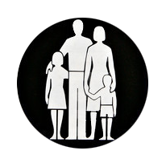
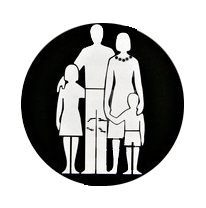
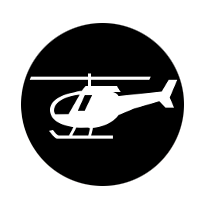
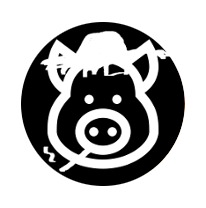
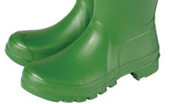
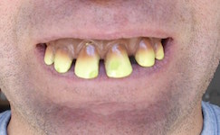
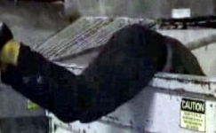
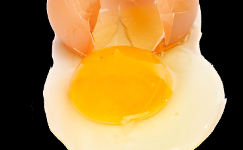

<!DOCTYPE html>
<html lang="en">
  <head>
    <meta charset="utf-8">
    <meta http-equiv="x-ua-compatible" content="ie=edge">
    <meta name="viewport" content="width=device-width, initial-scale=1">
    <meta name="twitter:card" content="summary_large_image">
    <meta name="twitter:site" content="http://2022.withlabour.com">
    <meta name="twitter:title" content="To Twenty Twenty Two">
    <meta name="twitter:description" content="The 2017 General Election Decision Game">
    <meta name="twitter:image" content="http://2022.withlabour.com/assets/banner2.jpg">
    <meta property="og:url" content="http://2022.withlabour.com">
    <meta property="og:type" content="website">
    <meta property="og:title" content="To Twenty Twenty Two">
    <meta property="og:description" content="The 2017 General Election Decision Game">
    <meta property="og:image" content="http://2022.withlabour.com/assets/banner2.jpg">
    <script>(function(i,s,o,g,r,a,m){i['GoogleAnalyticsObject']=r;i[r]=i[r]||function(){(i[r].q=i[r].q||[]).push(arguments)},i[r].l=1*new Date();a=s.createElement(o),m=s.getElementsByTagName(o)[0];a.async=1;a.src=g;m.parentNode.insertBefore(a,m)})(window,document,'script','https://www.google-analytics.com/analytics.js','ga');ga('create', 'UA-83321918-5', 'auto'); ga('send', 'pageview');</script>
    <title>2022</title>
    <style>.enyo-body-fit,.enyo-document-fit{margin:0;position:relative;height:100%}.enyo-image.sized,.enyo-inline,.enyo-tool-decorator{display:inline-block}body{font-family:'Helvetica Neue','Nimbus Sans L',Arial,sans-serif}body.webkitOverflowScrolling{-webkit-overflow-scrolling:touch}.enyo-body-fit{overflow:auto}.enyo-clip,.enyo-touch-scroller,.enyo-touch-strategy-container{overflow:hidden}.enyo-no-touch-action{-ms-touch-action:none}.enyo-untouchable{pointer-events:none}.enyo-untouchable>*{pointer-events:auto}.enyo-unselectable{cursor:default;-ms-user-select:none;-webkit-user-select:none;-moz-user-select:-moz-none;user-select:none}.enyo-selectable{cursor:auto;-ms-user-select:element;-webkit-user-select:text;-moz-user-select:text;user-select:text}.enyo-selectable ::selection,.enyo-selectable::selection{background:#3297FD;color:#FFF}body .enyo-fit{position:absolute;left:0;top:0;right:0;bottom:0}.enyo-fill,.enyo-positioned{position:relative}.enyo-border-box{-webkit-box-sizing:border-box;-moz-box-sizing:border-box;box-sizing:border-box}.enyo-composite{-webkit-transform:translateZ(0);-moz-transform:translateZ(0);-ms-transform:translateZ(0);-o-transform:translateZ(0);transform:translateZ(0)}.enyo-fill{width:100%;height:100%}[tabindex]{outline:0;-webkit-tap-highlight-color:transparent}:-webkit-full-screen{width:100%!important;height:100%!important}:-moz-full-screen{width:100%!important;height:100%!important}:-ms-fullscreen{width:100%!important;height:100%!important}:-o-full-screen{width:100%!important;height:100%!important}:fullscreen{width:100%!important;height:100%!important}body .enyo-fullscreen{position:absolute!important;left:0!important;top:0!important;right:0!important;bottom:0!important;width:100%!important;height:100%!important;box-sizing:border-box!important}.enyo-fill:-webkit-full-screen-ancestor,.enyo-fit:-webkit-full-screen-ancestor{padding:0!important;margin:0!important}.enyo-fill:-moz-full-screen-ancestor,.enyo-fit:-moz-full-screen-ancestor{padding:0!important;margin:0!important}.enyo-fill:-ms-fullscreen-ancestor,.enyo-fit:-ms-fullscreen-ancestor{padding:0!important;margin:0!important}.enyo-fill:-o-full-screen-ancestor,.enyo-fit:-o-full-screen-ancestor{padding:0!important;margin:0!important}.enyo-fill:fullscreen-ancestor,.enyo-fit:fullscreen-ancestor{padding:0!important;margin:0!important}.enyo-image{background-position:center;background-repeat:no-repeat;background-size:cover}.enyo-image.contain{background-size:contain}.enyo-image.cover{background-size:cover}.enyo-thumb{position:absolute;-moz-box-sizing:border-box;box-sizing:border-box;border-radius:4px;background:#333;border:1px solid #666;opacity:.75;z-index:1}.enyo-vthumb{top:0;right:2px;width:4px}.enyo-hthumb{left:0;bottom:2px;height:4px}.enyo-scrim{z-index:1;pointer-events:none}.enyo-scrim.enyo-scrim-translucent{pointer-events:auto;background-color:#000;opacity:.65;filter:alpha(opacity=65)}.enyo-scrim.enyo-scrim-transparent{pointer-events:auto;background:0 0}.enyo-popup{position:absolute;z-index:10}.enyo-tool-decorator>*{display:inline-block;vertical-align:middle}button{font-size:inherit;font-family:inherit}button::-moz-focus-inner{border:0;padding:0}.enyo-scroller{position:relative}.enyo-fit.enyo-scroller{position:absolute}.enyo-touch-scroller-client::after,.enyo-touch-scroller-client::before{content:"";display:table-cell}.enyo-scrollee-fit{height:100%}.enyo-flex-item.flex .enyo-scrollee-fit{position:absolute;top:0;left:0;bottom:0;right:0}
.onyx{color:#333;font-family:'Helvetica Neue','Nimbus Sans L',Arial,sans-serif;font-size:20px;cursor:default;background-color:#EAEAEA;-webkit-tap-highlight-color:transparent}.onyx .onyx input,.onyx .onyx label,.onyx .onyx-button{line-height:normal}.onyx .onyx-selected{background-color:#C4E3FE}.onyx .onyx-dark{background-color:#555656}.onyx .onyx-light{background-color:#cacaca}.onyx .onyx-green{background-color:#91BA07}.onyx .onyx-red{background-color:#C51616}.onyx .onyx-blue{background-color:#35A8EE}.onyx-toolbar{padding:9px 8px 10px;border:1px solid #3A3A3A;background:url(onyx/images/gradient.png) 0 bottom repeat-x #4C4C4C;background-size:contain;color:#fff;white-space:nowrap;overflow-y:visible;font-size:20px}.enyo-fittable-columns-layout.onyx-toolbar-inline>*,.onyx-toolbar-inline>*{display:inline-block;vertical-align:middle;margin:4px 6px 5px;box-sizing:border-box}.enyo-fittable-columns-layout.onyx-toolbar-inline>script,.onyx-toolbar-inline>script{display:none}.onyx-toolbar .onyx-icon-button{margin:3px 2px 1px}.onyx-toolbar .onyx-button{color:#F2F2F2;background-color:#555656;border-color:rgba(15,15,15,.5);margin-top:0;margin-bottom:0;height:36px}.onyx-toolbar .onyx-input-decorator{margin:1px 3px;box-shadow:inset 0 1px 4px rgba(0,0,0,.1);background-color:rgba(0,0,0,.1);padding:0 6px 5px}.onyx-toolbar .onyx-input-decorator.onyx-focused{box-shadow:inset 0 1px 4px rgba(0,0,0,.3);background-color:#fff}.onyx-toolbar .onyx-input-decorator .onyx-input{color:#e5e5e5;font-size:14px}.onyx-toolbar .onyx-input-decorator .onyx-input:focus{color:#000}.onyx-toolbar .onyx-input-decorator .onyx-input:focus::-webkit-input-placeholder{color:#ddd}.onyx-popup{font-size:16px;box-shadow:0 6px 10px rgba(0,0,0,.2);border:1px solid rgba(0,0,0,.2);border-radius:8px;padding:6px;color:#fff;background:url(onyx/images/gradient.png) 0 bottom repeat-x #4C4C4C}.onyx-popup-decorator{position:relative}.onyx-button{outline:0;color:#292929;font-size:16px;text-align:center;white-space:nowrap;margin:0;padding:6px 18px;overflow:hidden;border-radius:3px;border:1px solid #707070;border:1px solid rgba(15,15,15,.2);box-shadow:inset 0 1px 0 rgba(255,255,255,.2);background:url(onyx/images/gradient.png) bottom repeat-x #E1E1E1;background-size:contain;text-overflow:ellipsis}.onyx-button.active,.onyx-button.pressed{background-image:url(onyx/images/gradient-invert.png);background-position:top;border-top:1px solid rgba(15,15,15,.6);box-shadow:inset 0 1px 0 rgba(0,0,0,.1)}.onyx-button[disabled]{opacity:.4;filter:alpha(opacity=40)}.onyx-button>img{padding:0 3px}.onyx-button::-moz-focus-inner{border:0}.onyx-button.onyx-blue{background-color:#35A8EE;color:#F2F2F2}.onyx-button.onyx-affirmative{background-color:#91BA07;color:#F2F2F2}.onyx-button.onyx-negative{background-color:#C51616;color:#F2F2F2}.onyx-button.onyx-dark{background-color:#555656;color:#F2F2F2}.onyx-button.onyx-light{background-color:#cacaca;color:#2F2F2F}
.enyo-fittable-rows-layout{position:relative}.enyo-fittable-rows-layout>*{box-sizing:border-box;-webkit-box-sizing:border-box;-moz-box-sizing:border-box;float:left;clear:both}.enyo-fittable-rows-layout.enyo-stretch>*{float:none;clear:none}.enyo-fittable-rows-layout.enyo-stretch.enyo-margin-expand>*{float:left;clear:both;width:100%;margin-left:0!important;margin-right:0!important}.enyo-fittable-columns-layout{position:relative;text-align:left;white-space:nowrap}.enyo-fittable-columns-layout.enyo-center,.enyo-locale-right-to-left .enyo-fittable-columns-layout.enyo-center{text-align:center}.enyo-fittable-columns-layout>*{box-sizing:border-box;-webkit-box-sizing:border-box;-moz-box-sizing:border-box;vertical-align:top;display:inline-block;white-space:normal}.enyo-fittable-columns-layout>table{display:inline-table}.enyo-fittable-columns-layout.enyo-tool-decorator>*{vertical-align:middle}.enyo-fittable-columns-layout>code,.enyo-fittable-columns-layout>pre{white-space:pre}.enyo-fittable-columns-layout>.enyo-fittable-columns-layout,.enyo-fittable-columns-layout>.onyx-toolbar-inline{white-space:nowrap}.enyo-fittable-columns-layout.enyo-stretch>*{height:100%;margin-top:0!important;margin-bottom:0!important}.enyo-locale-right-to-left .enyo-fittable-columns-layout{direction:rtl;text-align:right}.enyo-locale-right-to-left .enyo-fittable-columns-layout.force-left-to-right{direction:ltr;text-align:left}.enyo-flex-container{display:-webkit-box;display:-moz-box;display:-ms-flexbox;display:-webkit-flex;display:flex}.enyo-flex-container.enyo-center{justify-content:center}.enyo-flex-container.columns{-webkit-flex-direction:row;-ms-flex-direction:row;flex-direction:row}.enyo-flex-container.rows{-webkit-flex-direction:column;-ms-flex-direction:column;flex-direction:column}.enyo-flex-item{-webkit-box-flex:0;-moz-box-flex:0;-webkit-flex:0 0 auto;-ms-flex:0 0 auto;flex:0 0 auto}.enyo-flex-item.flex{-webkit-box-flex:1;-moz-box-flex:1;-webkit-flex:1 1 auto;-ms-flex:1 1 auto;flex:1 1 auto}.enyo-flex-container.nostretch>.enyo-flex-item{-webkit-align-self:flex-start;-ms-flex-item-align:flex-start;align-self:flex-start}
.onyx-toolbar .share-facebook,.share-facebook{background-color:#3b579d;color:#FFF}.share-facebook .icon{margin:0 5px 0 -10px;height:16px}.onyx-toolbar .share-twitter,.share-twitter{background-color:#1b95e0;color:#FFF}.share-twitter .icon{margin:-2px 5px 0 -10px;height:16px}
.popup.box,.score .box,.scores-list,.title{text-align:center}.main{background-color:#000}a{color:#FFF}.event .popup .alert{background-color:#900}.headline{font-family:serif;font-size:30px;font-weight:700;text-transform:uppercase}.popup.box.splash{width:600px;height:600px;max-width:90%;max-height:90%;background-color:transparent;border:none;background-image:url(assets/splash.jpg);background-repeat:no-repeat;background-position:center center;background-size:100% auto}.splash img{width:100%;display:none}.scores-list{max-width:1000px;margin:0 auto 5px}.score.wrapper{width:240px;margin:5px}.score .box{width:100%;color:#FFF}.score .label{display:block;width:100%;margin-bottom:10px;font-size:24px;font-weight:700;line-height:50px;text-shadow:-1px -1px 0 #000,1px -1px 0 #000,-1px 1px 0 #000,1px 1px 0 #000}.score .icon{width:150px;height:150px;border-radius:75px;z-index:2}.score .progress{width:100%;border:2px solid}.score .progress .bar{min-width:2%;max-width:99.5%;height:10px}.popup.box{margin:10xp;max-width:90%;max-height:90%;width:300px}.hidden{-webkit-animation:.2s normal forwards hide;animation:.2s normal forwards hide}.showing{-webkit-animation:.2s normal forwards show;animation:.2s normal forwards show}@-webkit-keyframes hide{from{transform:scale(1,1)}to{transform:scale(0,0)}}@keyframes hide{from{transform:scale(1,1)}to{transform:scale(0,0)}}@-webkit-keyframes show{from{transform:scale(0,0)}to{transform:scale(1,1)}}@keyframes show{from{transform:scale(0,0)}to{transform:scale(1,1)}}.popup .text{margin:4px}.pic{height:150px;display:block;margin:4px 4px 10px}span{border-radius:5px}.labour .progress,.popup.labour{background-color:#b0002f;border-color:#b0002f}.labour .progress .bar,.labour-red .popup{background-color:#e4003b;border-color:#e4003b}.education .icon,.education .progress,.popup.education{background-color:#282;border-color:#282}.education .label,.education .progress .bar{background-color:#4C4;border-color:#4C4}span.education{color:#4C4}.health .icon,.health .progress,.popup.health{background-color:#1f7099;border-color:#1f7099}.health .label,.health .progress .bar{background-color:#3bf;border-color:#3bf}span.health{color:#3bf}.popup.treasury,.treasury .icon,.treasury .progress{background-color:#880;border-color:#880}.treasury .label,.treasury .popup,.treasury .progress .bar{background-color:#CC0;border-color:#CC0}span.treasury{color:#CC0}.popup.security,.security .icon,.security .progress{background-color:#1b4080;border-color:#1b4080}.security .label,.security .popup,.security .progress .bar{background-color:#337aff;border-color:#337aff}span.security{color:#337aff}.people .icon,.people .progress,.popup.people{background-color:#833;border-color:#833}.people .label,.people .progress .bar{background-color:#C66;border-color:#C66}span.people{color:#C66}.affluent .icon,.affluent .progress,.popup.affluent{background-color:#949;border-color:#949}.affluent .label,.affluent .progress .bar{background-color:#C6C;border-color:#C6C}span.affluent{color:#C6C}.oligarchs .icon,.oligarchs .progress,.popup.oligarchs{background-color:#449;border-color:#449}.oligarchs .label,.oligarchs .progress .bar{background-color:#66C;border-color:#66C}span.oligarchs{color:#99F}.popup.press,.press .icon,.press .progress{background-color:#872;border-color:#872}.press .label,.press .progress .bar{background-color:#BA6;border-color:#BA6}span.press{color:#BA6}
</style>
    <script>!function(e,r){function t(e,r,t){return Object.defineProperty?Object.defineProperty(e,r,t):(e[r]=t.value,e)}function n(r){if(r&&"string"==typeof r){if(a.hasOwnProperty(r))return a[r]
var n,o,s,f,_,request=u.request,c=i[r]
if(!c)throw new Error('Could not find module "'+r+'"')
if(!(c instanceof Array))throw"object"==typeof c&&(c.source||c.style)?new Error('Attempt to require an asynchronous module "'+r+'"'):"string"==typeof c?new Error('Attempt to require a bundle entry "'+r+'"'):new Error('The shared module manifest has been corrupted, the module is invalid "'+r+'"')
if(n=c[0],o=c[1],"function"!=typeof n)throw new Error('The shared module manifest has been corrupted, the module is invalid "'+r+'"')
return s={exports:{}},request&&(o?(f=function(e){return request(o.hasOwnProperty(e)?o[e]:e)},t(f,"isRequest",{value:request.isRequest})):f=request),_=o?function(e){return require(o.hasOwnProperty(e)?o[e]:e)}:require,n(s,s.exports,e,_,f),a[r]=s.exports}}var o,u=e.enyo||(e.enyo={}),i=u.__manifest__||t(u,"__manifest__",{value:{}})&&u.__manifest__,a=u.__exported__||t(u,"__exported__",{value:{}})&&u.__exported__,require=u.require||t(u,"require",{value:n})&&u.require,s=function(){return{}}()
o=null,s&&Object.keys(s).forEach(function(e){var r=s[e];(!i.hasOwnProperty(e)||r&&r instanceof Array)&&(i[e]=r)}),o&&o.forEach&&o.forEach(function(e){require(e)})}(this)

!function(e,r){function t(e,r,t){return Object.defineProperty?Object.defineProperty(e,r,t):(e[r]=t.value,e)}function n(r){if(r&&"string"==typeof r){if(a.hasOwnProperty(r))return a[r]
var n,o,s,f,_,request=u.request,c=i[r]
if(!c)throw new Error('Could not find module "'+r+'"')
if(!(c instanceof Array))throw"object"==typeof c&&(c.source||c.style)?new Error('Attempt to require an asynchronous module "'+r+'"'):"string"==typeof c?new Error('Attempt to require a bundle entry "'+r+'"'):new Error('The shared module manifest has been corrupted, the module is invalid "'+r+'"')
if(n=c[0],o=c[1],"function"!=typeof n)throw new Error('The shared module manifest has been corrupted, the module is invalid "'+r+'"')
return s={exports:{}},request&&(o?(f=function(e){return request(o.hasOwnProperty(e)?o[e]:e)},t(f,"isRequest",{value:request.isRequest})):f=request),_=o?function(e){return require(o.hasOwnProperty(e)?o[e]:e)}:require,n(s,s.exports,e,_,f),a[r]=s.exports}}var o,u=e.enyo||(e.enyo={}),i=u.__manifest__||t(u,"__manifest__",{value:{}})&&u.__manifest__,a=u.__exported__||t(u,"__exported__",{value:{}})&&u.__exported__,require=u.require||t(u,"require",{value:n})&&u.require,s=function(){return{}}()
o=null,s&&Object.keys(s).forEach(function(e){var r=s[e];(!i.hasOwnProperty(e)||r&&r instanceof Array)&&(i[e]=r)}),o&&o.forEach&&o.forEach(function(e){require(e)})}(this)

!function(e,r){function t(e,r,t){return Object.defineProperty?Object.defineProperty(e,r,t):(e[r]=t.value,e)}function n(r){if(r&&"string"==typeof r){if(a.hasOwnProperty(r))return a[r]
var n,o,s,f,_,request=u.request,c=i[r]
if(!c)throw new Error('Could not find module "'+r+'"')
if(!(c instanceof Array))throw"object"==typeof c&&(c.source||c.style)?new Error('Attempt to require an asynchronous module "'+r+'"'):"string"==typeof c?new Error('Attempt to require a bundle entry "'+r+'"'):new Error('The shared module manifest has been corrupted, the module is invalid "'+r+'"')
if(n=c[0],o=c[1],"function"!=typeof n)throw new Error('The shared module manifest has been corrupted, the module is invalid "'+r+'"')
return s={exports:{}},request&&(o?(f=function(e){return request(o.hasOwnProperty(e)?o[e]:e)},t(f,"isRequest",{value:request.isRequest})):f=request),_=o?function(e){return require(o.hasOwnProperty(e)?o[e]:e)}:require,n(s,s.exports,e,_,f),a[r]=s.exports}}var o,u=e.enyo||(e.enyo={}),i=u.__manifest__||t(u,"__manifest__",{value:{}})&&u.__manifest__,a=u.__exported__||t(u,"__exported__",{value:{}})&&u.__exported__,require=u.require||t(u,"require",{value:n})&&u.require,s=function(){return{}}()
o=null,s&&Object.keys(s).forEach(function(e){var r=s[e];(!i.hasOwnProperty(e)||r&&r instanceof Array)&&(i[e]=r)}),o&&o.forEach&&o.forEach(function(e){require(e)})}(this)

!function(e,r){function t(e,r,t){return Object.defineProperty?Object.defineProperty(e,r,t):(e[r]=t.value,e)}function n(r){if(r&&"string"==typeof r){if(a.hasOwnProperty(r))return a[r]
var n,o,s,f,_,request=u.request,c=i[r]
if(!c)throw new Error('Could not find module "'+r+'"')
if(!(c instanceof Array))throw"object"==typeof c&&(c.source||c.style)?new Error('Attempt to require an asynchronous module "'+r+'"'):"string"==typeof c?new Error('Attempt to require a bundle entry "'+r+'"'):new Error('The shared module manifest has been corrupted, the module is invalid "'+r+'"')
if(n=c[0],o=c[1],"function"!=typeof n)throw new Error('The shared module manifest has been corrupted, the module is invalid "'+r+'"')
return s={exports:{}},request&&(o?(f=function(e){return request(o.hasOwnProperty(e)?o[e]:e)},t(f,"isRequest",{value:request.isRequest})):f=request),_=o?function(e){return require(o.hasOwnProperty(e)?o[e]:e)}:require,n(s,s.exports,e,_,f),a[r]=s.exports}}var o,u=e.enyo||(e.enyo={}),i=u.__manifest__||t(u,"__manifest__",{value:{}})&&u.__manifest__,a=u.__exported__||t(u,"__exported__",{value:{}})&&u.__exported__,require=u.require||t(u,"require",{value:n})&&u.require,s=function(){return{}}()
o=null,s&&Object.keys(s).forEach(function(e){var r=s[e];(!i.hasOwnProperty(e)||r&&r instanceof Array)&&(i[e]=r)}),o&&o.forEach&&o.forEach(function(e){require(e)})}(this)

!function(t,e){function n(t,e,n){return Object.defineProperty?Object.defineProperty(t,e,n):(t[e]=n.value,t)}function i(e){if(e&&"string"==typeof e){if(a.hasOwnProperty(e))return a[e]
var i,s,l,h,c,request=o.request,u=r[e]
if(!u)throw new Error('Could not find module "'+e+'"')
if(!(u instanceof Array))throw"object"==typeof u&&(u.source||u.style)?new Error('Attempt to require an asynchronous module "'+e+'"'):"string"==typeof u?new Error('Attempt to require a bundle entry "'+e+'"'):new Error('The shared module manifest has been corrupted, the module is invalid "'+e+'"')
if(i=u[0],s=u[1],"function"!=typeof i)throw new Error('The shared module manifest has been corrupted, the module is invalid "'+e+'"')
return l={exports:{}},request&&(s?(h=function(t){return request(s.hasOwnProperty(t)?s[t]:t)},n(h,"isRequest",{value:request.isRequest})):h=request),c=s?function(t){return require(s.hasOwnProperty(t)?s[t]:t)}:require,i(l,l.exports,t,c,h),a[e]=l.exports}}var s,o=t.enyo||(t.enyo={}),r=o.__manifest__||n(o,"__manifest__",{value:{}})&&o.__manifest__,a=o.__exported__||n(o,"__exported__",{value:{}})&&o.__exported__,require=o.require||n(o,"require",{value:i})&&o.require,l=function(){return{"enyo/options":[function(t,e,n,require,request){"use strict"
t.exports=n.enyo&&n.enyo.options||{}}],"enyo/PathResolverFactory":[function(t,e,n,require,request){(t.exports=function(){this.paths={},this.pathNames=[]}).prototype={addPath:function(t,e){return this.paths[t]=e,this.pathNames.push(t),this.pathNames.sort(function(t,e){return e.length-t.length}),e},addPaths:function(t){if(t)for(var e in t)this.addPath(e,t[e])},includeTrailingSlash:function(t){return t&&"/"!==t.slice(-1)?t+"/":t},rewrite:function(t){var e,n=this.includeTrailingSlash,i=this.paths,s=function(t,s){return e=!0,n(i[s])||""},o=t
do{e=!1
for(var r=0;r<this.pathNames.length;r++){var a=new RegExp("\\$("+this.pathNames[r]+")(\\/)?","g")
o=o.replace(a,s)}}while(e)
return o}}}],enyo:[function(t,e,n,require,request){"use strict"
e=t.exports=require("./src/options"),e.version="2.7.0"},{"./src/options":"enyo/options"}],"enyo/pathResolver":[function(t,e,n,require,request){var i=require("./PathResolverFactory")
t.exports=new i},{"./PathResolverFactory":"enyo/PathResolverFactory"}],"enyo/ready":[function(t,e,n,require,request){require("enyo")
var i,s,o,r,a,l=n.document,h=[],c="complete"===l.readyState,u=!1
t.exports=function(t,e){h.push([t,e]),c&&!u&&(setTimeout(a,0),u=!0)},i=function(t,e){t.call(e||n)},s=function(t){(c="interactive"===l.readyState)&&"DOMContentLoaded"!==t.type&&"readystatechange"!==t.type&&(o(t.type,s),a()),(c="complete"===l.readyState||"loaded"===l.readyState)&&(o(t.type,s),a())},r=function(t,e){l.addEventListener(t,e,!1)},o=function(t,e){l.removeEventListener(t,e,!1)},a=function(){if(c&&h.length)for(;h.length;)i.apply(n,h.shift())
u=!1},r("DOMContentLoaded",s),r("readystatechange",s)}],"enyo/utils":[function(t,e,n,require,request){require("enyo"),Function.prototype.bind||(Function.prototype.bind=function(t){var e,n=Array.prototype.slice.call(arguments,1),i=this,s=function(){}
if("function"!=typeof this)throw new TypeError("Function.prototype.bind called on non-callable object.")
return e=function(){var e=n.concat(Array.prototype.slice.call(arguments)),o=this instanceof s&&t?this:t
return i.apply(o,e)},s.prototype=this.prototype,e.prototype=new s,e}),e.Extensible=function t(e){if(!(this instanceof t))return new t(e)
this.fn=e
var n=function(){return this.fn.apply(this,arguments)}.bind(this)
return n.extend=function(t){this.fn=t(this.fn)}.bind(this),n},e.nop=function(){},e.nob={},e.nar=[]
var i=e.instance=function(){},s=e.setPrototype=function(t,e){t.prototype=e}
e.delegate=function(t){return s(i,t),new i}
var o=e.exists=function(t){return void 0!==t},r=0
e.uid=function(t){return String((t||"")+r++)},e.uuid=function(){var t
return Math.random().toString(16).substr(2,8)+"-"+(t=Math.random().toString(16).substr(2,8)).substr(0,4)+"-"+t.substr(4,4)+(t=Math.random().toString(16).substr(2,8)).substr(0,4)+"-"+t.substr(4,4)+Math.random().toString(16).substr(2,8)},e.irand=function(t){return Math.floor(Math.random()*t)}
var a=Object.prototype.toString
e.isString=function(t){return"[object String]"===a.call(t)},e.isFunction=function(t){return"[object Function]"===a.call(t)}
var l=e.isArray=Array.isArray||function(t){return"[object Array]"===a.call(t)}
e.isObject=Object.isObject||function(t){return"[object Object]"===a.call(t)},e.isTrue=function(t){return!("false"===t||!1===t||0===t||null===t||void 0===t)},e.isNumeric=function(t){return!l(t)&&t-parseFloat(t)+1>=0}
var h=e.bind=function(t,e){if(e||(e=t,t=null),t=t||n,"string"==typeof e){if(!t[e])throw'enyo.bind: scope["'+e+'"] is null (scope="'+t+'")'
e=t[e]}if("function"==typeof e){var i=v(arguments,2)
return e.bind?e.bind.apply(e,[t].concat(i)):function(){var n=v(arguments)
return e.apply(t,i.concat(n))}}throw'enyo.bind: scope["'+e+'"] is not a function (scope="'+t+'")'}
e.bindSafely=function(t,e){if("string"==typeof e){if(!t[e])throw'enyo.bindSafely: scope["'+e+'"] is null (this="'+this+'")'
e=t[e]}if("function"==typeof e){var n=v(arguments,2)
return function(){if(!t.destroyed){var i=v(arguments)
return e.apply(t,n.concat(i))}}}throw'enyo.bindSafely: scope["'+e+'"] is not a function (this="'+this+'")'},e.asyncMethod=function(t,e){return e?setTimeout(h.apply(t,arguments),1):setTimeout(t,1)},e.call=function(t,e,n){var i=t||this
if(e){var s=i[e]||e
if(s&&s.apply)return s.apply(i,n||[])}}
var c=e.now=Date.now||function(){return(new Date).getTime()}
e.perfNow=function(){var t=window.performance||{}
return t.now=t.now||t.mozNow||t.msNow||t.oNow||t.webkitNow||c,function(){return t.now()}}()
var u=e.getPath=function(t){if(!t&&null!==t&&void 0!==t)return t
var e,n,i,s=this
if("."==t[0]&&(t=t.replace(/^\.+/,"")),t){e=t.split("."),n=e.shift()
do{s,s=s._getters&&(i=s._getters[n])&&!i.generated?s[i]():s.get&&s!==this&&s.get!==u?s.get(n):s[n]}while(s&&(n=e.shift()))
return s}}
u.fast=function(t){var e,n=this
return n._getters&&(e=n._getters[t])?n[e]():n[t]}
var d=e.setPath=function(t,e,n){if(!t||!t&&null!==t&&void 0!==t)return this
var i,s,o,r,a,l,h,c=this,p={create:!0,silent:!1,force:!1},f=c
if("object"==typeof n?n=y({},[p,n]):(r=n,n=p),n.force&&(r=!0),l=n.silent,a=n.create,h=n.comparator,"."==t[0]&&(t=t.replace(/^\.+/,"")),!t)return c
i=t.split("."),s=i.shift()
do{if(i.length){if(c!==f&&c.set&&c.set!==d)return i.unshift(s),c.set(i.join("."),e,n),f
c=c!==f&&c.get?(c.get!==u?c.get(s):c[s])||a&&(c[s]={}):c[s]||a&&(c[s]={})}else o=c.get&&c.get!==u?c.get(s):c[s]}while(c&&i.length&&(s=i.shift()))
return c?c!==f&&c.set&&c.set!==d?(c.set(s,e,n),f):(c[s]=e,c.notify&&!l&&(r||o!==e||h&&h(o,e))&&c.notify(s,o,e,n),f):f}
d.fast=function(t,e){var n,i,s=this
return s._computed&&void 0!==s._computed[t]?s:(n=s._getters&&(i=s._getters[t])?s[i]():s[t],s[t]=e,n!==e&&s.notifyObservers(t,n,e),s)},e.toUpperCase=new e.Extensible(function(t){return null!=t?t.toString().toUpperCase():t}),e.toLowerCase=new e.Extensible(function(t){return null!=t?t.toString().toLowerCase():t}),e.cap=function(t){return t.slice(0,1).toUpperCase()+t.slice(1)},e.uncap=function(t){return t.slice(0,1).toLowerCase()+t.slice(1)},e.format=function(t){var e,n=/\%./g,i=0,s=t,o=arguments
return e=function(){return o[++i]},s.replace(n,e)},String.prototype.trim=String.prototype.trim||function(){return this.replace(/^\s+|\s+$/g,"")},e.trim=function(t){return"string"==typeof t&&t.trim()||t},Object.create=Object.create||function(){var t=function(){}
return function(e){if(!e||null===e||"object"!=typeof e)throw"Object.create: Invalid parameter"
return t.prototype=e,new t}}(),Object.keys=Object.keys||function(t){var e=[],n=Object.prototype.hasOwnProperty
for(var i in t)n.call(t,i)&&e.push(i)
return e},e.keys=Object.keys,e.only=function(t,e,n){var i,s,o,r={}
for(o=0,s=t.length>>>0;o<s;++o)i=t[o],(!n||void 0!==e[i]&&null!==e[i])&&(r[i]=e[i])
return r},e.remap=function(t,e,n){var i,s=n?p(e):{}
for(i in t)i in e&&(s[t[i]]=e.get?e.get(i):e[i])
return s},e.indexBy=function(t,e,n){var i,s,r={},a=0
if(!(o(e)&&e instanceof Array))return r
if(!o(t)||"string"!=typeof t)return r
var l=p(e)
for(n=o(n)&&"function"==typeof n?n:void 0,s=e.length;a<s;++a)i=e[a],o(i)&&o(i[t])&&(n?n(t,i,r,l):r[i[t]]=i)
return r}
var p=e.clone=function(t,e){if(t){if(t instanceof Array)return t.slice()
if(t instanceof Object)return e?Object.create(t):y({},t)}return t},f={},g={exists:!1,ignore:!1,filter:null},y=e.mixin=function(){var t,e=arguments[0],n=arguments[1],i=arguments[2]
if(e?e instanceof Array&&(i=n,n=e,e={}):e={},i&&!0!==i||(i=g),n instanceof Array)for(var s,o=0;s=n[o];++o)y(e,s,i)
else for(var r in n)t=n[r],f[r]!==t&&(i.exists&&!t||i.ignore&&e[r]||i.filter&&!i.filter(r,t,n,e,i)||(e[r]=t))
return e}
e.values=function(t){var e=[]
for(var n in t)t.hasOwnProperty(n)&&e.push(t[n])
return e},Array.prototype.findIndex=Array.prototype.findIndex||function(t,e){for(var n=0,i=this.length>>>0;n<i;++n)if(t.call(e,this[n],n,this))return n
return-1},Array.prototype.find=Array.prototype.find||function(t,e){for(var n=0,i=this.length>>>0;n<i;++n)if(t.call(e,this[n],n,this))return this[n]},e.indexOf=function(t,e,n){return t instanceof Array?t.indexOf(e,n):e.indexOf(t,n)},e.lastIndexOf=function(t,e,n){return t instanceof Array?t.lastIndexOf(e,n):e.lastIndexOf(t,n)},e.findIndex=function(t,e,n){return t.findIndex(e,n)}
var m=e.find=function(t,e,n){return t.find(e,n)}
e.where=m,e.forEach=function(t,e,n){return t.forEach(e,n)},e.map=function(t,e,n){return t.map(e,n)},e.filter=function(t,e,n){return t.filter(e,n)},e.pluck=function(t,e){if(!(t instanceof Array)){var n=t
t=e,e=n}for(var i=[],s=0,o=t.length>>>0;s<o;++s)i.push(t[s]?t[s][e]:void 0)
return i},e.merge=function(){for(var t=[],e=Array.prototype.concat.apply([],arguments),n=0,i=e.length>>>0;n<i;++n)~t.indexOf(e[n])||t.push(e[n])
return t}
var v=e.cloneArray=function(t,e,n){for(var i=n||[],s=e||0,o=t.length;s<o;s++)i.push(t[s])
return i}
e.toArray=v,e.remove=function(t,e){if(!(t instanceof Array)){var n=t
t=e,e=n}var i=t.indexOf(e)
return-1<i&&t.splice(i,1),t}
var b=/[\u0600-\u06FF\u0750-\u077F\u08A0-\u08FF\uFB50-\uFDFF\uFE70-\uFEFE\u0590-\u05FF\uFB1D-\uFB4F]/
e.isRtl=function(t){return b.test(t)}}],"enyo/json":[function(t,e,n,require,request){require("enyo"),t.exports={stringify:function(t,e,n){return JSON.stringify(t,e,n)},parse:function(t,e){return t?JSON.parse(t,e):null}}}],"enyo/roots":[function(t,e,n,require,request){function i(t){s.forEach(function(e){e.method.call(e.context,t)})}require("enyo")
var s=[],o=[]
e.rendered=function(t,e){s.push({method:t,context:e||n})},e.roots=o,e.addToRoots=function(t){var e,n;-1===o.indexOf(t)&&(o.push(t),e=t.rendered,n=t.destroy,t.rendered=function(){e.apply(this,arguments),i(this)},t.destroy=function(){var t=o.indexOf(this)
t>-1&&o.splice(t,1),n.apply(this,arguments)})}}],"enyo/ModelList":[function(t,e,n,require,request){function i(t){Array.call(this),this.table={},t&&this.add(t,0)}require("enyo"),i.prototype=Object.create(Array.prototype),t.exports=i,i.prototype.add=function(t,e){var n,i,s,o=this.table,r=[],a=0
for(!t||t instanceof Array||(t=[t]);n=t[a];++a)i=n.euid,o[i]||(s=n.get(n.primaryKey),null!=s&&(o[s]&&o[s]!==n?n.headless=!0:o[s]=n),o[i]=n,r.push(n))
return r.length&&(e=isNaN(e)?0:Math.min(Math.max(0,e),this.length),r.unshift(0),r.unshift(e),this.splice.apply(this,r)),r.length>0&&(r=r.slice(2)),r.at=e,r},i.prototype.remove=function(t){var e,n,i,s,o=this.table,r=[],a=1/0,l=-1,h=[]
for(!t||t instanceof Array||(t=[t]),s=t.length-1;e=t[s];--s)o[e.euid]=null,i=e.get(e.primaryKey),null!=i&&(o[i]=null),(n=t===this?s:this.indexOf(e))>-1&&(n<a&&(a=n),n>l&&(l=n),this.splice(n,1),r.push(e),h.push(n))
return r.low=a,r.high=l,r.indices=h,r},i.prototype.has=function(t){return void 0!==t&&null!==t&&("string"==typeof t||"number"==typeof t?!!this.table[t]:this.indexOf(t)>-1)},i.prototype.resolve=function(t){return"string"==typeof t||"number"==typeof t?this.table[t]:t},i.prototype.copy=function(){return new i(this)}}],"enyo/States":[function(t,e,n,require,request){require("enyo"),t.exports={NEW:1,DIRTY:2,CLEAN:4,DESTROYED:8,FETCHING:16,COMMITTING:32,DESTROYING:64,ERROR_COMMITTING:128,ERROR_FETCHING:256,ERROR_DESTROYING:512,ERROR_UNKNOWN:1024,BUSY:112,ERROR:1920,READY:-2041}}],"enyo/job":[function(t,e,n,require,request){require("enyo")
var i={}
e=t.exports=function(t,n,s){e.stop(t),i[t]=setTimeout(function(){e.stop(t),n()},s)},e.stop=function(t){i[t]&&(clearTimeout(i[t]),delete i[t])},e.throttle=function(t,n,s){i[t]||(n(),i[t]=setTimeout(function(){e.stop(t)},s))}}],"enyo/platform":[function(t,e,n,require,request){require("enyo")
var i=require("./utils")
e=t.exports={touch:Boolean("ontouchstart"in window||window.navigator.msMaxTouchPoints||window.navigator.msManipulationViewsEnabled&&window.navigator.maxTouchPoints),gesture:Boolean("ongesturestart"in window||"onmsgesturestart"in window&&(window.navigator.msMaxTouchPoints>1||window.navigator.maxTouchPoints>1))}
for(var s,o,r,a=navigator.userAgent,l=e,h=[{platform:"windowsPhone",regex:/Windows Phone (?:OS )?(\d+)[.\d]+/},{platform:"androidChrome",regex:/Android .* Chrome\/(\d+)[.\d]+/},{platform:"android",regex:/Android(?:\s|\/)(\d+)/},{platform:"android",regex:/Silk\/1./,forceVersion:2,extra:{silk:1}},{platform:"android",regex:/Silk\/2./,forceVersion:4,extra:{silk:2}},{platform:"android",regex:/Silk\/3./,forceVersion:4,extra:{silk:3}},{platform:"ie",regex:/MSIE (\d+)/},{platform:"ie",regex:/Trident\/.*; rv:(\d+)/},{platform:"edge",regex:/Edge\/(\d+)/},{platform:"ios",regex:/iP(?:hone|ad;(?: U;)? CPU) OS (\d+)/},{platform:"webos",regex:/(?:web|hpw)OS\/(\d+)/},{platform:"webos",regex:/WebAppManager|Isis|webOS\./,forceVersion:4},{platform:"webos",regex:/LuneOS/,forceVersion:4,extra:{luneos:1}},{platform:"safari",regex:/Version\/(\d+)[.\d]+\s+Safari/},{platform:"chrome",regex:/Chrome\/(\d+)[.\d]+/},{platform:"androidFirefox",regex:/Android;.*Firefox\/(\d+)/},{platform:"firefoxOS",regex:/Mobile;.*Firefox\/(\d+)/},{platform:"firefox",regex:/Firefox\/(\d+)/},{platform:"blackberry",regex:/PlayBook/i,forceVersion:2},{platform:"blackberry",regex:/BB1\d;.*Version\/(\d+\.\d+)/},{platform:"tizen",regex:/Tizen (\d+)/}],c=0;s=h[c];c++)if(o=s.regex.exec(a)){r=s.forceVersion?s.forceVersion:Number(o[1]),l[s.platform]=r,s.extra&&i.mixin(l,s.extra),l.platformName=s.platform
break}},{"./utils":"enyo/utils"}],"enyo/StateSupport":[function(t,e,n,require,request){require("enyo")
var i=require("./States"),s={name:"StateSupport",status:null,clearError:function(){this.status=this.status&~i.ERROR},isError:function(t){return!!((isNaN(t)?this.status:t)&i.ERROR)},isBusy:function(t){return!!((isNaN(t)?this.status:t)&i.BUSY)},isReady:function(t){return!!((isNaN(t)?this.status:t)&i.READY)}}
t.exports=s},{"./States":"enyo/States"}],"enyo/logger":[function(t,e,n,require,request){require("enyo")
var i=require("./json"),s=require("./utils"),o=require("./platform"),r=Boolean(o.android||o.ios||o.webos)
e=t.exports={level:99,levels:{log:20,warn:10,error:0},shouldLog:function(t){return parseInt(this.levels[t],0)<=this.level},validateArgs:function(t){for(var e,n=0,s=t.length;(e=t[n])||n<s;n++)try{"object"==typeof e&&(t[n]=i.stringify(e))}catch(e){t[n]="Error: "+e.message}},_log:function(t,e){var i=n.console
if(void 0!==i){var a=s.isArray(e)?e:s.cloneArray(e)
o.androidFirefox&&this.validateArgs(a),r&&(a=[a.join(" ")])
var l=i[t]
l&&l.apply?l.apply(i,a):i.log.apply?i.log.apply(i,a):i.log(a.join(" "))}},log:function(t,e){"log"!=t&&"warn"!=t&&"error"!=t&&(e=Array.prototype.slice.call(arguments),t="log"),void 0!==n.console&&this.shouldLog(t)&&this._log(t,e)}},e.setLogLevel=function(t){var e=parseInt(t,0)
isFinite(e)&&(this.level=e)},e.warn=function(){this.log("warn",arguments)},e.error=function(){this.log("error",arguments)}},{"./json":"enyo/json","./utils":"enyo/utils","./platform":"enyo/platform"}],"enyo/dom":[function(t,e,n,require,request){require("enyo")
var i=require("./roots"),s=require("./utils"),o=require("./platform"),r=t.exports={byId:function(t,e){return"string"==typeof t?(e||document).getElementById(t):t},escape:function(t){return null!==t?String(t).replace(/&/g,"&amp;").replace(/</g,"&lt;").replace(/>/g,"&gt;"):""},getBounds:function(t){return t?{left:t.offsetLeft,top:t.offsetTop,width:t.offsetWidth,height:t.offsetHeight}:null},getComputedStyle:function(t){return n.getComputedStyle&&t&&n.getComputedStyle(t,null)},getComputedStyleValue:function(t,e,n){var i=n||this.getComputedStyle(t),s=o.ie
if(i=i?i.getPropertyValue(e):null,s){var r={thin:"2px",medium:"4px",thick:"6px",none:"0"}
if(void 0!==r[i]&&(i=r[i]),"auto"==i)switch(e){case"width":i=t.offsetWidth
break
case"height":i=t.offsetHeight}}return i},getFirstElementByTagName:function(t){var e=document.getElementsByTagName(t)
return e&&e[0]},applyBodyFit:function(){var t=this.getFirstElementByTagName("html")
t&&this.addClass(t,"enyo-document-fit"),r.addBodyClass("enyo-body-fit"),r.bodyIsFitting=!0},getWindowWidth:function(){return n.innerWidth?n.innerWidth:document.body&&document.body.offsetWidth?document.body.offsetWidth:"CSS1Compat"==document.compatMode&&document.documentElement&&document.documentElement.offsetWidth?document.documentElement.offsetWidth:320},getWindowHeight:function(){return n.innerHeight?n.innerHeight:document.body&&document.body.offsetHeight?document.body.offsetHeight:"CSS1Compat"==document.compatMode&&document.documentElement&&document.documentElement.offsetHeight?document.documentElement.offsetHeight:480},_bodyScaleFactorY:1,_bodyScaleFactorX:1,updateScaleFactor:function(){var t=this.getBounds(document.body)
this._bodyScaleFactorY=t.height/this.getWindowHeight(),this._bodyScaleFactorX=t.width/this.getWindowWidth()},getComputedBoxValue:function(t,e,n,i){var s=i||this.getComputedStyle(t)
if(s){var o=s.getPropertyValue(e+"-"+n)
return"auto"===o?0:parseInt(o,10)}return 0},calcBoxExtents:function(t,e){var n=this.getComputedStyle(t)
return{top:this.getComputedBoxValue(t,e,"top",n),right:this.getComputedBoxValue(t,e,"right",n),bottom:this.getComputedBoxValue(t,e,"bottom",n),left:this.getComputedBoxValue(t,e,"left",n)}},calcPaddingExtents:function(t){return this.calcBoxExtents(t,"padding")},calcMarginExtents:function(t){return this.calcBoxExtents(t,"margin")},calcNodePosition:function(t,e){var i=0,s=0,o=t,a=o.offsetWidth,l=o.offsetHeight,h=r.getStyleTransformProp(),c=/translateX\((-?\d+)px\)/i,u=/translateY\((-?\d+)px\)/i,d=0,p=0,f=0,g=0,y=0,m=0
if(e?(f=e.offsetHeight,g=e.offsetWidth):(f=document.body.parentNode.offsetHeight>this.getWindowHeight()?this.getWindowHeight()-document.body.parentNode.scrollTop:document.body.parentNode.offsetHeight,g=document.body.parentNode.offsetWidth>this.getWindowWidth()?this.getWindowWidth()-document.body.parentNode.scrollLeft:document.body.parentNode.offsetWidth),o.offsetParent)do{e&&e.compareDocumentPosition(o.offsetParent)&Node.DOCUMENT_POSITION_CONTAINS&&(y=e.offsetLeft,m=e.offsetTop),s+=o.offsetLeft-(o.offsetParent?o.offsetParent.scrollLeft:0)-y,h&&c.test(o.style[h])&&(s+=parseInt(o.style[h].replace(c,"$1"),10)),i+=o.offsetTop-(o.offsetParent?o.offsetParent.scrollTop:0)-m,h&&u.test(o.style[h])&&(i+=parseInt(o.style[h].replace(u,"$1"),10)),o!==t&&(n.getComputedStyle?(d=parseInt(n.getComputedStyle(o,"").getPropertyValue("border-left-width"),10),p=parseInt(n.getComputedStyle(o,"").getPropertyValue("border-top-width"),10)):(d=parseInt(o.style.borderLeftWidth,10),p=parseInt(o.style.borderTopWidth,10)),d&&(s+=d),p&&(i+=p))}while((o=o.offsetParent)&&(!e||e.compareDocumentPosition(o)&Node.DOCUMENT_POSITION_CONTAINED_BY))
return{top:i,left:s,bottom:f-i-l,right:g-s-a,height:l,width:a}},removeNode:function(t){t.parentNode&&t.parentNode.removeChild(t)},setInnerHtml:function(t,e){t.innerHTML=e},hasClass:function(t,e){if(t&&e&&t.className)return(" "+t.className+" ").indexOf(" "+e+" ")>=0},addClass:function(t,e){if(t&&e&&!this.hasClass(t,e)){var n=t.className
t.className=n+(n?" ":"")+e}},removeClass:function(t,e){if(t&&e&&this.hasClass(t,e)){var n=t.className
t.className=(" "+n+" ").replace(" "+e+" "," ").slice(1,-1)}},addBodyClass:function(t){s.exists(i.roots)&&0!==i.roots.length?r.addClass(document.body,t):r._bodyClasses?r._bodyClasses.push(t):r._bodyClasses=[t]},getAbsoluteBounds:function(t){return s.clone(t.getBoundingClientRect())},flushBodyClasses:function(){if(r._bodyClasses){for(var t,e=0;t=r._bodyClasses[e];++e)r.addClass(document.body,t)
r._bodyClasses=null}},_bodyClasses:null,unit:function(t,e){if(e&&this.unitToPixelFactors[e]&&("string"==typeof t&&"px"==t.substr(-2)&&(t=parseInt(t.substr(0,t.length-2),10)),"number"==typeof t))return t/this.unitToPixelFactors[e]+""+e},unitToPixelFactors:{rem:12,in:96}}
void 0!==n.MSApp&&void 0!==n.MSApp.execUnsafeLocalFunction&&(r.setInnerHtml=function(t,e){n.MSApp.execUnsafeLocalFunction(function(){t.innerHTML=e})}),document.head&&document.head.classList&&(r.hasClass=function(t,e){if(t)return t.classList.contains(e)},r.addClass=function(t,e){if(t)return t.classList.add(e)},r.removeClass=function(t,e){if(t)return t.classList.remove(e)}),r.requiresWindow=function(t){t()}
var a=["transform","-webkit-transform","-moz-transform","-ms-transform","-o-transform"],l=["transform","webkitTransform","MozTransform","msTransform","OTransform"]
r.calcCanAccelerate=function(){if(o.android<=2)return!1
for(var t,e=["perspective","WebkitPerspective","MozPerspective","msPerspective","OPerspective"],n=0;t=e[n];n++)if(void 0!==document.body.style[t])return!0
return!1},r.getCssTransformProp=function(){if(this._cssTransformProp)return this._cssTransformProp
var t=s.indexOf(this.getStyleTransformProp(),l)
return this._cssTransformProp=a[t],this._cssTransformProp},r.getStyleTransformProp=function(){if(this._styleTransformProp||!document.body)return this._styleTransformProp
for(var t,e=0;t=l[e];e++)if(void 0!==document.body.style[t])return this._styleTransformProp=t,this._styleTransformProp},r.domTransformsToCss=function(t){var e,n,i=""
for(e in t)null!==(n=t[e])&&void 0!==n&&""!==n&&(i+=e+"("+n+") ")
return i},r.transformsToDom=function(t){var e,n=this.domTransformsToCss(t.domTransforms);(e=t.hasNode()?this.getStyleTransformProp():this.getCssTransformProp())&&t.applyStyle(e,n)},r.canTransform=function(){return Boolean(this.getStyleTransformProp())},r.canAccelerate=function(){return void 0!==this.accelerando?this.accelerando:document.body&&(this.accelerando=this.calcCanAccelerate())},r.transform=function(t,e){var n=t.domTransforms=t.domTransforms||{}
s.mixin(n,e),this.transformsToDom(t)},r.transformValue=function(t,e,n){(t.domTransforms=t.domTransforms||{})[e]=n,this.transformsToDom(t)},r.accelerate=function(t,e){var n="auto"==e?this.canAccelerate():e
this.transformValue(t,"translateZ",n?0:null)},r.transition=o.ios||o.android||o.chrome||o.androidChrome||o.safari?"-webkit-transition":o.firefox||o.firefoxOS||o.androidFirefox?"-moz-transition":"transition"},{"./roots":"enyo/roots","./utils":"enyo/utils","./platform":"enyo/platform"}],"enyo/animation":[function(t,e,n,require,request){require("enyo")
var i,s,o,r,a,l,h,c,u,d=require("./platform"),p=require("./utils"),f=Math.round(1e3/60),g=["","webkit","moz","ms","o"],y="requestAnimationFrame",m="cancelRequestAnimationFrame",v="cancelAnimationFrame"
for(h=function(t){return n.setTimeout(t,f)},c=function(t){return n.clearTimeout(t)},i=0,s=g.length;((o=g[i])||i<s)&&6!==d.ios;i++)if(a=o?o+p.cap(y):y,r=o?o+p.cap(m):m,l=o?o+p.cap(v):v,u=n[l]||n[r]){c=u,h=n[a],"webkit"==o&&c(h(p.nop))
break}e.requestAnimationFrame=function(t,e){return h(t,e)},e.cancelRequestAnimationFrame=function(t){return c(t)},e.cancelAnimationFrame=function(t){return c(t)},e.easing={cubicIn:function(t){return Math.pow(t,3)},cubicOut:function(t){return Math.pow(t-1,3)+1},expoOut:function(t){return 1==t?1:-1*Math.pow(2,-10*t)+1},quadInOut:function(t){return t*=2,t<1?Math.pow(t,2)/2:-1*(--t*(t-2)-1)/2},linear:function(t){return t}},e.easedLerp=function(t,e,n,i){var s=(p.perfNow()-t)/e
return i?s>=1?0:1-n(1-s):s>=1?1:n(s)},e.easedComplexLerp=function(t,e,n,i,s,o,r){var a=(p.perfNow()-t)/e
return i?n(1-a,s,o,r,e):n(a,s,o,r,e)}},{"./platform":"enyo/platform","./utils":"enyo/utils"}],"enyo/kind":[function(t,e,n,require,request){require("enyo")
var i=require("./logger"),s=require("./utils"),o=null,r=e=t.exports=function(t){var e=t.name||""
delete t.name
var n="kind"in t,i=t.kind
delete t.kind
var o=d(i),a=o&&o.prototype||null
if(n&&void 0===i||void 0===o){throw"enyo.kind: Attempt to subclass an "+(void 0===i?"undefined kind":"unknown kind ("+i+")")+". Check dependencies for ["+(e||"<unnamed>")+"]."}var l=r.makeCtor()
return t.hasOwnProperty("constructor")&&(t._constructor=t.constructor,delete t.constructor),s.setPrototype(l,a?s.delegate(a):{}),r.concatHandler(l,t),s.mixin(l.prototype,t),l.prototype.kindName=e||(o&&o.prototype?o.prototype.kindName:""),l.prototype.base=o,l.prototype.ctor=l,s.forEach(r.features,function(e){e(l,t)}),e&&(u[e]=l),l}
e.setDefaultCtor=function(t){o=t}
var a=e.getDefaultCtor=function(){return o},l=e.concatenated=[]
e.singleton=function(t){return delete t.name,new(r(t))},r.makeCtor=function(){var t=function(){if(!(this instanceof t))throw'enyo.kind: constructor called directly, not using "new"'
var e
if(this._constructor&&(e=this._constructor.apply(this,arguments)),this.constructed&&this.constructed.apply(this,arguments),e)return e}
return t},r.features=[],r.extendMethods=function(t,e,n){var i=t.prototype||t,o=i.base
!i.inherited&&o&&(i.inherited=r.inherited),e.hasOwnProperty("constructor")&&(e._constructor=e.constructor,delete e.constructor)
for(var a in e){var l=e[a]
c(l)&&(l=i[a]=n?l.fn(i[a]||s.nop):l.fn(o?o.prototype[a]||s.nop:s.nop)),s.isFunction(l)&&(n?(i[a]=l,l.displayName=a+"()"):(l._inherited=o?o.prototype[a]:null,l.displayName=i.kindName+"."+a+"()"))}},r.features.push(r.extendMethods),r.inherited=function(t,e){var n=t.callee,s=n._inherited
if("function"==typeof s){var o=t
if(e){o=[]
for(var r=0,a=e.length;r<a;++r)o[r]=e[r]
for(a=t.length;r<a;++r)o[r]=t[r]}return s.apply(this,o)}i.warn("enyo.kind.inherited: unable to find requested super-method from -> "+t.callee.displayName+" in "+this.kindName)}
var h=function(t){this.fn=t}
e.inherit=function(t){return new h(t)}
var c=e.isInherited=function(t){return t&&t instanceof h}
r.features.push(function(t,e){t.subclass||(t.subclass=r.statics.subclass),t.extend||(t.extend=r.statics.extend),t.kind||(t.kind=r.statics.kind),e.statics&&(s.mixin(t,e.statics),delete t.prototype.statics),e.protectedStatics&&(s.mixin(t,e.protectedStatics),delete t.prototype.protectedStatics)
for(var n=t.prototype.base;n;)n.subclass(t,e),n=n.prototype.base}),r.statics={subclass:function(t,e){},extend:function(t,e){var n,i,o=this,a=s.isArray(t)?t:[t]
i=function(t,e){return!("function"==typeof e||c(e))&&-1===l.indexOf(t)},n=e||o.prototype
for(var h,u=0;h=a[u];++u)r.concatHandler(n,h,!0),r.extendMethods(n,h,!0),s.mixin(n,h,{filter:i})
return e||o},kind:function(t){return t.kind&&t.kind!==this&&i.warn("Creating a different kind from a constructor's kind() method is not supported and will be replaced with the constructor."),t.kind=this,r(t)}},e.concatHandler=function(t,e,n){for(var i=t.prototype||t,s=i.ctor;s;)s.concat&&s.concat(t,e,n),s=s.prototype.base}
var u=e._kindCtors={},d=e.constructorForKind=function(t){if(null===t)return t
if(void 0===t)return a()
if(s.isFunction(t))return t
i.warn("Creating instances by name is deprecated. Name used:",t)
var e=u[t]
if(e)return e
if(e=p[t]||n.enyo&&n.enyo[t]||s.getPath.call(n,"enyo."+t)||n[t]||s.getPath.call(n,t),!s.isFunction(e))throw"["+t+"] is not the name of a valid kind."
return u[t]=e,e},p=e.Theme={}
e.registerTheme=function(t){s.mixin(p,t)},e.createFromKind=function(t,e){var n=t&&d(t)
if(n)return new n(e)}},{"./logger":"enyo/logger","./utils":"enyo/utils"}],"enyo/HTMLStringDelegate":[function(t,e,n,require,request){require("enyo")
var i=require("./dom"),s={img:1,hr:1,br:1,area:1,base:1,basefont:1,input:1,link:1,meta:1,command:1,embed:1,keygen:1,wbr:1,param:1,source:1,track:1,col:1}
t.exports={invalidate:function(t,e){switch(e){case"content":this.renderContent(t)
break
default:t.tagsValid=!1}},render:function(t){if(t.parent){if(t.parent.beforeChildRender(t),!t.parent.generated)return
if(null===t.tag)return t.parent.render()}t.hasNode()||this.renderNode(t),t.hasNode()&&(this.renderDom(t),t.generated&&t.rendered())},renderInto:function(t,e){e.innerHTML=this.generateHtml(t),t.generated&&t.rendered()},renderNode:function(t){this.teardownRender(t),t.node=document.createElement(t.tag),t.addNodeToParent(),t.set("generated",!0)},renderDom:function(t){this.renderAttributes(t),this.renderStyles(t),this.renderContent(t)},renderStyles:function(t){var e=t.style
t.hasNode()&&(t.node.style.cssText=e,t.cssText=e=t.node.style.cssText,t.set("style",e))},renderAttributes:function(t){var e,n,i=t.attributes,s=t.hasNode()
if(s)for(e in i)n=i[e],null===n||!1===n||""===n?s.removeAttribute(e):s.setAttribute(e,n)},renderContent:function(t){t.generated&&this.teardownChildren(t),t.hasNode()&&(t.node.innerHTML=this.generateInnerHtml(t))},generateHtml:function(t){var e,n
return!1===t.canGenerate?"":(e=this.generateInnerHtml(t),n=this.generateOuterHtml(t,e),t.set("generated",!0),n)},generateOuterHtml:function(t,e){return t.tag?(t.tagsValid||this.prepareTags(t),t._openTag+e+t._closeTag):e},generateInnerHtml:function(t){var e,n=t.allowHtml
return t.flow(),t.children.length?this.generateChildHtml(t):(e=t.get("content"),n?e:i.escape(e))},generateChildHtml:function(t){for(var e,n,i="",s=0;e=t.children[s];++s)n=e.renderDelegate||this,i+=n.generateHtml(e)
return i},prepareTags:function(t){var e=""
e+="<"+t.tag+(t.style?' style="'+t.style+'"':""),e+=this.attributesToHtml(t.attributes),s[t.tag]?(t._openTag=e+"/>",t._closeTag=""):(t._openTag=e+">",t._closeTag="</"+t.tag+">"),t.tagsValid=!0},attributesToHtml:function(t){var e,n,i=""
for(e in t)null!=(n=t[e])&&!1!==n&&""!==n&&(i+=" "+e+'="'+this.escapeAttribute(n)+'"')
return i},escapeAttribute:function(t){return"string"!=typeof t?t:String(t).replace(/&/g,"&amp;").replace(/\"/g,"&quot;")},teardownRender:function(t,e){t.generated&&("function"==typeof t.beforeTeardown&&t.beforeTeardown(),this.teardownChildren(t,e)),t.node=null,t.set("generated",!1)},teardownChildren:function(t,e){for(var n,i=0;n=t.children[i];++i)n.teardownRender(e)}}},{"./dom":"enyo/dom"}],"enyo/resolution":[function(t,e,n,require,request){require("enyo")
var i,s,o,r,a=require("./dom"),l="standard",h=[{name:"standard",pxPerRem:16,width:n.innerWidth,height:n.innerHeight,aspectRatioName:"standard"}],c=function(t){return t=t||s,o&&o.name==t?o:h.filter(function(e){return t==e.name})[0]},u=t.exports={defineScreenTypes:function(t){h=t
for(var e=0;e<h.length;e++)h[e].base&&(l=h[e].name)
u.init()},getScreenType:function(t){t=t||{height:n.innerHeight,width:n.innerWidth}
var e,i=h,s=i[i.length-1].name
for(e=i.length-1;e>=0;e--)t.width<=i[e].width&&(s=i[e].name)
return s},updateScreenBodyClasses:function(t){if(t=t||s,r){a.removeClass(document.body,"enyo-res-"+r.toLowerCase())
var e=c(r)
e&&e.aspectRatioName&&a.removeClass(document.body,"enyo-aspect-ratio-"+e.aspectRatioName.toLowerCase())}if(t){a.addBodyClass("enyo-res-"+t.toLowerCase())
var n=c(t)
return n.aspectRatioName&&a.addBodyClass("enyo-aspect-ratio-"+n.aspectRatioName.toLowerCase()),t}},getRiRatio:function(t){if(t=t||s){var e=this.getUnitToPixelFactors(t)/this.getUnitToPixelFactors(l)
return t==s&&(i=e),e}return 1},getUnitToPixelFactors:function(t){return t=t||s,t?c(t).pxPerRem:1},getAspectRatio:function(t){var e=c(t)
return e.width&&e.height?e.width/e.height:1},getAspectRatioName:function(t){return c(t).aspectRatioName||"standard"},scale:function(t){return(i||this.getRiRatio())*t},selectSrc:function(t){if("string"!=typeof t&&t){var e,n,i=t.fhd||t.uhd||t.hd,o=h
for(e=o.length-1;e>=0;e--)n=o[e].name,s==n&&t[n]&&(i=t[n])
t=i}return t},init:function(){r=s,s=this.getScreenType(),o=c(),this.updateScreenBodyClasses(),a.unitToPixelFactors.rem=this.getUnitToPixelFactors(),i=this.getRiRatio()}}
u.init()},{"./dom":"enyo/dom"}],"enyo/gesture/util":[function(t,e,n,require,request){var i=require("../dom"),s=require("../platform"),o=require("../utils")
t.exports={eventProps:["target","relatedTarget","clientX","clientY","pageX","pageY","screenX","screenY","altKey","ctrlKey","metaKey","shiftKey","detail","identifier","dispatchTarget","which","srcEvent"],makeEvent:function(t,e){var o={}
o.type=t
for(var r,a=0;r=this.eventProps[a];a++)o[r]=e[r]
if(o.srcEvent=o.srcEvent||e,o.preventDefault=this.preventDefault,o.disablePrevention=this.disablePrevention,1===i._bodyScaleFactorX&&1===i._bodyScaleFactorY||"move"!=o.type&&"up"!=o.type&&"down"!=o.type&&"enter"!=o.type&&"leave"!=o.type||(o.clientX*=i._bodyScaleFactorX,o.clientY*=i._bodyScaleFactorY),s.ie<10){var l=n.event&&n.event.button
l&&(o.which=1&l?1:2&l?2:4&l?3:0)}else(s.webos||n.PalmSystem)&&0===o.which&&(o.which=1)
return o},preventDefault:function(){this.srcEvent&&this.srcEvent.preventDefault()},disablePrevention:function(){this.preventDefault=o.nop,this.srcEvent&&(this.srcEvent.preventDefault=o.nop)}}},{"../dom":"enyo/dom","../platform":"enyo/platform","../utils":"enyo/utils"}],"enyo/ApplicationSupport":[function(t,e,n,require,request){require("enyo")
var i=require("./kind"),s={name:"ApplicationSupport",adjustComponentProps:i.inherit(function(t){return function(e){e.app=e.app||this.app,t.apply(this,arguments)}}),destroy:i.inherit(function(t){return function(){this.app=null,t.apply(this,arguments)}})}
t.exports=s},{"./kind":"enyo/kind"}],"enyo/ComponentBindingSupport":[function(t,e,n,require,request){require("enyo")
var i=require("./kind"),s={name:"ComponentBindingSupport",adjustComponentProps:i.inherit(function(t){return function(e){t.apply(this,arguments),e.bindingTransformOwner||(e.bindingTransformOwner=this.getInstanceOwner())}})}
t.exports=s},{"./kind":"enyo/kind"}],"enyo/Control/floatingLayer":[function(t,e,n,require,request){var i=require("../kind"),s=require("../platform")
t.exports=function(t){return i({kind:t,classes:"enyo-fit enyo-clip enyo-untouchable",accessibilityPreventScroll:!0,create:i.inherit(function(t){return function(){t.apply(this,arguments),this.setParent(null),s.ie<11&&this.removeClass("enyo-fit")}}),hasNode:i.inherit(function(t){return function(){return t.apply(this,arguments),this.node&&!this.node.parentNode&&this.teardownRender(),this.node}}),render:i.inherit(function(t){return function(){return this.parentNode=document.body,t.apply(this,arguments)}}),generateInnerHtml:function(){return""},beforeChildRender:function(){this.hasNode()||this.render()},teardownChildren:function(){}})}},{"../kind":"enyo/kind","../platform":"enyo/platform"}],"enyo/MultipleDispatchSupport":[function(t,e,n,require,request){require("enyo")
var i=require("./kind"),s=require("./utils"),o={name:"MultipleDispatchSupport",addDispatchTarget:function(t){var e=this._dispatchTargets
t&&!~s.indexOf(t,e)&&e.push(t)},removeDispatchTarget:function(t){var e,n=this._dispatchTargets;(e=s.indexOf(t,n))>-1&&n.splice(e,1)},bubbleUp:i.inherit(function(t){return function(e,n,i){this._dispatchDefaultPath&&t.apply(this,arguments)
for(var s,o=this._dispatchTargets,r=0;s=o[r];++r)s&&!s.destroyed&&s.dispatchBubble(e,n,i)}}),ownerChanged:i.inherit(function(t){return function(){t.apply(this,arguments)
var e=this.owner
this._dispatchDefaultPath=!!e}}),constructor:i.inherit(function(t){return function(){return this._dispatchTargets=[],t.apply(this,arguments)}}),destroy:i.inherit(function(t){return function(){this._dispatchTargets=null,t.apply(this,arguments)}}),_dispatchDefaultPath:!1}
t.exports=o},{"./kind":"enyo/kind","./utils":"enyo/utils"}],"enyo/Layout":[function(t,e,n,require,request){require("enyo")
var i=require("./kind")
t.exports=i({name:"enyo.Layout",kind:null,layoutClass:"",constructor:function(t){this.container=t,t&&t.addClass(this.layoutClass)},destroy:function(){this.container&&this.container.removeClass(this.layoutClass)},flow:function(){},reflow:function(){}})},{"./kind":"enyo/kind"}],"enyo/EventEmitter":[function(t,e,n,require,request){function i(t,e,n,i){return t.listeners().push({event:e,method:n,ctx:i||t}),t}function s(t,e,n,i){var s,o=t.listeners()
return o.length&&(s=o.findIndex(function(t){return t.event==e&&t.method===n&&(!i||t.ctx===i)}))>=0&&o.splice(s,1),t}function o(t,e){var n=e.length,i=e[0],s=t.listeners(i)
if(s.length){n>1?(e=a.toArray(e),e.unshift(t)):e=[t,i]
for(var o,r=0;o=s[r];++r)o.method.apply(o.ctx,e)
return!0}return!1}require("enyo")
var r=require("./kind"),a=require("./utils"),l={},h={name:"EventEmitter",_silenced:!1,_silenceCount:0,silence:function(){return this._silenced=!0,this._silenceCount++,this},unsilence:function(t){return t?(this._silenceCount=0,this._silenced=!1):(this._silenceCount&&this._silenceCount--,0===this._silenceCount&&(this._silenced=!1)),this},isSilenced:function(){return this._silenced},addListener:function(t,e,n){return i(this,t,e,n)},on:function(t,e,n){return i(this,t,e,n)},removeListener:function(t,e,n){return s(this,t,e,n)},off:function(t,e,n){return s(this,t,e,n)},removeAllListeners:function(t){var e=this.euid,n=e&&l[e]
return n&&(t?l[e]=n.filter(function(e){return e.event!=t}):delete l[e]),this},listeners:function(t){var e=this.euid||(this.euid=a.uid("e")),n=l[e]||(l[e]=[])
return t?n.filter(function(e){return e.event==t||"*"==e.event}):n},triggerEvent:function(){return!this._silenced&&o(this,arguments)},emit:function(){return!this._silenced&&o(this,arguments)},destroy:r.inherit(function(t){return function(){t.apply(this,arguments),this.removeAllListeners()}})}
t.exports=h},{"./kind":"enyo/kind","./utils":"enyo/utils"}],"enyo/Source":[function(t,e,n,require,request){require("enyo")
var i=require("./kind"),s=require("./utils"),o=require("./logger"),r={},a=t.exports=i({name:"enyo.Source",kind:null,constructor:function(t){t&&this.importProps(t),this.name||(this.name=this.kindName.replace(/^(.*)\./,"")),r[this.name]=this},fetch:function(t,e){},commit:function(t,e){},destroy:function(t,e){arguments.length||(r[this.name]=null,this.name=null)},find:function(t,e){},importProps:function(t){t&&s.mixin(this,t)},get:s.getPath,set:s.setPath})
a.create=function(t){var e=t&&t.kind||this
return"string"==typeof e&&(e=i.constructorForKind(e)),new e(t)},a.concat=function(t,e){e&&(e.noDefer=!0),t.create=a.create},a.execute=function(t,e,n){var i,l,h=n.source||e.source,c=s.clone(n,!0),u=h
if(h)if(!0===h)for(u in r)h=r[u],h[t]&&(c.success=n.success.bind(null,u),c.error=n.error.bind(null,u),l=h[t](e,c))
else if(h instanceof Array){var d,p
for(l=[],d=0;d<h.length;d++)u=h[d],(p="string"==typeof u?r[u]:u)&&p[t]&&(c.success=n.success.bind(null,p.name),c.error=n.error.bind(null,p.name),l.push(p[t](e,c)))}else h instanceof a&&h[t]?(c.success=n.success.bind(null,h.name),c.error=n.error.bind(null,h.name),l=h[t](e,c)):(h=r[u])&&h[t]?(c.success=n.success.bind(null,u),c.error=n.error.bind(null,u),l=h[t](e,c)):(i="enyo.Source.execute(): requested source(s) could not be found for "+e.kindName+"."+t+"()",o.warn(i),n.error(u?"string"==typeof u?u:u.name:"UNKNOWN",i))
else i="enyo.Source.execute(): no source(s) provided for "+e.kindName+"."+t+"()",o.warn(i),n.error(u?"string"==typeof u?u:u.name:"UNKNOWN",i)
return l},a.sources=r},{"./kind":"enyo/kind","./utils":"enyo/utils","./logger":"enyo/logger"}],"enyo/ComputedSupport":[function(t,e,n,require,request){function i(t,e){var n=t._getComputedCache(e),i=t._isComputedCached(e)
return(n.dirty||void 0===n.dirty)&&(i&&(n.dirty=!1),n.previous=n.value,n.value=t[e]()),n.value}function s(t,e){var n=t._computedQueue||(t._computedQueue=[]),i=t._computedDependencies[e]
if(i)for(var s,o=0;s=i[o];++o)n.length&&-1!=n.indexOf(s)||n.push(s)}function o(t){var e=t._computedQueue
if(t._computedQueue=null,e&&t.isObserving())for(var n,s=0;n=e[s];++s)t.notify(n,t._getComputedCache(n).value,i(t,n))}require("enyo")
var r=require("./kind"),a=require("./utils"),l=r.statics.extend
r.concatenated.push("computed")
var h={name:"ComputedSuport",_computedRecursion:0,isComputed:function(t){return this._computed&&(!0===this._computed[t]||!1===this._computed[t])},isComputedDependency:function(t){return!(!this._computedDependencies||!this._computedDependencies[t])},get:r.inherit(function(t){return function(e){return this.isComputed(e)?i(this,e):t.apply(this,arguments)}}),set:r.inherit(function(t){return function(e){return this.isComputed(e)?this:t.apply(this,arguments)}}),notifyObservers:function(){return this.notify.apply(this,arguments)},notify:r.inherit(function(t){return function(e,n,i){return this.isComputedDependency(e)&&s(this,e),this._computedRecursion++,t.apply(this,arguments),this._computedRecursion--,this._computedQueue&&0===this._computedRecursion&&o(this),this}}),_isComputedCached:function(t){return this._computed[t]},_getComputedCache:function(t){var e=this._computedCache||(this._computedCache={})
return e[t]||(e[t]={})}}
t.exports=h
var c=r.concatHandler
r.concatHandler=function(t,e,n){if(c.call(this,t,e,n),e.computed){var i=t.prototype||t,s=i._computed?Object.create(i._computed):{},o=i._computedDependencies?Object.create(i._computedDependencies):{}
l(h,i),e.computed&&e.computed instanceof Array||function(){var t,n,i,s=[]
for(n in e.computed)t=e.computed[n],i=t&&t.find(function(e){return"object"==typeof e&&(a.remove(t,e)||!0)}),s.push({method:n,path:t,cached:i?i.cached:null})
e.computed=s}()
for(var r,u=function(t,e){var n
o[t]&&!o.hasOwnProperty(t)&&(o[t]=o[t].slice()),n=o[t]||(o[t]=[]),n.push(e)},d=0;r=e.computed[d];++d)s[r.method]=!!r.cached,r.path&&r.path instanceof Array?r.path.forEach(function(t){u(t,r.method)}):r.path&&u(r.path,r.method)
i._computed=s,i._computedDependencies=o}}},{"./kind":"enyo/kind","./utils":"enyo/utils"}],"enyo/MixinSupport":[function(t,e,n,require,request){function i(t,e){var n=t._mixins?t._mixins=t._mixins.slice():t._mixins=[],i=o.isString(e)?e:e.name
o.indexOf(i,n)<0&&(i==e&&(e=o.getPath(i)),!e&&a.error("Could not find the mixin "+i),i&&n.push(i),e=o.clone(e),e.hasOwnProperty("constructor")&&(e._constructor=e.constructor,delete e.constructor),delete e.name,h(e,t),e.name=i)}function s(t,e){if(e.mixins){var n=t.prototype||t,s=e.mixins
n._mixins&&(n._mixins=n._mixins.slice()),o.forEach(s,function(t){i(n,t)})}}require("enyo")
var o=require("./utils"),r=require("./kind"),a=require("./logger")
r.concatenated.push("mixins")
var l=r.statics.extend,h=r.statics.extend=function t(e,n){if(o.isArray(e))return o.forEach(e,function(e){t.call(this,e,n)},this)
"string"==typeof e?i(n||this.prototype,e):(e.mixins&&s(n||this,e),e.name?i(n||this.prototype,e):l.apply(this,arguments))}
r.features.push(s)
var c={name:"MixinSupport",extend:function(t){t&&i(this,t)},importProps:r.inherit(function(t){return function(e){e&&e.mixins&&s(this,e),t.apply(this,arguments)}})}
t.exports=c},{"./utils":"enyo/utils","./kind":"enyo/kind","./logger":"enyo/logger"}],"enyo/Binding":[function(t,e,n,require,request){function i(t){var e=t.ready
if(!e){var i,s=t.from||"",r=t.to||"",a=t.source,l=t.target,h=t.owner,c=!t.oneWay
if("string"!=typeof s&&(s=""),"string"!=typeof r&&(r=""),!a)if("^"==s[0]){var u=s.split(".")
s=u.pop(),a=o.getPath.call(n,u.join(".").slice(1))}else a=h
if(!l)if("^"==r[0]){var d=r.split(".")
r=d.pop(),l=o.getPath.call(n,d.join(".").slice(1))}else l=h
t._target=l,t._source=a,t._from="."==s[0]?s.slice(1):s,t._to="."==r[0]?r.slice(1):r,c||(i=t._to.split("."),i.length>2&&(i.pop(),t._toTarget=i.join("."))),e=!!(a&&"object"==typeof a&&l&&"object"==typeof l&&s&&r)}return t.ready=e}require("enyo")
var s=require("./kind"),o=require("./utils"),r=[],a=s({name:"enyo.PassiveBinding",kind:null,owner:null,source:null,target:null,from:null,to:null,transform:null,isReady:function(){return this.ready||i(this)},stop:function(){this._stop=!0},reset:function(){return this.ready=null,this._source=this._target=this._to=this._from=this._toTarget=null,this},rebuild:function(){return this.reset().sync()},sync:function(){var t,e,n,i,s,r
return this.isReady()&&(t=this._source,e=this._target,n=this._from,i=this._to,s=this.getTransform(),r=o.getPath.apply(t,[n]),s&&(r=s.call(this.owner||this,r,1,this)),this._stop||o.setPath.apply(e,[i,r,{create:!1}])),this},destroy:function(){var t,e=this.owner
return this.owner=null,this.source=this._source=null,this.target=this._target=null,this.ready=null,this.destroyed=!0,t=r.indexOf(this),t>-1&&r.splice(t,1),e&&!e.destroyed&&e.removeBinding(this),this},getTransform:function(){return this._didInitTransform?this.transform:function(t){t._didInitTransform=!0
var e=t.transform,i=t.owner,s=i&&i.bindingTransformOwner
if(e)return"string"==typeof e&&(e=s&&s[e]?s[e]:i&&i[e]?i[e]:o.getPath.call(n,e)),t.transform="function"==typeof e?e:null}(this)},constructor:function(t){r.push(this),t&&o.mixin(this,t),this.euid||(this.euid=o.uid("b")),this.sync()}})
e=t.exports=s({name:"enyo.Binding",kind:a,oneWay:!0,connected:!1,autoConnect:!0,autoSync:!0,dirty:1,isConnected:function(){var t,e,n=this._from,i=this.oneWay?this._toTarget||this._to:this._to,s=this._source,o=this._target
return!!(n&&i&&s&&o)&&(this.oneWay&&!this._toTarget||(t=o.getChains()[i]),e=s.getChains()[n],this.connected&&(!e||e.isConnected())&&(!t||t.isConnected()))},reset:function(){return this.disconnect(),a.prototype.reset.apply(this,arguments)},rebuild:function(){return this.reset().connect()},connect:function(){return this.isConnected()||this.isReady()&&(this._source.observe(this._from,this._sourceChanged,this,{priority:!0}),this.oneWay?this._toTarget&&this._target.observe(this._toTarget,this._toTargetChanged,this,{priority:!0}):this._target.observe(this._to,this._targetChanged,this),this.connected=!0,this.isConnected()&&this.autoSync&&this.sync(!0)),this},disconnect:function(){return this.isConnected()&&(this._source.unobserve(this._from,this._sourceChanged,this),this.oneWay?this._toTarget&&this._target.unobserve(this._toTarget,this._toTargetChanged,this):this._target.unobserve(this._to,this._targetChanged,this),this.connected=!1),this},sync:function(t){var e,n=this._source,i=this._target,s=this._from,o=this._to,r=this.getTransform()
if(this.isReady()&&this.isConnected()){switch(this.dirty||t&&1){case 2:e=i.get(o),r&&(e=r.call(this.owner||this,e,2,this)),this._stop||n.set(s,e,{create:!1})
break
case 1:e=n.get(s),r&&(e=r.call(this.owner||this,e,1,this)),this._stop||i.set(o,e,{create:!1})}this.dirty=null,this._stop=null}return this},destroy:function(){return this.disconnect(),a.prototype.destroy.apply(this,arguments)},constructor:function(t){r.push(this),t&&o.mixin(this,t),this.euid||(this.euid=o.uid("b")),this.autoConnect&&this.connect()},_sourceChanged:function(t,e,n){return this.dirty=2==this.dirty?null:1,1==this.dirty&&this.sync()},_targetChanged:function(t,e,n){return this.dirty=1==this.dirty?null:2,2==this.dirty&&this.sync()},_toTargetChanged:function(t,e,n){this.dirty=1,this.reset().connect()}}),e.find=function(t){return r.find(function(e){return e.euid==t})},e.bindings=r,e.DIRTY_FROM=1,e.DIRTY_TO=2,e.defaultBindingKind=e,e.PassiveBinding=a},{"./kind":"enyo/kind","./utils":"enyo/utils"}],"enyo/LinkedListNode":[function(t,e,n,require,request){require("enyo")
var i=require("./kind"),s=require("./utils")
t.exports=i({kind:null,prev:null,next:null,copy:function(){var t=new this.ctor
return t.prev=this.prev,t.next=this.next,t},constructor:function(t){t&&s.mixin(this,t)},destroy:function(){this.prev=null,this.next&&this.next.destroy(),this.next=null}})},{"./kind":"enyo/kind","./utils":"enyo/utils"}],"enyo/BindingSupport":[function(t,e,n,require,request){require("enyo")
var i=require("./kind"),s=require("./utils"),o=require("./Binding")
i.concatenated.push("bindings")
var r={name:"BindingSupport",_bindingSupportInitialized:!1,binding:function(){var t,e,n=s.toArray(arguments),r=s.mixin(n),a=this.bindings||(this.bindings=[]),l=this.passiveBindings||(this.passiveBindings=[]),h=o.PassiveBinding
return r.owner=r.owner||this,t=r.kind=r.kind||this.defaultBindingKind||o.defaultBindingKind,this._bindingSupportInitialized?(s.isString(t)&&(t=r.kind=i.constructorForKind(t)),e=new t(r),a.push(e),t===h&&l.push(e),e):(a.push(r),this)},clearBindings:function(t){return(t||this.bindings&&this.bindings.slice()).forEach(function(t){t.destroy()}),this},syncBindings:function(t){var e=t&&t.all,n=t&&t.force;(e?this.bindings:this.passiveBindings).forEach(function(t){t.sync(n)})},removeBinding:function(t){return s.remove(t,this.bindings),t.ctor===o.PassiveBinding&&s.remove(t,this.passiveBindings),t.owner===this&&(t.owner=null),this},constructed:i.inherit(function(t){return function(){var e=this.bindings
this._bindingSupportInitialized=!0,e&&(this.bindings=[],this.passiveBindings=[],e.forEach(function(t){this.binding(t)},this)),t.apply(this,arguments)}}),destroy:i.inherit(function(t){return function(){t.apply(this,arguments),this.bindings&&this.bindings.length&&this.clearBindings(),this.bindings=null,this.passiveBindings=null}})}
t.exports=r
var a=i.concatHandler,l={ignore:!0}
i.concatHandler=function(t,e,n){var i=t.prototype||t,r=e&&(e.defaultBindingKind||o.defaultBindingKind),h=e&&e.bindingDefaults
a.call(this,t,e,n),e.bindings&&(e.bindings.forEach(function(t){h&&s.mixin(t,h,l),t.kind||(t.kind=r)}),i.bindings=i.bindings?i.bindings.concat(e.bindings):e.bindings,delete e.bindings)}},{"./kind":"enyo/kind","./utils":"enyo/utils","./Binding":"enyo/Binding"}],"enyo/RepeaterChildSupport":[function(t,e,n,require,request){require("enyo")
var i=require("./kind"),s=require("./utils"),o=require("./Binding"),r={name:"RepeaterChildSupport",selected:!1,cachePoint:!0,selectedChanged:i.inherit(function(t){return function(){if(this.repeater.selection){this.addRemoveClass(this.selectedClass||"selected",this.selected)
var e=this.repeater.collection.indexOf(this.model)
this.selected&&!this.repeater.isSelected(this.model)?this.repeater.select(e):!this.selected&&this.repeater.isSelected(this.model)&&this.repeater.deselect(e)}t.apply(this,arguments)}}),modelChanged:i.inherit(function(t){return function(){this.syncBindings(),t.apply(this,arguments)}}),decorateEvent:i.inherit(function(t){return function(e,n){this.repeater.collection&&(n.model=this.model,n.child=this,n.index=this.repeater.collection.indexOf(this.model)),t.apply(this,arguments)}}),_selectionHandler:function(){this.repeater.selection&&!this.get("disabled")&&("group"==this.repeater.selectionType&&this.selected||this.set("selected",!this.selected))},createClientComponents:i.inherit(function(){return function(t){this.createComponents(t,{owner:this})}}),dispatchEvent:i.inherit(function(t){return function(e,n,i){var o
return n.originator!==this&&n.delegate&&n.delegate.owner===this&&"function"!=typeof this[e]&&(o=this.getInstanceOwner())&&o!==this&&"function"==typeof o[e]?o.dispatch(e,n,i):(n._fromRepeaterChild||~s.indexOf(e,this.repeater.selectionEvents)&&(this._selectionHandler(),n._fromRepeaterChild=!0),t.apply(this,arguments))}}),constructed:i.inherit(function(t){return function(){t.apply(this,arguments)
var e=this.repeater,n=e.selectionProperty
if(n){var i=this.binding({from:"model."+n,to:"selected",oneWay:!1})
this._selectionBindingId=i.euid}}}),destroy:i.inherit(function(t){return function(){if(this._selectionBindingId){var e=o.find(this._selectionBindingId)
e&&e.destroy()}t.apply(this,arguments)}}),_selectionBindingId:null}
t.exports=r},{"./kind":"enyo/kind","./utils":"enyo/utils","./Binding":"enyo/Binding"}],"enyo/LinkedList":[function(t,e,n,require,request){require("enyo")
var i=require("./kind"),s=require("./LinkedListNode")
t.exports=i({kind:null,nodeKind:s,head:null,tail:null,length:0,clear:function(){this.head&&this.head.destroy(),this.head=null,this.tail=null,this.length=0},slice:function(t,e){var n,i=t||this.head,s=new this.ctor
if(e=e||this.tail,i&&i!==e)do{n=i.copy(),s.appendNode(n)}while((i=i.next)&&i!==e)
return s},destroy:function(){this.clear(),this.destroyed=!0},createNode:function(t){return new this.nodeKind(t)},deleteNode:function(t){return this.removeNode(t),t.destroy(),this},removeNode:function(t){var e=t.prev,n=t.next
return e&&(e.next=n),n&&(n.prev=e),this.length--,t.next=t.prev=null,this},appendNode:function(t,e){return e=e||this.tail,e?(e.next&&(t.next=e.next),e.next=t,t.prev=e,e===this.tail&&(this.tail=t),this.length++):(this.head=this.tail=t,t.prev=t.next=null,this.length=1),this},find:function(t,e,n){var i=n||this.head
if(i)do{if(t.call(e||this,i,this))return i}while(i=i.next)
return!1},forward:function(t,e,n){var i=n||this.head
if(i)do{if(t.call(e||this,i,this))break}while(i=i.next)
return i},backward:function(t,e,n){var i=n||this.tail
if(i)do{if(t.call(e||this,i,this))break}while(i=i.prev)
return i},constructor:function(){this.nodeType=i.constructorForKind(this.nodeType)}})},{"./kind":"enyo/kind","./LinkedListNode":"enyo/LinkedListNode"}],"enyo/ObserverChainNode":[function(t,e,n,require,request){function i(t,e){return t&&"object"==typeof t?t.get?t.get(e):t[e]:void 0}require("enyo")
var s=require("./kind"),o=require("./LinkedListNode")
t.exports=s({kind:o,constructor:s.inherit(function(t){return function(){t.apply(this,arguments),this.connect()}}),destroy:s.inherit(function(t){return function(){this.disconnect(),t.apply(this,arguments),this.observer=null,this.list=null,this.object=null}}),connect:function(){var t=this.object,e=this._changed,n=this.property
t&&(t.observe&&t.observe(n,e,this,{noChain:!0,priority:!0}),this.connected=!0,this.list.connected++)},disconnect:function(){var t=this.object,e=this._changed,n=this.property,i=this.connected
t&&t.unobserve&&t.unobserve(n,e,this),this.connected=null,i&&this.list.connected--},setObject:function(t){var e,n,s=this.object,o=this.property
s!==t&&(this.disconnect(),this.object=t,this.connect(),this.list.tail===this&&(e=i(s,o),n=i(t,o),e!==n&&this.list.observed(this,e,n)))},_changed:function(t,e){this.list.observed(this,t,e)}})},{"./kind":"enyo/kind","./LinkedListNode":"enyo/LinkedListNode"}],"enyo/ObserverChain":[function(t,e,n,require,request){function i(t,e){return t&&"object"==typeof t?t.get?t.get(e):t[e]:void 0}require("enyo")
var s=require("./kind"),o=require("./LinkedList"),r=require("./ObserverChainNode")
t.exports=s({kind:o,nodeKind:r,connected:0,constructor:function(t,e){this.object=e,this.path=t,this.parts=t.split("."),this.createChain()},destroy:s.inherit(function(t){return function(){t.apply(this,arguments),this.object=null,this.parts=null,this.path=null}}),rebuild:function(t){this.rebuilding||(this.rebuilding=!0,this.forward(function(t){if(t!==this.head){var e=t.prev.object,n=t.prev.property
t.setObject(i(e,n))}},this,t),this.rebuilding=!1)},isConnected:function(){return!(this.connected!==this.length||!this.length)},buildPath:function(t){var e=""
return this.backward(function(t){e=t.property+(e?"."+e:e)},this,t),e},createChain:function(){for(var t,e,n=this.parts,s=this.object,o=!1,r=0;e=n[r];++r)"$"==e?o=!0:(o&&(e="$."+e),t=this.createNode({property:e,object:s,list:this}),this.appendNode(t),s=i(s,e),o=!1)},observed:function(t,e,n){this.object.stopNotifications(),t===this.tail&&this.object.notify(this.buildPath(t),e,n),t!==this.tail&&e!==n&&this.rebuild(t),this.object.startNotifications()}})},{"./kind":"enyo/kind","./LinkedList":"enyo/LinkedList","./ObserverChainNode":"enyo/ObserverChainNode"}],"enyo/ObserverSupport":[function(t,e,n,require,request){function i(t,e,n,i){var s,o,r=this.getObservers(),a=this.getChains(),l=t.split("."),h=i&&i.priority
return o=i&&i.noChain||a[t]||l.length<2||2===l.length&&"$"==t[0],r[t]&&!r.hasOwnProperty(t)&&(r[t]=r[t].slice()),s=r[t]||(r[t]=[]),s[h?"unshift":"push"]({method:e,ctx:n||this}),o||(this.getChains()[t]=new c(t,this)),this}function s(t,e,n,i){var s,o,r=t.getObservers(e),a=t.getChains()
return r&&r.length&&(s=r.findIndex(function(t){return t.method===n&&(!i||t.ctx===i)}))>-1&&r.splice(s,1),(o=a[e])&&!r.length&&o.destroy(),t}function o(t,e,n,i,s){if(t.isObserving()){var o=t.getObservers(e)
if(o&&o.length)for(var a,l=0;a=o[l];++l)"string"==typeof a.method?t[a.method](n,i,e,s):a.method.call(a.ctx||t,n,i,e,s)}else r(t,e,n,i,s)
return t}function r(t,e,n,i,s){if(t._notificationQueueEnabled){var o=t._notificationQueue||(t._notificationQueue={}),r=o[e]||(o[e]={})
r.was=n,r.is=i,r.opts=s}}function a(t){var e,n,i=t._notificationQueue
if(i){t._notificationQueue=null
for(e in i)n=i[e],t.notify(e,n.was,n.is,n.opts)}}require("enyo")
var l=require("./kind"),h=require("./utils"),c=require("./ObserverChain"),u={}
l.concatenated.push("observers")
var d={name:"ObserverSupport",_observing:!0,_observeCount:0,_notificationQueue:null,_notificationQueueEnabled:!0,isObserving:function(){return this._observing},getObservers:function(t){var e,n,i=this.euid||(this.euid=h.uid("o"))
return n=u[i]||(u[i]=this._observers?Object.create(this._observers):{}),t?(e=n[t],n["*"]&&(e=e?e.concat(n["*"]):n["*"].slice()),e):n},getChains:function(){return this._observerChains||(this._observerChains={})},addObserver:function(){return i.apply(this,arguments)},observe:function(){return i.apply(this,arguments)},removeObserver:function(t,e,n){return s(this,t,e)},unobserve:function(t,e,n){return s(this,t,e,n)},removeAllObservers:function(t){var e=this.euid,n=e&&u[e]
return n&&(t?n[t]=null:delete u[e]),this},notifyObservers:function(t,e,n,i){return o(this,t,e,n,i)},notify:function(t,e,n,i){return o(this,t,e,n,i)},stopNotifications:function(t){return this._observing=!1,this._observeCount++,t&&this.disableNotificationQueue(),this},startNotifications:function(t){return this._observeCount&&this._observeCount--,0===this._observeCount&&(this._observing=!0),t&&this.enableNotificationQueue(),this.isObserving()&&a(this),this},enableNotificationQueue:function(){return this._notificationQueueEnabled=!0,this},disableNotificationQueue:function(){return this._notificationQueueEnabled=!1,this._notificationQueue=null,this},constructor:l.inherit(function(t){return function(){var e,n,i,s,o
if(this._observerChains){e=this._observerChains,this._observerChains={}
for(i in e)for(s=e[i],o=0;n=s[o];++o)this.observe(i,n.method)}t.apply(this,arguments)}}),destroy:l.inherit(function(t){return function(){var e,n,i=this._observerChains
if(t.apply(this,arguments),this.removeAllObservers(),i){for(e in i)n=i[e],n.destroy()
this._observerChains=null}}})}
t.exports=d
var p=l.concatHandler
l.concatHandler=function(t,e,n){if(p.call(this,t,e,n),e!==d){var i=t.prototype||t,s=i._observers?Object.create(i._observers):null,o=e.observers,r=i._observerChains&&Object.create(i._observerChains)
if(!s){if(!i.kindName)return
s={}}!o||o instanceof Array?o&&(o=o.slice()):function(){var t,n,i=[]
for(n in e.observers)t=e.observers[n],i.push({method:n,path:t})
o=i}()
for(var a in e)"Changed"==a.slice(-7)&&(o||(o=[]),o.push({method:a,path:a.slice(0,-7)}))
var l=function(t,e){var n
t.indexOf(".")>-1?(r||(r={}),n=r[t]||(r[t]=[]),n.push({method:e})):(s[t]&&!s.hasOwnProperty(t)&&(s[t]=s[t].slice()),n=s[t]||(s[t]=[]),n.find(function(t){return t.method==e})||n.push({method:e}))}
o&&o.forEach(function(t){t.path&&t.path instanceof Array?t.path.forEach(function(e){l(e,t.method)}):l(t.path,t.method)}),i._observers=s,i._observerChains=r}}},{"./kind":"enyo/kind","./utils":"enyo/utils","./ObserverChain":"enyo/ObserverChain"}],"enyo/CoreObject":[function(t,e,n,require,request){function i(t,e){if(r.shouldLog(t))try{throw new Error}catch(n){r._log(t,[e.callee.caller.displayName+": "].concat(a.cloneArray(e))),r.log(n.stack)}}function s(t,e,n){var i,s=a.cap(t),o="get"+s,r="set"+s,l=n._getters||(n._getters={}),h=n._setters||(n._setters={})
n[t]=e,(i=n[o])&&"function"==typeof i?i&&"function"==typeof i&&!i.generated&&(l[t]=o):(i=n[o]=function(){return a.getPath.fast.call(this,t)},i.generated=!0),(i=n[r])&&"function"==typeof i?i&&"function"==typeof i&&!i.generated&&(h[t]=r):(i=n[r]=function(e){return a.setPath.fast.call(this,t,e)},i.generated=!0)}require("enyo")
var o=require("./kind"),r=require("./logger"),a=require("./utils"),l=require("./MixinSupport"),h=require("./ObserverSupport"),c=require("./BindingSupport")
require("./ComputedSupport"),(t.exports=o({name:"enyo.Object",kind:null,destroyed:!1,mixins:[l,h,c],constructor:function(t){this.importProps(t)},importProps:function(t){var e
if(t)if(o.concatHandler(this,t,!0),t.kindName)for(e in t)-1===o.concatenated.indexOf(e)&&t.hasOwnProperty(e)&&(this[e]=t[e])
else for(e in t)-1===o.concatenated.indexOf(e)&&(this[e]=t[e])
return this},destroyObject:function(t){return this[t]&&this[t].destroy&&this[t].destroy(),this[t]=null,this},log:function(){var t=arguments.callee.caller,e=((t?t.displayName:"")||"(instance method)")+":",n=Array.prototype.slice.call(arguments)
n.unshift(e),r.log("log",n)},warn:function(){i("warn",arguments)},error:function(){i("error",arguments)},get:function(){return a.getPath.apply(this,arguments)},set:function(){return a.setPath.apply(this,arguments)},bindSafely:function(){var t=Array.prototype.slice.call(arguments)
return t.unshift(this),a.bindSafely.apply(null,t)},destroy:function(){return this.set("destroyed",!0)}})).concat=function(t,e){var n,i,o=e.published
if(o){n=t.prototype||t
for(i in o)e[i]&&"function"==typeof e[i]||s(i,o[i],n)}}},{"./kind":"enyo/kind","./logger":"enyo/logger","./utils":"enyo/utils","./MixinSupport":"enyo/MixinSupport","./ObserverSupport":"enyo/ObserverSupport","./BindingSupport":"enyo/BindingSupport","./ComputedSupport":"enyo/ComputedSupport"}],"enyo/jobs":[function(t,e,n,require,request){require("enyo")
var i=require("./utils"),s=require("./kind"),o=require("./CoreObject")
t.exports=s.singleton({kind:o,published:{priorityLevel:0},_jobs:[[],[],[],[],[],[],[],[],[],[]],_priorities:{},_namedJobs:{},_magicWords:{low:3,normal:5,high:7},add:function(t,e,n){e=e||5,e=i.isString(e)?this._magicWords[e]:e,n&&(this.remove(n),this._namedJobs[n]=e),e>=this.priorityLevel?t():this._jobs[e-1].push({fkt:t,name:n})},remove:function(t){var e=this._jobs[this._namedJobs[t]-1]
if(e)for(var n=e.length-1;n>=0;n--)if(e[n].name===t)return e.splice(n,1)},registerPriority:function(t,e){this._priorities[e]=t,this.setPriorityLevel(Math.max(t,this.priorityLevel))},unregisterPriority:function(t){var e=0
delete this._priorities[t]
for(var n in this._priorities)e=Math.max(e,this._priorities[n])
this.setPriorityLevel(e)},priorityLevelChanged:function(t){t>this.priorityLevel&&this._doJob()},_doJob:function(){for(var t,e=9;e>=this.priorityLevel;e--)if(this._jobs[e].length){t=this._jobs[e].shift()
break}t&&(t.fkt(),delete this._namedJobs[t.name],setTimeout(i.bind(this,"_doJob"),10))}})},{"./utils":"enyo/utils","./kind":"enyo/kind","./CoreObject":"enyo/CoreObject"}],"enyo/Store":[function(t,e,n,require,request){require("enyo")
var i=require("./kind"),s=require("./utils"),o=require("./ModelList"),r=require("./EventEmitter"),a=require("./CoreObject"),l=i({kind:a,mixins:[r]}),h=i({name:"enyo.Store",kind:l,find:function(t,e,n){var i=t.prototype.kindName,o=this.models[i],r={all:!0,context:this}
return 1==arguments.length||"function"!=typeof e?o?o.slice():[]:(n=n?s.mixin({},[r,n]):r,o?n.all?o.filter(e,n.context):o.find(e,n.context):n.all?[]:void 0)},findLocal:function(){return this.find.apply(this,arguments)},add:function(t,e){var n,i,s=t&&(t instanceof Array?t[0].ctor:t.ctor),o=s&&s.prototype.kindName,r=o&&this.models[o]
if(r&&(n=r.add(t),n.length&&(!e||!e.silent)))for(i=0;i<n.length;++i)this.emit(s,"add",{model:n[i]})
return this},remove:function(t,e){var n,i,s=t&&(t instanceof Array?t[0].ctor:t.ctor),o=s&&s.prototype.kindName,r=o&&this.models[o]
if(r&&(n=r.remove(t),n.length&&(!e||!e.silent)))for(i=0;i<n.length;++i)this.emit(s,"remove",{model:n[i]})
return this},has:function(t,e){var n
return e||(e=t,t=e.ctor),!!(n=this.models[t.prototype.kindName])&&n.has(e)},resolve:function(t,e){var n=this.models[t&&t.prototype.kindName]
return n?n.resolve(e):void 0},constructor:i.inherit(function(t){return function(){t.apply(this,arguments),this._scopeListeners=[],this.models={"enyo.Model":new o}}}),scopeListeners:function(t,e){return t?this._scopeListeners.filter(function(n){return n.scope===t&&(!e||n.event==e)}):this._scopeListeners},on:i.inherit(function(t){return function(e,n,i,s){return"function"==typeof e?(this.scopeListeners().push({scope:e,event:n,method:i,ctx:s||this}),this):t.apply(this,arguments)}}),off:i.inherit(function(t){return function(t,e,n){var i,s
if("function"==typeof t)return i=this.scopeListeners(t),i.length&&(s=i.findIndex(function(t){return t.event==e&&t.method===n}))>=0&&i.splice(s,1),this}}),emit:i.inherit(function(t){return function(e,n){var i,o
return"function"==typeof e?(i=this.scopeListeners(e,n),!!i.length&&(o=s.toArray(arguments).slice(1),o.unshift(this),i.forEach(function(t){t.method.apply(t.ctx,o)}),!0)):t.apply(this,arguments)}})})
t.exports=new h},{"./kind":"enyo/kind","./utils":"enyo/utils","./ModelList":"enyo/ModelList","./EventEmitter":"enyo/EventEmitter","./CoreObject":"enyo/CoreObject"}],"enyo/Component":[function(t,e,n,require,request){function i(t){var e,n=u[t]
return n||(e=t.lastIndexOf("."),n=e>=0?t.slice(e+1):t,n=n.charAt(0).toLowerCase()+n.slice(1),u[t]=n),n}require("enyo")
var s=require("./kind"),o=require("./utils"),r=require("./logger"),a=require("./CoreObject"),l=require("./ApplicationSupport"),h=require("./ComponentBindingSupport"),c=require("./jobs"),u={},d=0,p=t.exports=s({name:"enyo.Component",kind:a,cachedBubble:!0,cachePoint:!1,published:{name:"",id:"",owner:null,componentOverrides:null},handlers:{},mixins:[l,h],toString:function(){return this.id+" ["+this.kindName+"]"},constructor:s.inherit(function(t){return function(e){this._componentNameMap={},this.$={},this.cachedBubbleTarget={},t.apply(this,arguments)}}),constructed:s.inherit(function(t){return function(e){this.create(e),t.apply(this,arguments)}}),create:function(){this.stopNotifications(),this.ownerChanged(),this.initComponents(),this.startNotifications()},initComponents:function(){this.createChrome(this.kindComponents),this.createClientComponents(this.components)},createChrome:function(t){this.createComponents(t,{isChrome:!0})},createClientComponents:function(t){this.createComponents(t,{owner:this.getInstanceOwner()})},getInstanceOwner:function(){return!this.owner||this.owner.notInstanceOwner?this:this.owner},destroy:s.inherit(function(t){return function(){return this.destroyComponents(),this.setOwner(null),t.apply(this,arguments),this.stopAllJobs(),this}}),destroyComponents:function(){var t,e,n=this.getComponents()
for(e=0;e<n.length;++e)t=n[e],t.destroyed||t.destroy()
return this},makeId:function(){var t=this.owner&&this.owner.getId(),e=this.name||"@@"+ ++d
return(t?t+"_":"")+e},ownerChanged:function(t){t&&t.removeComponent&&t.removeComponent(this),this.owner&&this.owner.addComponent&&this.owner.addComponent(this),this.id||(this.id=this.makeId())},nameComponent:function(t){var e,n=i(t.kindName),s=this._componentNameMap[n]||0
do{e=n+(++s>1?String(s):"")}while(this.$[e])
return this._componentNameMap[n]=Number(s),t.name=e},addComponent:function(t){var e=t.get("name")
return e||(e=this.nameComponent(t)),this.$[e]&&this.warn("Duplicate component name "+e+" in owner "+this.id+" violates unique-name-under-owner rule, replacing existing component in the hash and continuing, but this is an error condition and should be fixed."),this.$[e]=t,this.notify("$."+e,null,t),t.publish&&(this[e]=t,this.notify(e,null,t)),this},removeComponent:function(t){var e=t.get("name")
return delete this.$[e],t.publish&&delete this[e],this},getComponents:function(){return o.values(this.$)},adjustComponentProps:function(t){this.defaultProps&&o.mixin(t,this.defaultProps,{ignore:!0}),t.kind=t.kind||t.isa||this.defaultKind,t.owner=t.owner||this},_createComponent:function(t,e){var n=e?o.mixin({},[e,t]):o.clone(t)
return this.adjustComponentProps(n),p.create(n)},createComponent:function(t,e){return this._createComponent(t,e)},createComponents:function(t,e){var n,i,s=[]
if(t)for(i=0;i<t.length;++i)n=t[i],s.push(this._createComponent(n,e))
return s},getBubbleTarget:function(t,e){return e.delegate?this.owner:this.bubbleTarget||this.cachedBubble&&this.cachedBubbleTarget[t]||this.owner},bubble:function(t,e,n){return!this._silenced&&(e=e||{},e.lastHandledComponent=null,e.bubbling=!0,null==e.originator&&(e.originator=n||this),this.dispatchBubble(t,e,n||this))},bubbleUp:function(t,e){var n
return!(this._silenced||(e=e||{},e.bubbling=!0,!(n=this.getBubbleTarget(t,e))))&&n.dispatchBubble(t,e,e.delegate||this)},dispatchEvent:function(t,e,n){var i,s
if(!this._silenced){if(i=(e||(e={})).delegate,this.decorateEvent!==p.prototype.decorateEvent&&this.decorateEvent(t,e,n),i&&i.owner===this)return!(!this[t]||"function"!=typeof this[t])&&this.dispatch(t,e,n)
if(!i){var r=this.handlers&&this.handlers[t],a=this[t]&&o.isString(this[t]),l=this.cachePoint||r||a||"master"===this.id
if(e.bubbling&&(e.lastHandledComponent&&l&&(e.lastHandledComponent.cachedBubbleTarget[t]=this,e.lastHandledComponent=null),e.lastHandledComponent||"master"===this.id||(e.lastHandledComponent=this)),r&&this.dispatch(r,e,n))return!0
if(a)return e.delegate=this,s=this.bubbleUp(this[t],e,n),delete e.delegate,s}}return!1},dispatchBubble:function(t,e,n){return!this._silenced&&(!!this.dispatchEvent(t,e,n)||this.bubbleUp(t,e,n))},decorateEvent:function(t,e,n){},stopAllJobs:function(){var t
if(this.__jobs)for(t in this.__jobs)this.stopJob(t)},dispatch:function(t,e,n){var i
return!(this._silenced||!(i=t&&this[t])||"function"!=typeof i)&&i.call(this,n||this,e)},triggerHandler:function(){return this.dispatchEvent.apply(this,arguments)},waterfall:function(t,e,n){if(!this._silenced){if(e=e||{},e.bubbling=!1,this.dispatchEvent(t,e,n))return!0
this.waterfallDown(t,e,n||this)}return this},waterfallDown:function(t,e,n){var i
if(e=e||{},e.bubbling=!1,!this._silenced)for(i in this.$)this.$[i].waterfall(t,e,n||this)
return this},_silenced:!1,_silenceCount:0,silence:function(){return this._silenced=!0,this._silenceCount+=1,this},isSilenced:function(){return this._silenced},unsilence:function(){return 0!==this._silenceCount&&--this._silenceCount,0===this._silenceCount&&(this._silenced=!1),!this._silenced},startJob:function(t,e,n,i){var s=this.__jobs=this.__jobs||{}
return i=i||5,"string"==typeof e&&(e=this[e]),this.stopJob(t),s[t]=setTimeout(this.bindSafely(function(){c.add(this.bindSafely(e),i,t)}),n),this},stopJob:function(t){var e=this.__jobs=this.__jobs||{}
e[t]&&(clearTimeout(e[t]),delete e[t]),c.remove(t)},throttleJob:function(t,e,n){var i=this.__jobs=this.__jobs||{}
return i[t]||("string"==typeof e&&(e=this[e]),e.call(this),i[t]=setTimeout(this.bindSafely(function(){this.stopJob(t)}),n)),this}})
p.prototype.defaultKind=p,s.setDefaultCtor(p),p.create=function(t){var e,n
if(!t.kind&&t.hasOwnProperty("kind"))throw new Error("enyo.create: Attempt to create a null kind. Check dependencies for ["+t.name+"]")
return e=t.kind||t.isa||s.getDefaultCtor(),n=s.constructorForKind(e),n||(r.error("No constructor found for kind "+e),n=p),new n(t)},p.subclass=function(t,e){var n=t.prototype
e.components?(n.kindComponents=e.components,delete n.components):e.componentOverrides&&(n.kindComponents=p.overrideComponents(n.kindComponents,e.componentOverrides,n.defaultKind))},p.concat=function(t,e){var n,i=t.prototype||t
e.handlers&&(n=i.handlers?o.clone(i.handlers):{},i.handlers=o.mixin(n,e.handlers),delete e.handlers),e.events&&p.publishEvents(i,e)},p.overrideComponents=function(t,e,n){var i=function(t,e){return!(o.isFunction(e)&&"kind"!==t||s.isInherited(e))}
t=o.clone(t)
for(var r=0;r<t.length;r++){var a=o.clone(t[r]),l=e[a.name],h=s.constructorForKind(a.kind||n)
if(l){s.concatHandler(a,l)
for(var c=a.kind&&("string"==typeof a.kind&&o.getPath(a.kind)||"function"==typeof a.kind&&a.kind)||s.getDefaultCtor();c;)c.concat&&c.concat(a,l,!0),c=c.prototype.base
o.mixin(a,l,{filter:i})}a.components&&(a.components=p.overrideComponents(a.components,e,h.prototype.defaultKind)),t[r]=a}return t},p.publishEvents=function(t,e){var n,i,s=e.events
if(s){i=t.prototype||t
for(n in s)p.addEvent(n,s[n],i)}},p.addEvent=function(t,e,n){var i,s
o.isString(e)?("on"!=t.slice(0,2)&&(r.warn('enyo/Component.addEvent: event names must start with "on". '+n.kindName+' event "'+t+'" was auto-corrected to "on'+t+'".'),t="on"+t),i=e,s="do"+o.cap(t.slice(2))):(i=e.value,s=e.caller),n[t]=i,n[s]||(n[s]=function(e,n){var i=n||e
i||(i={})
var s=i.delegate
i.delegate=void 0,o.exists(i.type)||(i.type=t),this.bubble(t,i),s&&(i.delegate=s)})}},{"./kind":"enyo/kind","./utils":"enyo/utils","./logger":"enyo/logger","./CoreObject":"enyo/CoreObject","./ApplicationSupport":"enyo/ApplicationSupport","./ComponentBindingSupport":"enyo/ComponentBindingSupport","./jobs":"enyo/jobs"}],"enyo/Model":[function(t,e,n,require,request){require("enyo")
var i=require("./kind"),s=require("./utils"),o=require("./ObserverSupport"),r=require("./ComputedSupport"),a=require("./BindingSupport"),l=require("./EventEmitter"),h=require("./StateSupport"),c=require("./ModelList"),u=require("./Source"),d=require("./States"),p=require("./Store"),f=i({kind:null,mixins:[o,r,a,l,h]}),g=t.exports=i({name:"enyo.Model",kind:f,url:"",getUrl:null,attributes:null,source:null,includeKeys:null,options:{silent:!1,commit:!1,parse:!1,fetch:!1},status:d.NEW|d.CLEAN,primaryKey:"id",parse:function(t){return t},raw:function(){var t=this.includeKeys,e=this.attributes,n=t||Object.keys(e),i=t?s.only(t,e):s.clone(e)
return n.forEach(function(t){var e=this.get(t)
"function"==typeof e?i[t]=e.call(this):e&&e.raw?i[t]=e.raw():i[t]=e},this),i},toJSON:function(){return this.raw()},restore:function(t){return t?this.set(t,this.previous[t],{force:!0}):this.set(this.previous),this},commit:function(t){var e,n,i=this
return this.status&(d.ERROR|d.BUSY)?this.errored(this.status,t):(e=t?s.clone(t,!0):{},n=e.source||this.source,n&&(n instanceof Array||!0===n)&&(this._waiting=n.length?n.slice():Object.keys(u.sources)),e.success=function(e,n){i.committed(t,n,e)},e.error=function(e,n){i.errored("COMMITTING",t,n,e)},this.status=this.status|d.COMMITTING,u.execute("commit",this,e)),this},fetch:function(t){var e,n,i=this
return this.status&(d.ERROR|d.BUSY)?this.errored(this.status,t):(e=t?s.clone(t,!0):{},n=e.source||this.source,n&&(n instanceof Array||!0===n)&&(this._waiting=n.length?n.slice():Object.keys(u.sources)),e.success=function(e,n){i.fetched(t,n,e)},e.error=function(e,n){i.errored("FETCHING",t,n,e)},this.status=this.status|d.FETCHING,u.execute("fetch",this,e)),this},destroy:function(t){var e,n=t?s.mixin({},[this.options,t]):this.options,i=this
if(n.commit||n.source)return this.status&(d.ERROR|d.BUSY)?this.status&d.ERROR&&this.errored(this.status,t):(n=t?s.clone(t,!0):{},n.success=function(s,o){i._waiting&&(e=i._waiting.findIndex(function(t){return(t instanceof u?t.name:t)==s}),e>-1&&i._waiting.splice(e,1),i._waiting.length||(i._waiting=null)),i._waiting||(n.commit=n.source=null,i.destroy(n)),t&&t.success&&t.success(this,t,o,s)},n.error=function(s,o){i._waiting&&(e=i._waiting.findIndex(function(t){return(t instanceof u?t.name:t)==s}),e>-1&&i._waiting.splice(e,1),i._waiting.length||(i._waiting=null)),i._waiting?this.errored("DESTROYING",t,o,s):(n.commit=n.source=null,i.destroy(n))},this.status=this.status|d.DESTROYING,u.execute("destroy",this,n)),this
this.destroyed=!0,this.status=d.DESTROYED,this.unsilence(!0).emit("destroy"),this.removeAllListeners(),this.removeAllObservers(),t&&t.batching||this.store.remove(this)},get:function(t){return this.isComputed(t)?this._getComputed(t):this.attributes[t]},set:function(t,e,n){if(!this.destroyed){var i,o,r,a,l,h,c,u,p=this.attributes,f=this.options
"object"==typeof t?(o=t,n=n||e):(o={},o[t]=e),!0===n&&(r=!0,n={}),n=n?s.mixin({},[f,n]):f,a=n.silent,r=r||n.force,c=n.commit,u=n.fetched
for(l in o)((h=o[l])!==p[l]||r)&&(i=this.changed||(this.changed={}),this.previous[l]=p[l],i[l]=p[l]=h)
i&&(u||(this.status=(this.status|d.DIRTY)&~d.CLEAN),a||this.emit("change",i,this),c&&!u&&this.commit(n),this.changed=null)}return this},_getComputed:r.get.fn(function(){}),constructor:function(t,e,n){e&&e.options&&(this.options=s.mixin({},[this.options,e.options]),delete e.options),n=n?s.mixin({},[this.options,n]):this.options,e&&s.mixin(this,e)
var i,o=n.noAdd,r=n.commit,a=n.parse,l=this.options.fetch
i=this.defaults&&"function"==typeof this.defaults?this.defaults(t,n):null,this.euid=this.euid||s.uid("m"),t=t?a?this.parse(t):t:null,this.attributes=this.attributes?i?s.mixin({},[i,this.attributes]):s.clone(this.attributes,!0):i?s.clone(i,!0):{},t&&s.mixin(this.attributes,t),this.previous=s.clone(this.attributes),this.store=this.store||p,o||this.store.add(this,n),r&&this.commit(),l&&this.fetch()},emit:i.inherit(function(t){return function(e,n){if("change"==e&&n&&this.isObserving())for(var i in n)this.notify(i,this.previous[i],n[i])
return t.apply(this,arguments)}}),triggerEvent:function(){return this.emit.apply(this,arguments)},fetched:function(t,e,n){var i,o=this.options
this._waiting&&(i=this._waiting.findIndex(function(t){return(t instanceof u?t.name:t)==n}),i>-1&&this._waiting.splice(i,1),this._waiting.length||(this._waiting=null)),t=t?s.mixin({},[o,t]):o,t.fetched=!0,t.parse&&(e=this.parse(e)),e&&this.set(e,t),this._waiting||(this.status=this.status&~(d.FETCHING|d.NEW)),t.success&&t.success(this,t,e,n)},committed:function(t,e,n){var i
this._waiting&&(i=this._waiting.findIndex(function(t){return(t instanceof u?t.name:t)==n}),i>-1&&this._waiting.splice(i,1),this._waiting.length||(this._waiting=null)),this._waiting||(this.previous=s.clone(this.attributes),this.status=(this.status|d.CLEAN)&~(d.COMMITTING|d.DIRTY)),t&&t.success&&t.success(this,t,e,n)},errored:function(t,e,n,i){var s,o
s="string"==typeof t?d["ERROR_"+t]:t,(isNaN(s)||s&~d.ERROR)&&(s=d.ERROR_UNKNOWN),this.status=(this.status|s)&~d.BUSY,this._waiting&&(o=this._waiting.findIndex(function(t){return(t instanceof u?t.name:t)==i}),o>-1&&this._waiting.splice(o,1),this._waiting.length||(this._waiting=null)),e&&e.error&&e.error(this,t,e,n,i)}})
g.concat=function(t,e){var n=t.prototype||t
e.options&&(n.options=s.mixin({},[n.options,e.options]),delete e.options)},i.features.push(function(t){t.prototype instanceof g&&!p.models[t.prototype.kindName]&&(p.models[t.prototype.kindName]=new c)})},{"./kind":"enyo/kind","./utils":"enyo/utils","./ObserverSupport":"enyo/ObserverSupport","./ComputedSupport":"enyo/ComputedSupport","./BindingSupport":"enyo/BindingSupport","./EventEmitter":"enyo/EventEmitter","./StateSupport":"enyo/StateSupport","./ModelList":"enyo/ModelList","./Source":"enyo/Source","./States":"enyo/States","./Store":"enyo/Store"}],"enyo/Signals":[function(t,e,n,require,request){require("enyo")
var i=require("./kind"),s=require("./utils"),o=require("./Component"),r=t.exports=i({name:"enyo.Signals",kind:o,create:i.inherit(function(t){return function(){t.apply(this,arguments),r.addListener(this)}}),destroy:i.inherit(function(t){return function(){r.removeListener(this),t.apply(this,arguments)}}),notify:function(t,e){this.dispatchEvent(t,e)},protectedStatics:{listeners:[],addListener:function(t){this.listeners.push(t)},removeListener:function(t){s.remove(t,this.listeners)}},statics:{send:function(t,e){s.forEach(this.listeners,function(n){n.notify(t,e)})}}})},{"./kind":"enyo/kind","./utils":"enyo/utils","./Component":"enyo/Component"}],"enyo/MultipleDispatchComponent":[function(t,e,n,require,request){require("enyo")
var i=require("./kind"),s=require("./Component"),o=require("./MultipleDispatchSupport")
t.exports=i({kind:s,mixins:[o]})},{"./kind":"enyo/kind","./Component":"enyo/Component","./MultipleDispatchSupport":"enyo/MultipleDispatchSupport"}],"enyo/ScrollMath":[function(t,e,n,require,request){require("enyo")
var i=require("./kind"),s=require("./utils"),o=require("./platform"),r=require("./animation"),a=require("./Component")
t.exports=i({name:"enyo.ScrollMath",kind:a,published:{vertical:!0,horizontal:!0},events:{onScrollStart:"",onScroll:"",onScrollStop:"",onStabilize:""},kSpringDamping:.93,kDragDamping:.5,kFrictionDamping:.97,kSnapFriction:.9,kFlickScalar:15,kMaxFlick:o.android>2?2:1e9,kFrictionEpsilon:o.webos>=4?.1:.01,topBoundary:0,rightBoundary:0,bottomBoundary:0,leftBoundary:0,interval:20,fixedTime:!0,x0:0,x:0,y0:0,y:0,create:i.inherit(function(t){return function(){t.apply(this,arguments),this.boundarySnapshot={}}}),destroy:i.inherit(function(t){return function(){this.stop(),t.apply(this,arguments)}}),verlet:function(){var t=this.x
this.x+=t-this.x0,this.x0=t
var e=this.y
this.y+=e-this.y0,this.y0=e},damping:function(t,e,n,i){var s=t-e
return Math.abs(s)<.5?e:t*i>e*i?n*s+e:t},boundaryDamping:function(t,e,n,i){return this.damping(this.damping(t,e,i,1),n,i,-1)},constrain:function(){var t=this.getDampingBoundaries(),e=this.boundaryDamping(this.y,t.top,t.bottom,this.kSpringDamping),n=this.boundaryDamping(this.x,t.left,t.right,this.kSpringDamping)
e!=this.y&&(this.y0=e-(this.y-this.y0)*this.kSnapFriction,this.y=e),n!=this.x&&(this.x0=n-(this.x-this.x0)*this.kSnapFriction,this.x=n)},friction:function(t,e,n){var i=this[t]-this[e],s=Math.abs(i)>this.kFrictionEpsilon?n:0
this[t]=this[e]+s*i},frame:10,simulate:function(t){for(;t>=this.frame;)t-=this.frame,this.dragging||this.constrain(),this.verlet(),this.friction("y","y0",this.kFrictionDamping),this.friction("x","x0",this.kFrictionDamping)
return t},getDampingBoundaries:function(){return this.haveBoundarySnapshot?this.boundarySnapshot:{top:this.topBoundary,bottom:this.bottomBoundary,left:this.leftBoundary,right:this.rightBoundary}},takeBoundarySnapshot:function(){var t
this.haveBoundarySnapshot||(t=this.boundarySnapshot,t.top=this.topBoundary,t.bottom=this.bottomBoundary,t.left=this.leftBoundary,t.right=this.rightBoundary,this.haveBoundarySnapshot=!0)},discardBoundarySnapshot:function(){this.haveBoundarySnapshot=!1},animate:function(){this.stop()
var t,e,n=s.perfNow(),i=0,o=this.bindSafely(function(){var a=s.perfNow()
this.job=r.requestAnimationFrame(o)
var l=a-n
n=a,this.dragging&&(this.y0=this.y=this.uy,this.x0=this.x=this.ux,this.endX=this.endY=null),i+=Math.max(16,l),this.isInOverScroll()?(this.endX=null,this.endY=null,this.takeBoundarySnapshot()):(this.discardBoundarySnapshot(),this.fixedTime&&(i=this.interval)),i=this.simulate(i),e!=this.y||t!=this.x?this.scroll():this.dragging||(null!=this.endX&&(this.x=this.x0=this.endX),null!=this.endY&&(this.y=this.y0=this.endY),this.stop(),this.scroll(),this.doScrollStop(),this.endX=null,this.endY=null),e=this.y,t=this.x})
this.job=r.requestAnimationFrame(o)},start:function(){this.job||(this.doScrollStart(),this.animate())},stop:function(t){var e=this.job
e&&(this.job=r.cancelAnimationFrame(e)),t&&(this.doScrollStop(),this.endX=void 0,this.endY=void 0)},stabilize:function(t){var e=!t||void 0===t.fire||t.fire,n=Math.min(this.topBoundary,Math.max(this.bottomBoundary,this.y)),i=Math.min(this.leftBoundary,Math.max(this.rightBoundary,this.x))
n==this.y&&i==this.x||(this.y=this.y0=n,this.x=this.x0=i,e&&this.doStabilize())},startDrag:function(t){this.dragging=!0,this.my=t.pageY,this.py=this.uy=this.y,this.mx=t.pageX,this.px=this.ux=this.x},drag:function(t){var e,n,i,s
if(this.dragging)return i=this.canScrollY(),s=this.canScrollX(),e=i?t.pageY-this.my:0,this.uy=e+this.py,this.uy=this.boundaryDamping(this.uy,this.topBoundary,this.bottomBoundary,this.kDragDamping),n=s?t.pageX-this.mx:0,this.ux=n+this.px,this.ux=this.boundaryDamping(this.ux,this.leftBoundary,this.rightBoundary,this.kDragDamping),this.start(),!0},dragDrop:function(){if(this.dragging&&!window.PalmSystem){this.y=this.uy,this.y0=this.y-.5*(this.y-this.y0),this.x=this.ux,this.x0=this.x-.5*(this.x-this.x0)}this.dragFinish()},dragFinish:function(){this.dragging=!1},flick:function(t){var e
this.canScrollY()&&(e=t.yVelocity>0?Math.min(this.kMaxFlick,t.yVelocity):Math.max(-this.kMaxFlick,t.yVelocity),this.y=this.y0+e*this.kFlickScalar),this.canScrollX()&&(e=t.xVelocity>0?Math.min(this.kMaxFlick,t.xVelocity):Math.max(-this.kMaxFlick,t.xVelocity),this.x=this.x0+e*this.kFlickScalar),this.start()},mousewheel:function(t){var e=this.vertical?t.wheelDeltaY||(t.wheelDeltaX?0:t.wheelDelta):0,n=this.horizontal?t.wheelDeltaX:0,i=!1
if((e>0&&this.y<this.topBoundary||e<0&&this.y>this.bottomBoundary)&&(this.y=this.y0=this.y0+e,i=!0),(n>0&&this.x<this.leftBoundary||n<0&&this.x>this.rightBoundary)&&(this.x=this.x0=this.x0+n,i=!0),this.stop(!i),i)return this.start(),!0},newMousewheel:function(t,e){var n=e&&e.rtl,i=void 0===t.wheelDeltaY?t.wheelDelta:t.wheelDeltaY,s=i,o=n?-t.wheelDeltaX:t.wheelDeltaX,r=this.canScrollY(),a=this.canScrollX(),l=!1,h=this.isScrolling(),c=this.isInOverScroll(),u=h&&null!==this.endY?this.endY:this.y,d=h&&null!==this.endX?this.endX:this.x,p=u,f=d
return!!c||(s&&!o&&a&&!r&&(o=s,s=0),s&&r&&(p=-(u+2*s),l=!0),o&&a&&(f=-(d+2*o),l=!0),l?(this.scrollTo(f,p,{allowOverScroll:!0}),!0):void 0)},scroll:function(){this.doScroll()},scrollTo:function(t,e,n){var i=!n||"instant"!==n.behavior,s=this.xSnapIncrement,o=this.ySnapIncrement,r=n&&n.allowOverScroll,a=Math.abs(Math.min(0,this.rightBoundary)),l=Math.abs(Math.min(0,this.bottomBoundary))
"number"==typeof s&&(t=s*Math.round(t/s)),"number"==typeof o&&(e=o*Math.round(e/o)),i&&r||(t=Math.max(0,Math.min(t,a)),e=Math.max(0,Math.min(e,l))),-t==this.x&&-e==this.y||(i?(null!==e&&(this.endY=-e,this.y=this.y0-(e+this.y0)*(1-this.kFrictionDamping)),null!==t&&(this.endX=-t,this.x=this.x0-(t+this.x0)*(1-this.kFrictionDamping)),this.start()):(this.doScrollStart(),this.setScrollX(-t),this.setScrollY(-e),this.doScroll(),this.doScrollStop()))},setScrollX:function(t){this.x=this.x0=t},setScrollY:function(t){this.y=this.y0=t},setScrollPosition:function(t){this.setScrollY(t)},canScrollX:function(){return this.horizontal&&this.rightBoundary<0},canScrollY:function(){return this.vertical&&this.bottomBoundary<0},isScrolling:function(){return Boolean(this.job)},isInOverScroll:function(){return this.job&&(this.x>this.leftBoundary||this.x<this.rightBoundary||this.y>this.topBoundary||this.y<this.bottomBoundary)}})},{"./kind":"enyo/kind","./utils":"enyo/utils","./platform":"enyo/platform","./animation":"enyo/animation","./Component":"enyo/Component"}],"enyo/Collection":[function(t,e,n,require,request){require("enyo")
var i=require("./kind"),s=require("./utils"),o=require("./Component"),r=require("./EventEmitter"),a=require("./Model"),l=require("./ModelList"),h=require("./StateSupport"),c=require("./Source"),u=require("./Store"),d=require("./States"),p=i({kind:o,mixins:[r,h]})
e=t.exports=i({name:"enyo.Collection",kind:p,url:"",getUrl:null,model:a,models:null,status:d.READY,options:{merge:!0,silent:!1,purge:!1,parse:!1,create:!0,find:!0,sort:!1,commit:!1,destroy:!1,complete:!1,fetch:!1,modelEvents:!0},parse:function(t){return t},add:function(t,e){var n,i,o,r,l,h,c,u=this.models,d=this.length,p=this.model,f=this.options,g=p.prototype.primaryKey,y=d,m=0
!isNaN(e)&&(y=e),arguments.length>2&&(e=arguments[2]),e=e?s.mixin({},[f,e]):f
var v=e.merge,b=e.purge,x=e.silent,w=e.parse,S=e.find,C=e.sort,k=e.commit,_=!1!==e.create,T=e.modelOptions,N=e.index
y=isNaN(N)?y:Math.max(0,Math.min(d,N)),C&&!("function"==typeof C)&&(C=this.comparator),w&&(t=this.parse(t)),!(t instanceof Array)&&(t=[t])
for(var E=0,D=t.length;E<D;++E)r=t[E],l=null,!r&&isNaN(r)||(r instanceof a||(l=r),"string"==typeof l||"number"==typeof l?(c=l,l={},l[g]=c):c=l?l[g]:r,S&&(h=u.has(c)),h?(h=u.resolve(c),v&&(l||(l=r.attributes),h.set(l,e)),b&&(i||(i={length:0}),i[h.euid]=r,i.length++)):l&&S&&(h=this.store.resolve(p,c))?(l||(l=r.attributes),w&&(l=h.parse(l)),n||(n=[]),n.push(h),this.prepareModel(h,e),v&&h.set(l,e)):l?_&&(r=this.prepareModel(l||r,T),n||(n=[]),n.push(r),b&&(i||(i={length:0}),i[r.euid]=r,i.length++)):(n||(n=[]),n.push(r),this.prepareModel(r)))
if(b&&i&&i.length){for(o||(o=[]),i||(i={}),E=0;E<d;++E)i[(r=u[E]).euid]||(o.push(r),E<y&&m++)
o.length&&this.remove(o,e),y-=m}return n&&(u.add(n,y),C&&this.sort(C,{silent:!0}),this.store.add(n)),this.length=u.length,x||(d!=this.length&&this.notify("length",d,this.length),n&&this.emit("add",{models:n,collection:this,index:y})),k&&n&&this.commit(e),n||[]},remove:function(t,e){var n,i,o=this.models,r=o.length,a=this.options
e=e?s.mixin({},[a,e]):a
var l=e.silent,h=e.destroy,c=e.complete,u=e.commit
if(!(t instanceof Array)&&(t=[t]),n=o.remove(t),n.length){e.batching=!0
for(var d=0,p=n.length;d<p;++d)i=n[d],a.modelEvents&&i.off("*",this._modelEvent,this),h&&i.destroy(e);(c||h)&&this.store.remove(n)}return this.length=o.length,l||(r!=this.length&&this.notify("length",r,this.length),n.length&&this.emit("remove",{models:n,collection:this})),u&&n.length&&this.commit(),n},at:function(t){return this.models[t]},raw:function(){return this.models.map(function(t){return t.raw()})},has:function(t){return this.models.has(t)},forEach:function(t,e){return this.models.slice().forEach(t,e||this)},filter:function(t,e){return this.models.slice().filter(t,e||this)},find:function(t,e){return this.models.slice().find(t,e||this)},findIndex:function(t,e){return this.models.slice().findIndex(t,e||this)},map:function(t,e){return this.models.slice().map(t,e||this)},indexOf:function(t,e){return this.models.indexOf(t,e)},empty:function(t,e){var n,i,s=this.length
return t&&!(t instanceof Array||t instanceof a)&&(e=t,t=null),e=e||{},n=e.silent,e.silent=!0,i=this.remove(this.models,e),t&&this.add(t,e),n||(s!=this.length&&this.notify("length",s,this.length),this.emit("reset",{models:this.models.copy(),collection:this})),i},toJSON:function(){return this.raw()},sort:function(t,e){if(t||this.comparator){var n,i={silent:!1}
e=e?s.mixin({},[i,e]):i,n=e.silent,this.models.sort(t||this.comparator),!n&&this.emit("sort",{comparator:t||this.comparator,models:this.models.copy(),collection:this})}return this},commit:function(t){var e,n,i=this
return this.status&(d.ERROR|d.BUSY)?this.status&d.ERROR&&this.errored(this.status,t):(e=t?s.clone(t,!0):{},n=e.source||this.source,n&&(n instanceof Array||!0===n)&&(this._waiting=n.length?n.slice():Object.keys(c.sources)),e.success=function(e,n){i.committed(t,n,e)},e.error=function(e,n){i.errored("COMMITTING",t,n,e)},this.set("status",(this.status|d.COMMITTING)&~d.READY),c.execute("commit",this,e)),this},fetch:function(t){var e,n,i=this
return this.status&(d.ERROR|d.BUSY)?this.status&d.ERROR&&this.errored(this.status,t):(e=t?s.clone(t,!0):{},n=e.source||this.source,n&&(n instanceof Array||!0===n)&&(this._waiting=n.length?n.slice():Object.keys(c.sources)),e.success=function(e,n){i.fetched(t,n,e)},e.error=function(e,n){i.errored("FETCHING",t,n,e)},this.set("status",(this.status|d.FETCHING)&~d.READY),c.execute("fetch",this,e)),this},destroy:i.inherit(function(t){return function(e){var n,i=e?s.mixin({},[this.options,e]):this.options,o=this
if(i.commit||i.source)return this.status&(d.ERROR|d.BUSY)?this.status&d.ERROR&&this.errored(this.status,e):(i=e?s.clone(e,!0):{},i.success=function(t,s){o._waiting&&(n=o._waiting.findIndex(function(e){return(e instanceof c?e.name:e)==t}),n>-1&&o._waiting.splice(n,1),o._waiting.length||(o._waiting=null)),o._waiting||(i.commit=i.source=null,o.destroy(i)),e&&e.success&&e.success(this,e,s,t)},i.error=function(t,s){o._waiting&&(n=o._waiting.findIndex(function(e){return(e instanceof c?e.name:e)==t}),n>-1&&o._waiting.splice(n,1),o._waiting.length||(o._waiting=null)),o._waiting?this.errored("DESTROYING",e,s,t):(i.commit=i.source=null,o.destroy(i))},this.set("status",(this.status|d.DESTROYING)&~d.READY),c.execute("destroy",this,i)),this
this.length&&this.empty(i),this.set("status",d.DESTROYED),t.apply(this,arguments)}}),comparator:null,prepareModel:function(t,e){var n,i=this.model,s=this.options
return t instanceof i&&(n=t),n||(e=e||{},e.noAdd=!0,n=new i(t,null,e)),s.modelEvents&&n.on("*",this._modelEvent,this),n},committed:function(t,e,n){var i
this._waiting&&(i=this._waiting.findIndex(function(t){return(t instanceof c?t.name:t)==n}),i>-1&&this._waiting.splice(i,1),this._waiting.length||(this._waiting=null)),t&&t.success&&t.success(this,t,e,n),this._waiting||this.set("status",(this.status|d.READY)&~d.COMMITTING)},fetched:function(t,e,n){var i
this._waiting&&(i=this._waiting.findIndex(function(t){return(t instanceof c?t.name:t)==n}),i>-1&&this._waiting.splice(i,1),this._waiting.length||(this._waiting=null)),e&&(e=this.add(e,t)),t&&t.success&&t.success(this,t,e,n),this._waiting||this.set("status",(this.status|d.READY)&~d.FETCHING)},errored:function(t,e,n,i){var s
s="string"==typeof t?d["ERROR_"+t]:t,!isNaN(s)&&s&d.ERROR||(s=d.ERROR_UNKNOWN),this.set("status",(this.status|s)&~d.READY),e&&e.error&&e.error(this,t,e,n,i)},clearError:function(){return this.set("status",d.READY)},_modelEvent:function(t,e){switch(e){case"change":this.emit("change",{model:t})
break
case"destroy":this.remove(t)}},modelsChanged:function(t,e,n){var i=this.models.copy(),s=i.length
s!=this.length&&this.set("length",s),this.emit("reset",{models:i,collection:this})},constructor:i.inherit(function(t){return function(e,n,o){n=!e||e instanceof Array?n:e,n===e&&(e=null),!this.models&&this.set("models",new l),n&&n.records&&(e=e?e.concat(n.records):n.records.slice(),delete n.records),n&&n.models&&(e=e?e.concat(n.models):n.models.slice(),delete n.models),n&&n.options?(this.options=s.mixin({},[this.options,n.options]),delete n.options):this.options=s.clone(this.options),o=o?s.mixin({},[this.options,o]):this.options,o.fetch&&(this.options.fetch=o.fetch),this.length=this.models.length,this.euid=s.uid("c"),t.call(this,n),"string"==typeof this.model&&(this.model=i.constructorForKind(this.model)),this.store=this.store||u,e&&e.length&&this.add(e,o)}}),constructed:i.inherit(function(t){return function(){t.apply(this,arguments),this.options.fetch&&this.fetch()}})}),e.concat=function(t,e){var n=t.prototype||t
e.options&&(n.options=s.mixin({},[n.options,e.options]),delete e.options)}},{"./kind":"enyo/kind","./utils":"enyo/utils","./Component":"enyo/Component","./EventEmitter":"enyo/EventEmitter","./Model":"enyo/Model","./ModelList":"enyo/ModelList","./StateSupport":"enyo/StateSupport","./Source":"enyo/Source","./Store":"enyo/Store","./States":"enyo/States"}],"enyo/master":[function(t,e,n,require,request){require("enyo")
var i=require("./utils"),s=require("./Component"),o=require("./Signals"),r=t.exports=new s({name:"master",notInstanceOwner:!0,eventFlags:{showingOnly:!0},getId:function(){return""},isDescendantOf:i.nop,bubble:function(t,e){"onresize"==t?(r.waterfallDown("onresize",this.eventFlags),r.waterfallDown("onpostresize",this.eventFlags)):o.send(t,e)}})},{"./utils":"enyo/utils","./Component":"enyo/Component","./Signals":"enyo/Signals"}],"enyo/Controller":[function(t,e,n,require,request){require("enyo")
var i=require("./kind"),s=require("./utils"),o=require("./MultipleDispatchComponent")
t.exports=i({name:"enyo.Controller",kind:o,global:!1,data:null,constructor:i.inherit(function(t){return function(){t.apply(this,arguments),this.global&&this.name&&s.setPath.call(n,this.name,this)}}),_isController:!0})},{"./kind":"enyo/kind","./utils":"enyo/utils","./MultipleDispatchComponent":"enyo/MultipleDispatchComponent"}],"enyo/UiComponent":[function(t,e,n,require,request){require("enyo")
var i=require("./kind"),s=require("./utils"),o=require("./master"),r=require("./Component"),a=t.exports=i({name:"enyo.UiComponent",kind:r,statics:{statefulKeys:["content","active","disabled"],findStatic:function(t,e){return t?t[e]?t[e]:a.findStatic(t.kind,e):a[e]}},published:{container:null,parent:null,controlParentName:"client",layoutKind:""},handlers:{onresize:"handleResize"},addBefore:void 0,create:i.inherit(function(t){return function(){this.controls=this.controls||[],this.children=this.children||[],this.containerChanged(),t.apply(this,arguments),this.layoutKindChanged()}}),destroy:i.inherit(function(t){return function(){this.destroyClientControls(),this.setContainer(null),t.apply(this,arguments)}}),importProps:i.inherit(function(t){return function(e){t.apply(this,arguments),this.owner||(this.owner=o)}}),createComponents:i.inherit(function(t){return function(){var e=t.apply(this,arguments)
return this.discoverControlParent(),e}}),updateComponents:function(t,e,n){var i,s,o,r,a,l,h,c={},u=this.computeComponentsDiff(t,c)
if(u)return this.destroyClientControls(),this.createComponents(t,e),!0
for(s=this.getClientControls(),h=0;h<t.length;h++)for(i=t[h],o=s[h],i.kind||this.defaultKind,r=c[h],l=0;l<r.length;l++)a=r[l],i[a]!=o[a]&&(n&&n.silent?o[a]=i[a]:o.set(a,i[a]))
return!1},computeComponentsDiff:function(t,e){var n=this.computeComponentsHash(t,e),i=!1
return i=!this._compHash||this._compHash!=n,this._compHash=n,i},computeComponentsHash:function(t,e){var n,i,s,o,r,l,h=0
for(s=t.map(this.bindSafely(function(t,n){var i,s,o,r=t.kind||this.defaultKind,l=a.findStatic(r,"statefulKeys"),c=Object.keys(t),u={}
for(e[n]=l,i=0;i<c.length;i++)s=c[i],-1==l.indexOf(s)&&(o=t[s],"function"==typeof o&&(o=o.prototype&&o.prototype.kindName||o.toString()),u[s]=o,h++)
return u})),i=JSON.stringify(s)+h,n=0,l=0,r=i.length;l<r;l++)o=i.charCodeAt(l),n=(n<<5)-n+o,n|=0
return n},discoverControlParent:function(){this.controlParent=this.$[this.controlParentName]||this.controlParent},adjustComponentProps:i.inherit(function(t){return function(e){e.container=e.container||this,t.apply(this,arguments)}}),containerChanged:function(t){t&&t.removeControl(this),this.container&&this.container.addControl(this,this.addBefore)},parentChanged:function(t){t&&t!=this.parent&&t.removeChild(this)},isDescendantOf:function(t){for(var e=this;e&&e!=t;)e=e.parent
return t&&e===t},getControls:function(){return this.controls},getClientControls:function(){for(var t,e=[],n=0,i=this.controls;t=i[n];n++)t.isChrome||e.push(t)
return e},destroyClientControls:function(){for(var t,e=this.getClientControls(),n=0;t=e[n];n++)t.destroy()},addControl:function(t,e){if(void 0!==e){var n=null===e?0:this.indexOfControl(e)
this.controls.splice(n,0,t)}else this.controls.push(t)
this.addChild(t,e)},removeControl:function(t){return t.setParent(null),s.remove(t,this.controls)},indexOfControl:function(t){return s.indexOf(t,this.controls)},indexOfClientControl:function(t){return s.indexOf(t,this.getClientControls())},indexInContainer:function(){return this.container.indexOfControl(this)},clientIndexInContainer:function(){return this.container.indexOfClientControl(this)},controlAtIndex:function(t){return this.controls[t]},getNextControl:function(){var t,e,n,i=this.getParent().children
for(n=i.length-1;n>=0;n--){if((t=i[n])===this)return e||null
t.generated&&(e=t)}return null},addChild:function(t,e){if(this.controlParent)this.controlParent.addChild(t,e)
else if(t.setParent(this),void 0!==e){var n=null===e?0:this.indexOfChild(e)
this.children.splice(n,0,t)}else this.children.push(t)},removeChild:function(t){return s.remove(t,this.children)},indexOfChild:function(t){return s.indexOf(t,this.children)},layoutKindChanged:function(){this.layout&&this.layout.destroy(),this.layout=i.createFromKind(this.layoutKind,this),this.generated&&this.render()},flow:function(){this.layout&&this.layout.flow()},reflow:function(){this.layout&&this.layout.reflow()},resize:function(){this.waterfall("onresize"),this.waterfall("onpostresize")},handleResize:function(){this.reflow()},waterfallDown:function(t,e,n){e=e||{}
for(var i in this.$)this.$[i]instanceof a||this.$[i].waterfall(t,e,n)
for(var s,o=0,r=this.children;s=r[o];o++)s.waterfall(t,e,n)},getBubbleTarget:function(t,e){return e.delegate?this.owner:this.bubbleTarget||this.cachedBubble&&this.cachedBubbleTarget[t]||this.parent||this.owner},bubbleTargetChanged:function(t){if(t&&this.cachedBubble&&this.cachedBubbleTarget)for(var e in this.cachedBubbleTarget)this.cachedBubbleTarget[e]===t&&delete this.cachedBubbleTarget[e]}})},{"./kind":"enyo/kind","./utils":"enyo/utils","./master":"enyo/master","./Component":"enyo/Component"}],"enyo/dispatcher":[function(t,e,n,require,request){function i(t){return l.dispatch(t)}require("enyo")
var s=require("./logger"),o=require("./master"),r=require("./utils"),a=require("./dom"),l=t.exports=l={$:{},events:["mousedown","mouseup","mouseover","mouseout","mousemove","mousewheel","click","dblclick","change","keydown","keyup","keypress","input","paste","copy","cut","webkitTransitionEnd","transitionend","webkitAnimationEnd","animationend","webkitAnimationStart","animationstart","webkitAnimationIteration","animationiteration"],windowEvents:["resize","load","unload","message","hashchange","popstate","focus","blur"],features:[],connect:function(){var t,e,i=l
for(t=0;e=i.events[t];t++)i.listen(document,e)
for(t=0;e=i.windowEvents[t];t++)"unload"===e&&"object"==typeof n.chrome&&n.chrome.app||i.listen(window,e)},listen:function(t,e,n){t.addEventListener(e,n||i,!1)},stopListening:function(t,e,n){t.removeEventListener(e,n||i,!1)},dispatch:function(t){var e=this.findDispatchTarget(t.target)||this.findDefaultTarget()
t.dispatchTarget=e
for(var n,i=0;n=this.features[i];i++)if(!0===n.call(this,t))return
if(e&&!t.preventDispatch)return this.dispatchBubble(t,e)},findDispatchTarget:function(t){var e,n=t
try{for(;n;){if(e=this.$[n.id]){e.eventNode=n
break}n=n.parentNode}}catch(t){s.log(t,n)}return e},findDefaultTarget:function(){return o},dispatchBubble:function(t,e){var n=t.type
return n=t.customEvent?n:"on"+n,e.bubble(n,t,e)}}
l.iePreventDefault=function(){try{this.returnValue=!1}catch(t){}},l.bubble=function(t){t&&l.dispatch(t)},l.bubbler="enyo.bubble(arguments[0])",function(){var t=function(){l.bubble(arguments[0])}
l.makeBubble=function(){var e=Array.prototype.slice.call(arguments,0),n=e.shift()
"object"==typeof n&&"function"==typeof n.hasNode&&r.forEach(e,function(e){this.hasNode()&&l.listen(this.node,e,t)},n)},l.unmakeBubble=function(){var e=Array.prototype.slice.call(arguments,0),n=e.shift()
"object"==typeof n&&"function"==typeof n.hasNode&&r.forEach(e,function(e){this.hasNode()&&l.stopListening(this.node,e,t)},n)}}(),a.requiresWindow(l.connect),l.features.push(function(t){if("click"===t.type&&0===t.clientX&&0===t.clientY&&!t.detail){var e=r.clone(t)
e.type="tap",e.preventDefault=r.nop,l.dispatch(e)}})
var h={}
l.features.push(function(t){if("mousemove"==t.type||"tap"==t.type||"click"==t.type||"touchmove"==t.type){var e="touchmove"==t.type?t.touches[0]:t
h.clientX=e.clientX,h.clientY=e.clientY,h.pageX=e.pageX,h.pageY=e.pageY,h.screenX=e.screenX,h.screenY=e.screenY}}),l.getPosition=function(){return r.clone(h)},l.features.push(function(t){if("keydown"===t.type||"keyup"===t.type||"keypress"===t.type){t.keySymbol=this.keyMap[t.keyCode]
var e=this.findDefaultTarget()
t.dispatchTarget!==e&&this.dispatchBubble(t,e)}}),r.mixin(l,{keyMap:{},registerKeyMap:function(t){r.mixin(this.keyMap,t)}}),l.features.push(function(t){if(this.captureTarget){var e=t.dispatchTarget,n=(t.customEvent?"":"on")+t.type,i=this.captureEvents[n],s=this.captureHandlerScope||this.captureTarget,o=i&&s[i]
if(o&&!(e&&e.isDescendantOf&&e.isDescendantOf(this.captureTarget))){var r=t.captureTarget=this.captureTarget
t.preventDispatch=o&&o.apply(s,[r,t])&&!this.autoForwardEvents[t.type]}}}),r.mixin(l,{autoForwardEvents:{leave:1,resize:1},captures:[],capture:function(t,e,n){var i={target:t,events:e,scope:n}
this.captures.push(i),this.setCaptureInfo(i)},release:function(t){for(var e=this.captures.length-1;e>=0;e--)if(this.captures[e].target===t){this.captures.splice(e,1),this.setCaptureInfo(this.captures[this.captures.length-1])
break}},setCaptureInfo:function(t){this.captureTarget=t&&t.target,this.captureEvents=t&&t.events,this.captureHandlerScope=t&&t.scope}}),function(){var t="previewDomEvent",e={feature:function(t){e.dispatch(t,t.dispatchTarget)},dispatch:function(e,n){var i,s,o=this.buildLineage(n)
for(i=0;s=o[i];i++)if(s[t]&&!0===s[t](e))return void(e.preventDispatch=!0)},buildLineage:function(t){for(var e=[],n=t;n;)e.unshift(n),n=n.parent
return e}}
l.features.push(e.feature)}()},{"./logger":"enyo/logger","./master":"enyo/master","./utils":"enyo/utils","./dom":"enyo/dom"}],"enyo/AccessibilitySupport":[function(t,e,n,require,request){function i(t,e){t&&c.listen(t,"scroll",function(){t.scrollTop=0,t.scrollLeft=e?t.scrollWidth:0})}function s(t){var e,n,i
for(e=0,n=this._ariaObservers.length;e<n;e++)i=this._ariaObservers[e],(t||i.pending)&&i.method&&(i.method(),i.pending=!1)}function o(t){var e
t.pending||(t.pending=!0,e=this.bindSafely(s),this.accessibilityDefer?this.startJob("updateAriaAttributes",e,16):e())}function r(t,e){var n=this[t]
this.setAriaAttribute(e,void 0===n?null:n)}function a(t,e){this.setAriaAttribute(t,e)}function l(t){var e,n,i,o=t._ariaObservers
for(t._ariaObservers=[],e=0,n=f.length;e<n;e++)h(t,f[e])
if(o)for(e=0,n=o.length;e<n;e++)h(t,o[e])
i=s.bind(t,!0),t.addObserver("accessibilityDisabled",i),i()}function h(t,e){var n,i=e.path||e.from,s=e.method&&t.bindSafely(e.method)||!i&&e.to&&void 0!==e.value&&t.bindSafely(a,e.to,e.value)||e.to&&t.bindSafely(r,i,e.to)||null,l={path:i,method:s,pending:!1},h=o.bind(t,l)
if(t._ariaObservers.push(l),p.isArray(i))for(n=i.length-1;n>=0;--n)t.addObserver(i[n],h)
else i&&t.addObserver(i,h)}var c=require("../dispatcher"),u=require("../kind"),d=require("../platform"),p=require("../utils"),f=[{from:"accessibilityDisabled",method:function(){this.setAriaAttribute("aria-hidden",this.accessibilityDisabled?"true":null)}},{from:"accessibilityLive",method:function(){var t=!0===this.accessibilityLive&&"assertive"||this.accessibilityLive||null
this.setAriaAttribute("aria-live",t)}},{path:["accessibilityAlert","accessibilityRole"],method:function(){var t=this.accessibilityAlert&&"alert"||this.accessibilityRole||null
this.setAriaAttribute("role",t)}},{path:["content","accessibilityHint","accessibilityLabel","tabIndex"],method:function(){var t=this.accessibilityLabel||this.content||this.accessibilityHint||!1,e=this.accessibilityLabel||this.content||null,n=this.accessibilityHint&&e&&e+" "+this.accessibilityHint||this.accessibilityHint||this.accessibilityLabel||null
this.setAriaAttribute("aria-label",n),this.tabIndex||0===this.tabIndex?this.setAriaAttribute("tabindex",this.tabIndex):t&&void 0===this.tabIndex&&d.webos?this.setAriaAttribute("tabindex",-1):this.setAriaAttribute("tabindex",null)}}],g={name:"enyo.AccessibilitySupport",accessibilityLabel:"",accessibilityHint:"",accessibilityRole:"",accessibilityAlert:!1,accessibilityLive:!1,accessibilityDisabled:!1,accessibilityPreventScroll:!1,create:u.inherit(function(t){return function(e){t.apply(this,arguments),l(this)}}),setAriaAttribute:function(t,e){this.accessibilityDisabled&&"aria-hidden"!=t?e=null:void 0!==e&&null!==e&&(e=String(e)),this.getAttribute(t)!==e&&this.setAttribute(t,e)},rendered:u.inherit(function(t){return function(){t.apply(this,arguments),this.accessibilityPreventScroll&&i(this.hasNode(),this.rtl)}})},y=u.concatHandler
u.concatHandler=function(t,e,n){y.call(this,t,e,n)
var i=t.prototype||t,s=i._ariaObservers&&i._ariaObservers.slice(),o=e.ariaObservers
o&&o instanceof Array&&(s?s.push.apply(s,o):s=o.slice()),i._ariaObservers=s},t.exports=g},{"../dispatcher":"enyo/dispatcher","../kind":"enyo/kind","../platform":"enyo/platform","../utils":"enyo/utils"}],"enyo/Control/fullscreen":[function(t,e,n,require,request){var i=require("../dispatcher"),s=require("../utils"),o=require("../ready"),r=require("../Signals")
t.exports=function(t){var e=t.floatingLayer,n={fullscreenControl:null,fullscreenElement:null,requestor:null,elementAccessor:"fullscreenElement"in document?"fullscreenElement":"mozFullScreenElement"in document?"mozFullScreenElement":"webkitFullscreenElement"in document?"webkitFullscreenElement":null,requestAccessor:"requestFullscreen"in document.documentElement?"requestFullscreen":"mozRequestFullScreen"in document.documentElement?"mozRequestFullScreen":"webkitRequestFullscreen"in document.documentElement?"webkitRequestFullscreen":null,cancelAccessor:"cancelFullScreen"in document?"cancelFullScreen":"mozCancelFullScreen"in document?"mozCancelFullScreen":"webkitCancelFullScreen"in document?"webkitCancelFullScreen":null,nativeSupport:function(){return null!==this.elementAccessor&&null!==this.requestAccessor&&null!==this.cancelAccessor},getFullscreenElement:function(){return this.nativeSupport()?document[this.elementAccessor]:this.fullscreenElement},getFullscreenControl:function(){return this.fullscreenControl},requestFullscreen:function(t){return!(this.getFullscreenControl()||!t.hasNode())&&(this.requestor=t,this.nativeSupport()?t.hasNode()[this.requestAccessor]():this.fallbackRequestFullscreen(),!0)},cancelFullscreen:function(){this.nativeSupport()?document[this.cancelAccessor]():this.fallbackCancelFullscreen()},setFullscreenElement:function(t){this.fullscreenElement=t},setFullscreenControl:function(t){this.fullscreenControl=t},fallbackRequestFullscreen:function(){var t=this.requestor
t&&(t.prevAddBefore=t.parent.controlAtIndex(t.indexInContainer()+1),e.hasNode()||e.render(),t.addClass("enyo-fullscreen"),t.appendNodeToParent(e.hasNode()),t.resize(),this.setFullscreenControl(t),this.setFullscreenElement(t.hasNode()))},fallbackCancelFullscreen:function(){var t,e,n=this.fullscreenControl
n&&(t=n.prevAddBefore?n.prevAddBefore.hasNode():null,e=n.parent.hasNode(),n.prevAddBefore=null,n.removeClass("enyo-fullscreen"),t?n.insertNodeInParent(e,t):n.appendNodeToParent(e),n.resize(),this.setFullscreenControl(null),this.setFullscreenElement(null))},detectFullscreenChangeEvent:function(){this.setFullscreenControl(this.requestor),this.requestor=null,r.send("onFullscreenChange")}}
return o(function(){document.addEventListener("webkitfullscreenchange",s.bind(n,"detectFullscreenChangeEvent"),!1),document.addEventListener("mozfullscreenchange",s.bind(n,"detectFullscreenChangeEvent"),!1),document.addEventListener("fullscreenchange",s.bind(n,"detectFullscreenChangeEvent"),!1)}),n.nativeSupport()||i.features.push(function(t){"keydown"===t.type&&27===t.keyCode&&n.cancelFullscreen()}),n}},{"../dispatcher":"enyo/dispatcher","../utils":"enyo/utils","../ready":"enyo/ready","../Signals":"enyo/Signals"}],"enyo/gesture/drag":[function(t,e,n,require,request){var i=require("../dispatcher"),s=require("../utils"),o=require("./util")
t.exports={holdPulseDefaultConfig:{frequency:200,events:[{name:"hold",time:200}],resume:!1,preventTap:!1,moveTolerance:16,endHold:"onMove"},configureHoldPulse:function(t){this._holdPulseConfig=this._holdPulseConfig||s.clone(this.holdPulseDefaultConfig,!0),s.mixin(this._holdPulseConfig,t)},resetHoldPulseConfig:function(){this._holdPulseConfig=null},holdPulseConfig:{},trackCount:5,minFlick:.1,minTrack:8,down:function(t){this.stopDragging(t),this.target=t.target,this.startTracking(t)},move:function(t){if(this.tracking){if(this.track(t),!t.which)return this.stopDragging(t),this.endHold(),void(this.tracking=!1)
this.dragEvent?this.sendDrag(t):"onMove"===this.holdPulseConfig.endHold&&(this.dy*this.dy+this.dx*this.dx>=this.holdPulseConfig.moveTolerance?this.holdJob&&(this.holdPulseConfig.resume?this.suspendHold():(this.endHold(),this.sendDragStart(t))):this.holdPulseConfig.resume&&!this.holdJob&&this.resumeHold())}},up:function(t){this.endTracking(t),this.stopDragging(t),this.endHold(),this.target=null},enter:function(t){this.holdPulseConfig.resume&&"onLeave"===this.holdPulseConfig.endHold&&this.target&&t.target===this.target&&this.resumeHold()},leave:function(t){this.dragEvent?this.sendDragOut(t):"onLeave"===this.holdPulseConfig.endHold&&(this.holdPulseConfig.resume?this.suspendHold():(this.endHold(),this.sendDragStart(t)))},stopDragging:function(t){if(this.dragEvent){this.sendDrop(t)
var e=this.sendDragFinish(t)
return this.dragEvent=null,e}},makeDragEvent:function(t,e,n,i){var s=Math.abs(this.dx),r=Math.abs(this.dy),a=s>r,l=(a?r/s:s/r)<.414,h={}
return h.type=t,h.dx=this.dx,h.dy=this.dy,h.ddx=this.dx-this.lastDx,h.ddy=this.dy-this.lastDy,h.xDirection=this.xDirection,h.yDirection=this.yDirection,h.pageX=n.pageX,h.pageY=n.pageY,h.clientX=n.clientX,h.clientY=n.clientY,h.horizontal=a,h.vertical=!a,h.lockable=l,h.target=e,h.dragInfo=i,h.ctrlKey=n.ctrlKey,h.altKey=n.altKey,h.metaKey=n.metaKey,h.shiftKey=n.shiftKey,h.srcEvent=n.srcEvent,h.preventDefault=o.preventDefault,h.disablePrevention=o.disablePrevention,h},sendDragStart:function(t){this.dragEvent=this.makeDragEvent("dragstart",this.target,t),i.dispatch(this.dragEvent)},sendDrag:function(t){var e=this.makeDragEvent("dragover",t.target,t,this.dragEvent.dragInfo)
i.dispatch(e),e.type="drag",e.target=this.dragEvent.target,i.dispatch(e)},sendDragFinish:function(t){var e=this.makeDragEvent("dragfinish",this.dragEvent.target,t,this.dragEvent.dragInfo)
e.preventTap=function(){t.preventTap&&t.preventTap()},i.dispatch(e)},sendDragOut:function(t){var e=this.makeDragEvent("dragout",t.target,t,this.dragEvent.dragInfo)
i.dispatch(e)},sendDrop:function(t){var e=this.makeDragEvent("drop",t.target,t,this.dragEvent.dragInfo)
e.preventTap=function(){t.preventTap&&t.preventTap()},i.dispatch(e)},startTracking:function(t){this.tracking=!0,this.px0=t.clientX,this.py0=t.clientY,this.flickInfo={},this.flickInfo.startEvent=t,this.flickInfo.moves=[],this.track(t)},track:function(t){this.lastDx=this.dx,this.lastDy=this.dy,this.dx=t.clientX-this.px0,this.dy=t.clientY-this.py0,this.xDirection=this.calcDirection(this.dx-this.lastDx,0),this.yDirection=this.calcDirection(this.dy-this.lastDy,0)
var e=this.flickInfo
e.moves.push({x:t.clientX,y:t.clientY,t:s.perfNow()}),e.moves.length>this.trackCount&&e.moves.shift()},endTracking:function(){this.tracking=!1
var t=this.flickInfo,e=t&&t.moves
if(e&&e.length>1){for(var n,i=e[e.length-1],o=s.perfNow(),r=e.length-2,a=0,l=0,h=0,c=0,u=0,d=0,p=0;n=e[r];r--)a=o-n.t,l=(i.x-n.x)/a,h=(i.y-n.y)/a,d=d||(l<0?-1:l>0?1:0),p=p||(h<0?-1:h>0?1:0),(l*d>c*d||h*p>u*p)&&(c=l,u=h)
var f=Math.sqrt(c*c+u*u)
f>this.minFlick&&this.sendFlick(t.startEvent,c,u,f)}this.flickInfo=null},calcDirection:function(t,e){return t>0?1:t<0?-1:e},normalizeHoldPulseConfig:function(t){var e=s.clone(t)
return e.frequency=e.delay,e.events=[{name:"hold",time:e.delay}],e},_configureHoldPulse:function(t){var e=void 0===t.delay?t:this.normalizeHoldPulseConfig(t)
s.mixin(this.holdPulseConfig,e)},prepareHold:function(t){this.holdPulseConfig=s.clone(this._holdPulseConfig||this.holdPulseDefaultConfig,!0),t.configureHoldPulse=this._configureHoldPulse.bind(this)},beginHold:function(t){var e
this.endHold(),this.holdStart=s.perfNow(),this._holdJobFunction=s.bind(this,"handleHoldPulse"),e=this._holdJobEvent=s.clone(t),e.srcEvent=s.clone(t.srcEvent),e.downEvent=t,this._pulsing=!1,this._unsent=s.clone(this.holdPulseConfig.events),this._unsent.sort(this.sortEvents),this._next=this._unsent.shift(),this._next&&(this.holdJob=setInterval(this._holdJobFunction,this.holdPulseConfig.frequency))},resumeHold:function(){this.handleHoldPulse(),this.holdJob=setInterval(this._holdJobFunction,this.holdPulseConfig.frequency)},sortEvents:function(t,e){return t.time<e.time?-1:t.time>e.time?1:0},endHold:function(){var t=this._holdJobEvent
this.suspendHold(),t&&this._pulsing&&this.sendRelease(t),this._pulsing=!1,this._unsent=null,this._holdJobFunction=null,this._holdJobEvent=null,this._next=null},suspendHold:function(){clearInterval(this.holdJob),this.holdJob=null},handleHoldPulse:function(){var t,e=s.perfNow()-this.holdStart,n=this._holdJobEvent
this.maybeSendHold(n,e),this._pulsing&&(t=o.makeEvent("holdpulse",n),t.holdTime=e,i.dispatch(t))},maybeSendHold:function(t,e){for(var n=this._next;n&&n.time<=e;){var s=o.makeEvent(n.name,t)
!this._pulsing&&this.holdPulseConfig.preventTap&&t.downEvent.preventTap(),this._pulsing=!0,i.dispatch(s),n=this._next=this._unsent&&this._unsent.shift()}},sendRelease:function(t){var e=o.makeEvent("release",t)
i.dispatch(e)},sendFlick:function(t,e,n,s){var r=o.makeEvent("flick",t)
r.xVelocity=e,r.yVelocity=n,r.velocity=s,i.dispatch(r)}}},{"../dispatcher":"enyo/dispatcher","../utils":"enyo/utils","./util":"enyo/gesture/util"}],"enyo/gesture/touchGestures":[function(t,e,n,require,request){var i=require("../dispatcher"),s=require("../utils")
t.exports={orderedTouches:[],gesture:null,touchstart:function(t){var e,n=t.changedTouches,o=n.length
for(e=0;e<o;e++){var r=n[e].identifier
s.indexOf(r,this.orderedTouches)<0&&this.orderedTouches.push(r)}if(t.touches.length>=2&&!this.gesture){var a=this.gesturePositions(t)
this.gesture=this.gestureVector(a),this.gesture.angle=this.gestureAngle(a),this.gesture.scale=1,this.gesture.rotation=0
var l=this.makeGesture("gesturestart",t,{vector:this.gesture,scale:1,rotation:0})
i.dispatch(l)}},touchend:function(t){var e,n=t.changedTouches,o=n.length
for(e=0;e<o;e++)s.remove(n[e].identifier,this.orderedTouches)
if(t.touches.length<=1&&this.gesture){var r=t.touches[0]||t.changedTouches[t.changedTouches.length-1]
i.dispatch(this.makeGesture("gestureend",t,{vector:{xcenter:r.pageX,ycenter:r.pageY},scale:this.gesture.scale,rotation:this.gesture.rotation})),this.gesture=null}},touchmove:function(t){if(this.gesture){var e=this.makeGesture("gesturechange",t)
this.gesture.scale=e.scale,this.gesture.rotation=e.rotation,i.dispatch(e)}},findIdentifiedTouch:function(t,e){for(var n,i=0;n=t[i];i++)if(n.identifier===e)return n},gesturePositions:function(t){var e=this.findIdentifiedTouch(t.touches,this.orderedTouches[0]),n=this.findIdentifiedTouch(t.touches,this.orderedTouches[this.orderedTouches.length-1]),i=e.pageX,s=n.pageX,o=e.pageY,r=n.pageY,a=s-i,l=r-o
return{x:a,y:l,h:Math.sqrt(a*a+l*l),fx:i,lx:s,fy:o,ly:r}},gestureAngle:function(t){var e=t,n=Math.asin(e.y/e.h)*(180/Math.PI)
return e.x<0&&(n=180-n),e.x>0&&e.y<0&&(n+=360),n},gestureVector:function(t){var e=t
return{magnitude:e.h,xcenter:Math.abs(Math.round(e.fx+e.x/2)),ycenter:Math.abs(Math.round(e.fy+e.y/2))}},makeGesture:function(t,e,n){var i,o,r
if(n)i=n.vector,o=n.scale,r=n.rotation
else{var a=this.gesturePositions(e)
i=this.gestureVector(a),o=i.magnitude/this.gesture.magnitude,r=(360+this.gestureAngle(a)-this.gesture.angle)%360}var l=s.clone(e)
return s.mixin(l,{type:t,scale:o,pageX:i.xcenter,pageY:i.ycenter,rotation:r})}}},{"../dispatcher":"enyo/dispatcher","../utils":"enyo/utils"}],"enyo/gesture":[function(t,e,n,require,request){var i=require("../dispatcher"),s=require("../dom"),o=require("../platform"),r=require("../utils"),a=require("./drag"),l=require("./touchGestures"),h=require("./util"),c=t.exports={down:function(t){var e=h.makeEvent("down",t)
a.prepareHold(e),e.preventTap=function(){e._tapPrevented=!0},i.dispatch(e),this.downEvent=e,a.beginHold(e)},move:function(t){var e=h.makeEvent("move",t)
e.dx=e.dy=e.horizontal=e.vertical=0,e.which&&this.downEvent&&(e.dx=t.clientX-this.downEvent.clientX,e.dy=t.clientY-this.downEvent.clientY,e.horizontal=Math.abs(e.dx)>Math.abs(e.dy),e.vertical=!e.horizontal),i.dispatch(e)},up:function(t){var e=h.makeEvent("up",t)
if(e._tapPrevented=this.downEvent&&this.downEvent._tapPrevented&&this.downEvent.which==e.which,e.preventTap=function(){e._tapPrevented=!0},i.dispatch(e),!e._tapPrevented&&this.downEvent&&1==this.downEvent.which){var n=this.findCommonAncestor(this.downEvent.target,t.target)
n&&(this.supportsDoubleTap(n)?this.doubleTap(e,n):this.sendTap(e,n))}this.downEvent&&this.downEvent.which==e.which&&(this.downEvent=null)},over:function(t){var e=h.makeEvent("enter",t)
i.dispatch(e)},out:function(t){var e=h.makeEvent("leave",t)
i.dispatch(e)},sendTap:function(t,e){var n=h.makeEvent("tap",t)
n.target=e,i.dispatch(n)},tapData:{id:null,timer:null,start:0},doubleTapEnabled:!1,supportsDoubleTap:function(t){var e=i.findDispatchTarget(t)
return!!e&&(this.doubleTapEnabled?!!e.doubleTapEnabled:!0===e.doubleTapEnabled)},doubleTap:function(t,e){var n=i.findDispatchTarget(e)
if(this.tapData.id!==n.id)this.resetTapData(!0),this.tapData.id=n.id,this.tapData.event=t,this.tapData.target=e,this.tapData.timer=setTimeout(r.bind(this,"resetTapData",!0),n.doubleTapInterval),this.tapData.start=r.perfNow()
else{var s=h.makeEvent("doubletap",t)
s.target=e,s.tapInterval=r.perfNow()-this.tapData.start,this.resetTapData(!1),i.dispatch(s)}},resetTapData:function(t){var e=this.tapData
t&&e.id&&this.sendTap(e.event,e.target),clearTimeout(e.timer),e.id=e.start=e.event=e.target=e.timer=null},findCommonAncestor:function(t,e){for(var n=e;n;){if(this.isTargetDescendantOf(t,n))return n
n=n.parentNode}},isTargetDescendantOf:function(t,e){for(var n=t;n;){if(n==e)return!0
n=n.parentNode}},drag:a}
t.exports.events={mousedown:function(t){c.down(t)},mouseup:function(t){c.up(t)},mousemove:function(t){c.move(t)},mouseover:function(t){c.over(t)},mouseout:function(t){c.out(t)}},s.requiresWindow(function(){document.addEventListener&&document.addEventListener("DOMMouseScroll",function(t){var e,n=r.clone(t),s=n.VERTICAL_AXIS==n.axis
n.preventDefault=function(){t.preventDefault()},n.type="mousewheel",e=-40*n.detail,n.wheelDeltaY=s?e:0,n.wheelDeltaX=s?0:e,i.dispatch(n)},!1)})
var u={touchstart:!0,touchmove:!0,touchend:!0}
i.features.push(function(t){var e=t.type
c.events[e]&&c.events[e](t),!o.gesture&&o.touch&&u[e]&&l[e](t),a[e]&&a[e](t)})},{"../dispatcher":"enyo/dispatcher","../dom":"enyo/dom","../platform":"enyo/platform","../utils":"enyo/utils","./drag":"enyo/gesture/drag","./touchGestures":"enyo/gesture/touchGestures","./util":"enyo/gesture/util"}],"enyo/Control":[function(t,e,n,require,request){function i(t){var e=o(),n=t._retainedNode
n&&e.appendChild(n),t._retainedNode=null}function s(t){var e=o()
t&&e.removeChild(t)}function o(){var t=v
return t||(t=v=document.createElement("div"),t.id="node_purgatory",t.style.display="none",document.body.appendChild(t)),t}require("enyo")
var r=require("../kind"),a=require("../utils"),l=require("../platform"),h=require("../dispatcher"),c=require("../options"),u=require("../roots"),d=require("../AccessibilitySupport"),p=require("../UiComponent"),f=require("../HTMLStringDelegate"),g=require("../dom"),y=require("./fullscreen"),m=require("./floatingLayer")
require("../gesture")
var v,b=t.exports=r({name:"enyo.Control",kind:p,mixins:c.accessibility?[d]:null,defaultKind:null,tag:"div",attributes:null,fit:null,allowHtml:!1,style:"",kindStyle:"",classes:"",kindClasses:"",controlClasses:"",content:"",doubleTapEnabled:"inherit",doubleTapInterval:300,renderOnShow:!1,handlers:{ontap:"tap",onShowingChanged:"showingChangedHandler"},strictlyInternalEvents:{onenter:1,onleave:1},isInternalEvent:function(t){var e=h.findDispatchTarget(t.relatedTarget)
return e&&e.isDescendantOf(this)},getBounds:function(){var t=this.hasNode()
return t&&g.getBounds(t)||{left:void 0,top:void 0,width:void 0,height:void 0}},setBounds:function(t,e){var n,i,s="",o=["width","height","left","top","right","bottom"],r=0
for(e=e||"px";i=o[r];++r)((n=t[i])||0===n)&&(s+=i+":"+n+("string"==typeof n?"":e)+";")
this.set("style",this.style+s)},getAbsoluteBounds:function(){var t=this.hasNode()
return t&&g.getAbsoluteBounds(t)||{left:void 0,top:void 0,width:void 0,height:void 0,bottom:void 0,right:void 0}},show:function(){this.set("showing",!0)},hide:function(){this.set("showing",!1)},focus:function(){this.hasNode()&&this.node.focus()},blur:function(){this.hasNode()&&this.node.blur()},hasFocus:function(){if(this.hasNode())return document.activeElement===this.node},hasNode:function(){return this.generated&&(this.node||this.findNodeById())},getAttribute:function(t){var e
return this.attributes.hasOwnProperty(t)?this.attributes[t]:(e=this.hasNode(),this.attributes[t]=e?e.getAttribute(t):null)},setAttribute:function(t,e){var n=this.attributes,i=this.hasNode(),s=this.renderDelegate||b.renderDelegate
return t&&(n[t]=e,i&&(null==e||!1===e||""===e?i.removeAttribute(t):i.setAttribute(t,e)),s.invalidate(this,"attributes")),this},getNodeProperty:function(t,e){return this.hasNode()?this.node[t]:e},setNodeProperty:function(t,e){return this.hasNode()&&(this.node[t]=e),this},addContent:function(t){return this.set("content",this.get("content")+t)},hasClass:function(t){return t&&(" "+this.classes+" ").indexOf(" "+t+" ")>-1},addClass:function(t){var e=this.classes||""
return t&&!this.hasClass(t)&&this.set("classes",e+(e?" "+t:t)),this},removeClass:function(t){var e=this.classes
return t&&this.set("classes",(" "+e+" ").replace(" "+t+" "," ").trim()),this},addRemoveClass:function(t,e){return t?this[e?"addClass":"removeClass"](t):this},classesChanged:function(){var t=this.classes,e=this.hasNode(),n=this.attributes,i=this.renderDelegate||b.renderDelegate
e&&(t||this.kindClasses?e.setAttribute("class",t||this.kindClasses):e.removeAttribute("class"),this.classes=t=e.getAttribute("class")),n.class=t,i.invalidate(this,"attributes")},applyStyle:function(t,e){var n=this.hasNode(),i=this.style,s=this.renderDelegate||b.renderDelegate
return n&&(l.firefox<35||l.firefoxOS||l.androidFirefox)&&(t=t.replace(/-([a-z])/gi,function(t,e){return e.toUpperCase()})),null!==e&&""!==e&&void 0!==e?n?(n.style[t]=e,this.style=this.cssText=n.style.cssText):this.set("style",i+" "+t+":"+e+";"):n?(n.style[t]="",this.style=this.cssText=n.style.cssText,s.invalidate(this,"style")):(i=i.replace(new RegExp("\\s*"+t+"\\s*:\\s*[a-zA-Z0-9\\ ()_\\-'\"%,]*(?:url\\(.*\\)\\s*[a-zA-Z0-9\\ ()_\\-'\"%,]*)?\\s*(?:;|;?$)","gi"),""),this.set("style",i)),s.invalidate(this,"style"),this},addStyles:function(t){var e,n=""
if("object"==typeof t)for(e in t)n+=e+":"+t[e]+";"
else n=t||""
this.set("style",this.style+n)},styleChanged:function(){var t=this.renderDelegate||b.renderDelegate
this.cssText!==this.style&&(this.hasNode()&&(this.node.style.cssText=this.kindStyle+(this.style||""),this.cssText=this.style=this.node.style.cssText),t.invalidate(this,"style"))},getComputedStyleValue:function(t,e){return this.hasNode()?g.getComputedStyleValue(this.node,t):e},findNodeById:function(){return this.id&&(this.node=g.byId(this.id))},idChanged:function(t){t&&b.unregisterDomEvents(t),this.id&&(b.registerDomEvents(this.id,this),this.setAttribute("id",this.id))},contentChanged:function(){(this.renderDelegate||b.renderDelegate).invalidate(this,"content")},beforeChildRender:function(){this.generated&&this.flow()},showingChanged:function(t){var e
!t&&this.showing?(this.applyStyle("display",this._display||""),this.generated||this.canGenerate||!this.renderOnShow||(e=this.getNextControl(),e&&!this.addBefore&&(this.addBefore=e),this.set("canGenerate",!0),this.render()),this.sendShowingChangedEvent(t)):t&&!this.showing&&(this.sendShowingChangedEvent(t),this._display=this.hasNode()?this.node.style.display:"",this.applyStyle("display","none"))},renderOnShowChanged:function(){this.showing=!!this.showing&&!this.renderOnShow,this.canGenerate=this.canGenerate&&!this.renderOnShow},sendShowingChangedEvent:function(t){var e=!0===t||!1===t,n=this.parent
!e||n&&!n.getAbsoluteShowing(!0)||this.waterfall("onShowingChanged",{originator:this,showing:this.showing})},getAbsoluteShowing:function(t){var e=t?null:this.getBounds(),n=this.parent
return!(!this.generated||this.destroyed||!this.showing||e&&0===e.height&&0===e.width)&&(!(n&&n.getAbsoluteShowing&&(!this.parentNode||this.parentNode!==b.floatingLayer.hasNode()))||n.getAbsoluteShowing(t))},showingChangedHandler:function(t,e){return this.showing&&this._needsReflow&&this.reflow(),t!==this&&!this.showing},reflow:function(){this.layout&&(this._needsReflow=!this.showing||this.layout.reflow())},fitChanged:function(){this.parent.reflow()},isFullscreen:function(){return this.hasNode()&&this.node===b.Fullscreen.getFullscreenElement()},requestFullscreen:function(){return!!this.hasNode()&&!!b.Fullscreen.requestFullscreen(this)},cancelFullscreen:function(){return!!this.isFullscreen()&&(b.Fullscreen.cancelFullscreen(),!0)},canGenerate:!0,showing:!0,renderDelegate:null,generated:!1,render:function(){return(this.renderDelegate||b.renderDelegate).render(this),this},renderInto:function(t,e){var n=this.renderDelegate||b.renderDelegate,i=!1===this.fit
return t=g.byId(t),n.teardownRender(this),t!=document.body||i?this.fit&&this.addClass("enyo-fit enyo-clip"):this.setupBodyFitting(),this.addClass("enyo-no-touch-action"),this.setupOverflowScrolling(),g.flushBodyClasses(),e||u.addToRoots(this),n.renderInto(this,t),g.updateScaleFactor(),this},rendered:function(){var t,e=0
for(this.reflow();t=this.children[e];++e)t.generated&&t.rendered()},retainNode:function(t){var e=this,n=this._retainedNode=t||this.hasNode()
return function(){e&&e._retainedNode==n?e._retainedNode=null:s(n)}},beforeTeardown:null,teardownRender:function(t){var e=this.renderDelegate||b.renderDelegate
this._retainedNode&&i(this),e.teardownRender(this,t),this.renderOnShow&&!t&&(this.set("showing",!1),this.set("canGenerate",!1))},teardownChildren:function(){(this.renderDelegate||b.renderDelegate).teardownChildren(this)},addNodeToParent:function(){var t
this.node&&(t=this.getParentNode())&&(void 0!==this.addBefore?this.insertNodeInParent(t,this.addBefore&&this.addBefore.hasNode()):this.appendNodeToParent(t))},appendNodeToParent:function(t){t.appendChild(this.node)},insertNodeInParent:function(t,e){t.insertBefore(this.node,e||t.firstChild)},removeNodeFromDom:function(){var t=this.hasNode()
t&&g.removeNode(t)},getParentNode:function(){return this.parentNode||this.parent&&(this.parent.hasNode()||this.parent.getParentNode())},constructor:r.inherit(function(t){return function(e){var n=e&&e.attributes
return this.attributes=this.attributes?a.clone(this.attributes):{},n&&(a.mixin(this.attributes,n),delete e.attributes),t.apply(this,arguments)}}),create:r.inherit(function(t){return function(e){var n
this.style=this.kindStyle+this.style,this.renderOnShowChanged(),t.apply(this,arguments),this.showing||(this.style+=" display: none;"),n=this.kindClasses,n&&this.classes?n+=" "+this.classes:this.classes&&(n=this.classes),this.classes=this.attributes.class=n?n.trim():n,this.idChanged(),this.contentChanged()}}),destroy:r.inherit(function(t){return function(){this.removeNodeFromDom(),h.$[this.id]=null,t.apply(this,arguments)}}),dispatchEvent:r.inherit(function(t){return function(e,n,i){return!(!this.strictlyInternalEvents[e]||!this.isInternalEvent(n))||t.apply(this,arguments)}}),addChild:r.inherit(function(t){return function(e){e.addClass(this.controlClasses),t.apply(this,arguments)}}),removeChild:r.inherit(function(t){return function(e){t.apply(this,arguments),e.removeClass(this.controlClasses)}}),set:r.inherit(function(t){return function(e,n,i){return"showing"==e?t.call(this,e,!!n,i):t.apply(this,arguments)}}),isContainer:!1,rtl:!1,setupBodyFitting:function(){g.applyBodyFit(),this.addClass("enyo-fit enyo-clip")},setupOverflowScrolling:function(){l.android||l.androidChrome||l.blackberry||g.addBodyClass("webkitOverflowScrolling")},detectTextDirectionality:function(t){var e=arguments.length?t:this.content
e||0===e?(this.rtl=a.isRtl(e),this.applyStyle("direction",this.rtl?"rtl":"ltr")):this.applyStyle("direction",null)},getTag:function(){return this.tag},setTag:function(t){var e=this.tag
return t&&"string"==typeof t&&(this.tag=t,e!==t&&this.notify("tag",e,t)),this},getAttributes:function(){return this.attributes},setAttributes:function(t){var e=this.attributes
return"object"==typeof t&&(this.attributes=t,t!==e&&this.notify("attributes",e,t)),this},getClasses:function(){return this.classes},setClasses:function(t){var e=this.classes
return this.classes=t,e!=t&&this.notify("classes",e,t),this},getStyle:function(){return this.style},setStyle:function(t){var e=this.style
return this.style=t,e!=t&&this.notify("style",e,t),this},getContent:function(){return this.content},setContent:function(t){var e=this.content
return this.content=t,e!=t&&this.notify("content",e,t),this},getShowing:function(){return this.showing},setShowing:function(t){var e=this.showing
return this.showing=!!t,e!=t&&this.notify("showing",e,t),this},getAllowHtml:function(){return this.allowHtml},setAllowHtml:function(t){var e=this.allowHtml
return this.allowHtml=!!t,e!==t&&this.notify("allowHtml",e,t),this},getCanGenerate:function(){return this.canGenerate},setCanGenerate:function(t){var e=this.canGenerate
return this.canGenerate=!!t,e!==t&&this.notify("canGenerate",e,t),this},getFit:function(){return this.fit},setFit:function(t){var e=this.fit
return this.fit=!!t,e!==t&&this.notify("fit",e,t),this},getIsContainer:function(){return this.isContainer},setIsContainer:function(t){var e=this.isContainer
return this.isContainer=!!t,e!==t&&this.notify("isContainer",e,t),this}})
r.setDefaultCtor(b),b.renderDelegate=f,b.registerDomEvents=function(t,e){h.$[t]=e},b.unregisterDomEvents=function(t){h.$[t]=null},b.normalizeCssStyleString=function(t){return t?(";"+t).replace(/([^;])\s*$/,"$1;").replace(/\s*;\s*([\w-]+)\s*:\s*/g,"; $1: ").substr(2).trim():""},b.concat=function(t,e,n){var i,s,o=t.prototype||t
e.classes&&(n?(s=(o.classes?o.classes+" ":"")+e.classes,o.classes=s):(s=(o.kindClasses||"")+(o.classes?" "+o.classes:""),o.kindClasses=s,o.classes=e.classes),delete e.classes),e.style&&(n?(s=(o.style?o.style:"")+e.style,o.style=b.normalizeCssStyleString(s)):(s=o.kindStyle?o.kindStyle:"",s+=o.style?";"+o.style:"",s+=e.style,o.kindStyle=b.normalizeCssStyleString(s)),delete e.style),e.attributes&&(i=o.attributes,o.attributes=i?a.mixin({},[i,e.attributes]):e.attributes,delete e.attributes)},b.prototype.defaultKind=b,b.FloatingLayer=m(b),b.floatingLayer=new b.FloatingLayer({id:"floatingLayer"}),b.Fullscreen=y(b)},{"../kind":"enyo/kind","../utils":"enyo/utils","../platform":"enyo/platform","../dispatcher":"enyo/dispatcher","../options":"enyo/options","../roots":"enyo/roots","../AccessibilitySupport":"enyo/AccessibilitySupport","../UiComponent":"enyo/UiComponent","../HTMLStringDelegate":"enyo/HTMLStringDelegate","../dom":"enyo/dom","./fullscreen":"enyo/Control/fullscreen","./floatingLayer":"enyo/Control/floatingLayer","../gesture":"enyo/gesture"}],"enyo/touch":[function(t,e,n,require,request){function i(t){return r.dispatch(t)}require("enyo")
var s=require("./utils"),o=require("./gesture"),r=require("./dispatcher"),a=require("./platform"),l=require("./dom"),h=require("./job")
l.requiresWindow(function(){var t=o.events
o.events.touchstart=function(t){o.events=e,o.events.touchstart(t)}
var e={_touchCount:0,touchstart:function(t){this._touchCount+=t.changedTouches.length,this.excludedTarget=null
var e=this.makeEvent(t)
this.currentIdentifier=e.identifier,o.down(e),e=this.makeEvent(t),this.overEvent=e,o.over(e)},touchmove:function(t){h.stop("resetGestureEvents")
var e=o.drag.dragEvent
this.excludedTarget=e&&e.dragInfo&&e.dragInfo.node
var n=this.makeEvent(t)
this.currentIdentifier===n.identifier&&(o.move(n),l.bodyIsFitting&&t.preventDefault(),this.overEvent&&this.overEvent.target!=n.target&&(this.overEvent.relatedTarget=n.target,n.relatedTarget=this.overEvent.target,o.out(this.overEvent),o.over(n)),this.overEvent=n)},touchend:function(t){o.up(this.makeEvent(t)),o.out(this.overEvent),this._touchCount-=t.changedTouches.length},mouseup:function(){0===this._touchCount&&(this.sawMousedown=!1,o.events=t)},makeEvent:function(t){var e=s.clone(t.changedTouches[0])
return e.srcEvent=t,e.target=this.findTarget(e),e.which=1,e},calcNodeOffset:function(t){if(t.getBoundingClientRect){var e=t.getBoundingClientRect()
return{left:e.left,top:e.top,width:e.width,height:e.height}}},findTarget:function(t){return document.elementFromPoint(t.clientX,t.clientY)},findTargetTraverse:function(t,e,n){var i=t||document.body,s=this.calcNodeOffset(i)
if(s&&i!=this.excludedTarget){var o=e-s.left,r=n-s.top
if(o>0&&r>0&&o<=s.width&&r<=s.height){for(var a,l,h=i.childNodes,c=h.length-1;l=h[c];c--)if(a=this.findTargetTraverse(l,e,n))return a
return i}}},connect:function(){s.forEach(["touchstart","touchmove","touchend","gesturestart","gesturechange","gestureend"],function(t){document.addEventListener(t,i,!1)}),a.androidChrome<=18||2===a.silk?this.findTarget=function(t){return document.elementFromPoint(t.screenX,t.screenY)}:document.elementFromPoint||(this.findTarget=function(t){return this.findTargetTraverse(null,t.clientX,t.clientY)})}}
e.connect()})},{"./utils":"enyo/utils","./gesture":"enyo/gesture","./dispatcher":"enyo/dispatcher","./platform":"enyo/platform","./dom":"enyo/dom","./job":"enyo/job"}],"enyo/ViewController":[function(t,e,n,require,request){require("enyo"),require("./Control")
var i=require("./kind"),s=require("./utils"),o=require("./Controller"),r=require("./UiComponent"),a=require("./dom")
t.exports=i({name:"enyo.ViewController",kind:o,view:null,viewKind:null,renderTarget:"document.body",resetView:!1,render:function(t){var e=this.view,n=t||this.renderTarget
if(e){if(e.hasNode()&&e.generated)return
this.container?e.render():e.renderInto(a.byId(n)||s.getPath.call(window,n))}},renderInto:function(t){this.render(this.renderTarget=t)},viewChanged:function(t){if(!t||(t.set("bubbleTarget",null),t.owner!==this||t.destroyed||t.destroy(),!t.destroyed||this.resetView)){var e=this.view
if("function"==typeof e&&(this.viewKind=e,e=null),!e&&this.viewKind||e&&"object"==typeof e&&!(e instanceof r)){var n="object"==typeof e&&null!==e&&!e.destroyed&&e||{kind:this.viewKind},s=this
n.kind=n.kind||this.viewKind||i.getDefaultCtor(),e=this.createComponent(n,{owner:this,container:this.container||null,bubbleTarget:this}),e.extend({destroy:i.inherit(function(t){return function(){t.apply(this,arguments),this.bubbleTarget===s&&this.bubbleTarget.set("view",null)}})})}else e&&e instanceof r&&(this.viewKind||(this.viewKind=e.ctor),e.set("bubbleTarget",this))
this.view=e}},create:i.inherit(function(t){return function(){t.apply(this,arguments),this.viewChanged()}}),destroy:i.inherit(function(t){return function(){this.view=null,this.viewKind=null,t.apply(this,arguments)}}),notInstanceOwner:!0})},{"./Control":"enyo/Control","./kind":"enyo/kind","./utils":"enyo/utils","./Controller":"enyo/Controller","./UiComponent":"enyo/UiComponent","./dom":"enyo/dom"}],"enyo/ScrollStrategy":[function(t,e,n,require,request){require("enyo")
var i=require("./kind"),s=require("./dispatcher"),o=require("./Control")
t.exports=i({name:"enyo.ScrollStrategy",kind:o,tag:null,published:{vertical:"default",horizontal:"default",scrollLeft:0,scrollTop:0,maxHeight:null,useMouseWheel:!0},events:{onScrollStart:"",onScrollStop:""},handlers:{ondragstart:"dragstart",ondragfinish:"dragfinish",ondown:"down",onmove:"move",onmousewheel:"mousewheel",onscroll:"domScroll"},create:i.inherit(function(t){return function(){t.apply(this,arguments),this.horizontalChanged(),this.verticalChanged(),this.maxHeightChanged()}}),rendered:i.inherit(function(t){return function(){t.apply(this,arguments),s.makeBubble(this.container,"scroll"),this.scrollNode=this.calcScrollNode()}}),teardownRender:i.inherit(function(t){return function(){t.apply(this,arguments),this.scrollNode=null}}),calcScrollNode:function(){return this.container.hasNode()},horizontalChanged:function(){this.container.applyStyle("overflow-x","default"==this.horizontal?"auto":this.horizontal)},verticalChanged:function(){this.container.applyStyle("overflow-y","default"==this.vertical?"auto":this.vertical)},maxHeightChanged:function(){this.container.applyStyle("max-height",this.maxHeight)},scrollTo:function(t,e){this.scrollNode&&(this.setScrollLeft(t),this.setScrollTop(e))},scrollToNode:function(t,e){if(this.scrollNode){for(var n=this.getScrollBounds(),i=t,s={height:i.offsetHeight,width:i.offsetWidth,top:0,left:0};i&&i.parentNode&&i.id!=this.scrollNode.id;)s.top+=i.offsetTop,s.left+=i.offsetLeft,i=i.parentNode
this.setScrollTop(Math.min(n.maxTop,!1===e?s.top-n.clientHeight+s.height:s.top)),this.setScrollLeft(Math.min(n.maxLeft,!1===e?s.left-n.clientWidth+s.width:s.left))}},scrollIntoView:function(t,e){t.hasNode()&&t.node.scrollIntoView(e)},isInView:function(t){var e=this.getScrollBounds(),n=t.offsetTop,i=t.offsetHeight,s=t.offsetLeft,o=t.offsetWidth
return n>=e.top&&n+i<=e.top+e.clientHeight&&s>=e.left&&s+o<=e.left+e.clientWidth},setScrollTop:function(t){this.scrollTop=t,this.scrollNode&&(this.scrollNode.scrollTop=this.scrollTop)},setScrollLeft:function(t){this.scrollLeft=t,this.scrollNode&&(this.scrollNode.scrollLeft=this.scrollLeft)},getScrollLeft:function(){return this.scrollNode?this.scrollNode.scrollLeft:this.scrollLeft},getScrollTop:function(){return this.scrollNode?this.scrollNode.scrollTop:this.scrollTop},_getScrollBounds:function(){var t=this.getScrollSize(),e=this.container.hasNode(),n={left:this.getScrollLeft(),top:this.getScrollTop(),clientHeight:e?e.clientHeight:0,clientWidth:e?e.clientWidth:0,height:t.height,width:t.width}
return n.maxLeft=Math.max(0,n.width-n.clientWidth),n.maxTop=Math.max(0,n.height-n.clientHeight),n},getScrollSize:function(){var t=this.scrollNode
return{width:t?t.scrollWidth:0,height:t?t.scrollHeight:0}},getScrollBounds:function(){return this._getScrollBounds()},calcStartInfo:function(){var t=this.getScrollBounds(),e=this.getScrollTop(),n=this.getScrollLeft()
this.canVertical=t.maxTop>0&&"hidden"!=this.vertical,this.canHorizontal=t.maxLeft>0&&"hidden"!=this.horizontal,this.startEdges={top:0===e,bottom:e===t.maxTop,left:0===n,right:n===t.maxLeft}},shouldDrag:function(t){var e=t.vertical
return e&&this.canVertical||!e&&this.canHorizontal},dragstart:function(t,e){if(this.dragging=this.shouldDrag(e),this.dragging)return this.preventDragPropagation},dragfinish:function(t,e){this.dragging&&(this.dragging=!1,e.preventTap())},down:function(t,e){this.isScrolling()&&e.preventTap(),this.calcStartInfo()},move:function(t,e){e.which&&(this.canVertical&&e.vertical||this.canHorizontal&&e.horizontal)&&e.disablePrevention()},mousewheel:function(t,e){this.useMouseWheel||e.preventDefault()},domScroll:function(t,e){this._scrolling||this.doScrollStart(),this._scrolling=!0,this.startJob("stopScrolling",function(){this._scrolling=!1,this.doScrollStop()},100)},isScrolling:function(){return this._scrolling}})},{"./kind":"enyo/kind","./dispatcher":"enyo/dispatcher","./Control":"enyo/Control"}],"enyo/DataRepeater":[function(t,e,n,require,request){function i(t){return this[t]}function s(t){return t[this.selectionProperty]}function o(t){return t.get(this.selectionProperty)}require("enyo")
var r=require("./kind"),a=require("./utils"),l=require("./Control"),h=require("./RepeaterChildSupport");(t.exports=r({name:"enyo.DataRepeater",kind:l,selection:!0,selectionType:"single",multipleSelection:!1,groupSelection:!1,selectionClass:"selection-enabled",multipleSelectionClass:"multiple-selection-enabled",selectionProperty:"",selectionEvents:"ontap",childBindingDefaults:null,initComponents:function(){this.initContainer()
var t=this.kindComponents||this.components||[],e=this.getInstanceOwner(),n=this.defaultProps?a.clone(this.defaultProps,!0):this.defaultProps={}
n.bindingTransformOwner=this,n.bindingDefaults=this.childBindingDefaults,t&&(t.length>1?n.components=t:a.mixin(n,t[0]),n.repeater=this,n.owner=e,n.mixins=n.mixins?n.mixins.concat(this.childMixins):this.childMixins),this.defaultProps=n},constructor:r.inherit(function(t){return function(){this._selection=[]
var e=this.selectionEvents
this.selectionEvents="string"==typeof e?e.split(" "):e
var n=this._handlers=a.clone(this._handlers)
for(var i in n)n[i]=this.bindSafely(n[i])
t.apply(this,arguments)}}),create:r.inherit(function(t){return function(){t.apply(this,arguments),this.collectionChanged(),this.selectionType=this.multipleSelection?this.groupSelection?"group":"multi":this.selectionType,this.selectionTypeChanged()}}),groupSelectionChanged:function(){this.set("selectionType",this.groupSelection?"group":"single")},multipleSelectionChanged:function(){this.set("selectionType",this.multipleSelection?"multi":"single")},selectionTypeChanged:function(t){this.groupSelection="group"==this.selectionType,this.multipleSelection="multi"==this.selectionType,"multi"==t&&this._selection.length>1&&this.deselectAll(),this.selectionChanged()},selectionChanged:function(){this.addRemoveClass(this.selectionClass,this.selection),this.addRemoveClass(this.multipleSelectionClass,"multi"==this.selectionType&&this.selection)},reset:function(){var t=this.get("data")
this.destroyClientControls()
for(var e,n=0;e=t.at(n);++n)this.add(e,n)
this.hasReset=!0},refresh:function(t){if(!this.hasReset)return this.reset()
var e=this.bindSafely(function(){for(var t,e,n=this.get("data"),i=this.getClientControls(),s=0;e=n.at(s);++s)t=i[s],t?t.set("model",e):this.add(e,s)
this.prune()})
!0===t?e():this.startJob("refreshing",e,16)},rendered:r.inherit(function(t){return function(){var e
t.apply(this,arguments),e=this.get("data"),e&&e.length&&this.reset(),this.hasRendered=!0}}),add:function(t,e){var n=this.createComponent({model:t,index:e})
this.generated&&!this.batching&&n.render()},remove:function(t){var e,n=this.getClientControls();(e=n[t])&&e.destroy()},prune:function(){var t,e=this.getClientControls(),n=this.get("data"),i=n?n.length:0
if(e.length>i){t=e.slice(i)
for(var s,o=0;s=t[o];++o)s.destroy()}},syncChildBindings:function(t){this.getClientControls().forEach(function(e){e.syncBindings(t)})},initContainer:function(){var t=this.get("containerOptions"),e=t.name||(t.name=this.containerName)
this.createChrome([t]),this.discoverControlParent(),e!=this.containerName&&(this.$[this.containerName]=this.$[e])},handlers:{onSelected:"childSelected",onDeselected:"childDeselected"},_handlers:{add:"modelsAdded",remove:"modelsRemoved",reset:"refresh",sort:"refresh",filter:"refresh"},componentsChanged:function(t){this.initComponents(),this.reset()},collectionChanged:function(t){var e=this.collection
"string"==typeof e&&(e=this.collection=a.getPath.call(n,e)),e&&this.initCollection(e,t)},initCollection:function(t,e){var n,r,a=t&&t instanceof Array
if(t&&t.addListener)for(n in this._handlers)t.addListener(n,this._handlers[n])
if(t&&!t.at&&Object.defineProperty(t,"at",{value:i,enumerable:!1}),e&&e.removeListener)for(n in this._handlers)e.removeListener(n,this._handlers[n])
t&&this.selectionProperty?(r=a?s:o,this._selection=t.filter(r,this)):this._selection=[]},modelsAdded:function(t,e,n){t===this.collection&&this.refresh()},modelsRemoved:function(t,e,n){t===this.collection&&(this.deselectRemovedModels(n.models),this.refresh())},deselectRemovedModels:function(t){var e,n,i,s=this._selection,o=s&&s.length,r=t.length-1
if(o){for(e=s.slice();(n=t[r])&&s.length;--r)(i=s.indexOf(n))>-1&&s.splice(i,1)
o!=s.length&&this.selection&&("multi"==this.selectionType?this.notify("selected",e,s):this.notify("selected",e[0],s[0]||null))}},batchingChanged:function(t,e){this.generated&&!1===e&&(this.$[this.containerName].render(),this.refresh(!0))},getChildForIndex:function(t){return this.childForIndex(t)},childForIndex:function(t){return this.$.container.children[t]},indexForChild:function(t){for(;t&&t.repeater!==this;)t=t.parent
return t?t.index:-1},data:function(){return this.collection},_select:function(t,e,n){if(this.selection){var i=this.getChildForIndex(t),s=this._selection,o=a.indexOf(e,s),r=this.get("data"),l=this.selectionProperty
if(n){if(-1==o){if("multi"!=this.selectionType)for(;s.length;)o=r.indexOf(s.pop()),this.deselect(o)
s.push(e)}}else o>=0&&s.splice(o,1)
i&&i.set("selected",n),l&&e&&("function"==typeof e.set?e.set(l,n):(e[l]=n,i&&i.syncBindings({force:!0,all:!0}))),this.notifyObservers("selected")}},select:function(t){var e=this.get("data")
this._select(t,e.at(t),!0)},deselect:function(t){var e=this.get("data")
this._select(t,e.at(t),!1)},isSelected:function(t){return!!~a.indexOf(t,this._selection)},selectAll:function(){var t=this.get("data")
if("multi"==this.selectionType){this.stopNotifications()
var e=this._selection,n=t?t.length:0
e.length=0
for(var i=0;i<n;++i)this.select(i)
this.startNotifications()}},deselectAll:function(){var t=this.get("data")
if(this.selection){this.stopNotifications()
for(var e,n,i=this._selection;i.length;)e=i.pop(),n=t.indexOf(e),this.deselect(n)
this.startNotifications()}},selected:function(){return("multi"==this.selectionType?this._selection:this._selection[0])||null},dataChanged:function(){this.get("data")&&this.hasRendered&&this.reset()},computed:[{method:"selected"},{method:"data",path:["controller","collection"]}],childMixins:[h],containerName:"container",containerOptions:{name:"container",classes:"enyo-fill enyo-data-repeater-container"},controlParentName:"container",batching:!1,_selection:null,ariaObservers:[{path:["selection","multipleSelection"],method:function(){this.setAriaAttribute("role",this.selection?"listbox":"list"),this.setAriaAttribute("aria-multiselectable",!(!this.selection||!this.multipleSelection)||null)}}]})).concat=function(t,e){var n=t.prototype||t
e.childMixins&&(n.childMixins=n.childMixins?a.merge(n.childMixins,e.childMixins):e.childMixins.slice(),delete e.childMixins)}},{"./kind":"enyo/kind","./utils":"enyo/utils","./Control":"enyo/Control","./RepeaterChildSupport":"enyo/RepeaterChildSupport"}],"enyo/Image":[function(t,e,n,require,request){require("enyo")
var i=require("../kind"),s=require("../resolution"),o=require("../dispatcher"),r=require("../pathResolver"),a=require("../Control")
t.exports=i({name:"enyo.Image",kind:a,noEvents:!1,published:{src:"",alt:"",sizing:"",position:"center",placeholder:""},tag:"img",classes:"enyo-image",_src:null,attributes:{draggable:"false"},handlers:{onerror:"handleError"},observers:[{method:"updateSource",path:["_src","placeholder"]}],create:i.inherit(function(t){return function(){this.noEvents&&(delete this.attributes.onload,delete this.attributes.onerror),t.apply(this,arguments),this.altChanged(),this.sizingChanged(),this.srcChanged(),this.positionChanged()}}),srcChanged:function(){this.set("_src",this.src)},altChanged:function(){this.setAttribute("alt",this.alt)},sizingChanged:function(t){this.tag=this.sizing?"div":"img",this.addRemoveClass("sized",!!this.sizing),t&&this.removeClass(t),this.sizing&&this.addClass(this.sizing),this.updateSource(),this.generated&&this.render()},positionChanged:function(){this.sizing&&this.applyStyle("background-position",this.position)},handleError:function(){this.placeholder&&this.set("_src",null)},updateSource:function(t,e,n){var i,o=s.selectSrc(this._src),a=o?"url('"+r.rewrite(o)+"')":null,l=this.placeholder?"url('"+r.rewrite(this.placeholder)+"')":null
this.sizing?(i=a&&l&&a+","+l||a||l||"none",this.applyStyle("background-image",i)):(n&&"placeholder"!=n||this.applyStyle("background-image",l),this.setAttribute("src",o))},rendered:i.inherit(function(t){return function(){t.apply(this,arguments),o.makeBubble(this,"load","error")}}),statics:{placeholder:""},accessibilityRole:"img"})},{"../kind":"enyo/kind","../resolution":"enyo/resolution","../dispatcher":"enyo/dispatcher","../pathResolver":"enyo/pathResolver","../Control":"enyo/Control"}],"enyo/ScrollThumb":[function(t,e,n,require,request){require("enyo")
var i=require("../kind"),s=require("../Control"),o=require("../dom")
t.exports=i({name:"enyo.ScrollThumb",kind:s,axis:"v",minSize:4,cornerSize:6,classes:"enyo-thumb",create:i.inherit(function(t){return function(){t.apply(this,arguments)
var e="v"==this.axis
this.dimension=e?"height":"width",this.offset=e?"top":"left",this.translation=e?"translateY":"translateX",this.positionMethod=e?"getScrollTop":"getScrollLeft",this.sizeDimension=e?"clientHeight":"clientWidth",this.addClass("enyo-"+this.axis+"thumb"),this.transform=o.canTransform(),o.canAccelerate()&&o.transformValue(this,"translateZ",0)}}),sync:function(t){this.scrollBounds=t._getScrollBounds(),this.update(t)},update:function(t){if(this.showing){var e=this.dimension,n=this.offset,i=this.scrollBounds[this.sizeDimension],s=this.scrollBounds[e],r=0,a=0,l=0
if(i>=s)return void this.hide()
t.isOverscrolling()&&(l=t.getOverScrollBounds()["over"+n],r=Math.abs(l),a=Math.max(l,0))
var h=t[this.positionMethod]()-l,c=i-this.cornerSize,u=Math.floor(i*i/s-r)
u=Math.max(this.minSize,u)
var d=Math.floor(c*h/s+a)
d=Math.max(0,Math.min(c-this.minSize,d)),this.needed=u<i,this.needed&&this.hasNode()?(this._pos!==d&&(this._pos=d,this.transform?o.transformValue(this,this.translation,d+"px"):"v"==this.axis?this.setBounds({top:d+"px"}):this.setBounds({left:d+"px"})),this._size!==u&&(this._size=u,this.applyStyle(e,u+"px"))):this.hide()}},setShowing:function(t){if(!(t&&t!=this.showing&&this.scrollBounds[this.sizeDimension]>=this.scrollBounds[this.dimension])&&(this.hasNode()&&this.cancelDelayHide(),t!=this.showing)){var e=this.showing
this.showing=t,this.showingChanged(e)}},delayHide:function(t){this.showing&&this.startJob("hide",this.hide,t||0)},cancelDelayHide:function(){this.stopJob("hide")}})},{"../kind":"enyo/kind","../Control":"enyo/Control","../dom":"enyo/dom"}],"enyo/Scrim":[function(t,e,n,require,request){require("enyo")
var i=require("../kind"),s=require("../utils"),o=require("../Control"),r=t.exports=i({name:"enyo.Scrim",kind:o,showing:!1,classes:"enyo-scrim enyo-fit",floating:!1,create:function(){this.inherited(arguments),this.zStack=[],this.floating&&this.setParent(o.floatingLayer)},showingChanged:function(){this.floating&&this.showing&&!this.hasNode()&&this.render(),this.inherited(arguments)},addZIndex:function(t){s.indexOf(t,this.zStack)<0&&this.zStack.push(t)},removeZIndex:function(t){s.remove(t,this.zStack)},showAtZIndex:function(t){this.addZIndex(t),void 0!==t&&this.setZIndex(t),this.show()},hideAtZIndex:function(t){if(this.removeZIndex(t),this.zStack.length){var e=this.zStack[this.zStack.length-1]
this.setZIndex(e)}else this.hide()},setZIndex:function(t){this.zIndex=t,this.applyStyle("z-index",t)},make:function(){return this}}),a=i({kind:null,constructor:function(t,e,n){this.instanceName=e,this.ScrimKind=t,this.ScrimKind[this.instanceName]=this,this.props=n||{}},make:function(){return this.ScrimKind[this.instanceName]=new r(this.props)},showAtZIndex:function(t){this.make().showAtZIndex(t)},hideAtZIndex:s.nop,show:function(){this.make().show()}})
new a(r,"scrim",{floating:!0,classes:"enyo-scrim-translucent"}),new a(r,"scrimTransparent",{floating:!0,classes:"enyo-scrim-transparent"}),r.ScrimSingleton=a},{"../kind":"enyo/kind","../utils":"enyo/utils","../Control":"enyo/Control"}],"enyo/GroupItem":[function(t,e,n,require,request){require("enyo")
var i=require("./kind"),s=require("./Control")
t.exports=i({name:"enyo.GroupItem",kind:s,published:{active:!1},rendered:i.inherit(function(t){return function(){t.apply(this,arguments),this.activeChanged()}}),activeChanged:function(){this.bubble("onActivate")}})},{"./kind":"enyo/kind","./Control":"enyo/Control"}],"enyo/Application":[function(t,e,n,require,request){require("enyo")
var i=require("./kind"),s=require("./utils"),o=require("./master"),r=require("./ViewController"),a=require("./Controller"),l={}
e=t.exports=i({name:"enyo.Application",kind:r,autoStart:!0,renderOnStart:!0,defaultKind:a,viewReady:!1,start:function(){return this.renderOnStart&&this.render(),this},render:i.inherit(function(t){return function(){t.apply(this,arguments),this.view&&this.view.generated&&this.set("viewReady",!0)}}),constructor:i.inherit(function(t){return function(e){e&&"string"==typeof e.name&&(s.setPath(e.name,this),this.id=e&&e.name),t.apply(this,arguments),this.controllers=this.$,l[this.id||this.makeId()]=this}}),create:i.inherit(function(t){return function(){t.apply(this,arguments),this.autoStart&&this.start()}}),adjustComponentProps:i.inherit(function(t){return function(e){e.app=this,t.apply(this,arguments)}}),destroy:i.inherit(function(t){return function(){delete l[this.id],t.apply(this,arguments)}}),owner:o}),e.applications=l},{"./kind":"enyo/kind","./utils":"enyo/utils","./master":"enyo/master","./ViewController":"enyo/ViewController","./Controller":"enyo/Controller"}],"enyo/TouchScrollStrategy":[function(t,e,n,require,request){require("enyo"),require("./touch")
var i=require("./kind"),s=require("./utils"),o=require("./dispatcher"),r=require("./platform"),a=require("./ScrollMath"),l=require("./ScrollStrategy"),h=require("./ScrollThumb"),c=require("./dom")
t.exports=i({name:"enyo.TouchScrollStrategy",kind:l,overscroll:!0,preventDragPropagation:!0,published:{vertical:"default",horizontal:"default",thumb:!0,scrim:!1,dragDuringGesture:!0,interval:20,fixedTime:!0,frame:10,preventDefault:!0},events:{onShouldDrag:""},handlers:{onflick:"flick",onShouldDrag:"shouldDrag",ondrag:"drag"},tools:[{kind:a,onScrollStart:"scrollMathStart",onScroll:"scrollMathScroll",onScrollStop:"scrollMathStop",onStabilize:"scrollMathStabilize"},{name:"vthumb",kind:h,axis:"v",showing:!1},{name:"hthumb",kind:h,axis:"h",showing:!1}],scrimTools:[{name:"scrim",classes:"enyo-fit",style:"z-index: 1;",showing:!1}],components:[{name:"client",classes:"enyo-touch-scroller enyo-touch-scroller-client"}],listReordering:!1,create:i.inherit(function(t){return function(){t.apply(this,arguments),this.transform=c.canTransform(),this.transform||this.overscroll&&this.$.client.applyStyle("position","relative"),this.accel=c.canAccelerate()
var e="enyo-touch-strategy-container"
r.ios&&this.accel&&(e+=" enyo-composite"),this.scrimChanged(),this.intervalChanged(),this.fixedTimeChanged(),this.frameChanged(),this.container.addClass(e),this.translation=this.accel?"translate3d":"translate"}}),initComponents:i.inherit(function(t){return function(){this.createChrome(this.tools),t.apply(this,arguments)}}),destroy:i.inherit(function(t){return function(){this.container.removeClass("enyo-touch-strategy-container"),t.apply(this,arguments)}}),rendered:i.inherit(function(t){return function(){t.apply(this,arguments),o.makeBubble(this.$.client,"scroll"),this.calcBoundaries(),this.syncScrollMath(),this.thumb&&this.alertThumbs()}}),scrimChanged:function(){this.scrim&&!this.$.scrim&&this.makeScrim(),!this.scrim&&this.$.scrim&&this.$.scrim.destroy()},makeScrim:function(){var t=this.controlParent
this.controlParent=null,this.createChrome(this.scrimTools),this.controlParent=t
var e=this.container.hasNode()
e&&(this.$.scrim.parentNode=e,this.$.scrim.render())},isScrolling:function(){var t=this.$.scrollMath
return t?t.isScrolling():this.scrolling},isOverscrolling:function(){var t=this.$.scrollMath||this
return!!this.overscroll&&Boolean(t.isInOverScroll())},domScroll:function(){this.isScrolling()||(this.calcBoundaries(),this.syncScrollMath(),this.thumb&&this.alertThumbs())},horizontalChanged:function(){this.$.scrollMath.horizontal="hidden"!=this.horizontal},verticalChanged:function(){this.$.scrollMath.vertical="hidden"!=this.vertical},maxHeightChanged:function(){this.$.client.applyStyle("max-height",this.maxHeight),this.$.client.addRemoveClass("enyo-scrollee-fit",!this.maxHeight)},thumbChanged:function(){this.hideThumbs()},intervalChanged:function(){this.$.scrollMath&&(this.$.scrollMath.interval=this.interval)},fixedTimeChanged:function(){this.$.scrollMath&&(this.$.scrollMath.fixedTime=this.fixedTime)},frameChanged:function(){this.$.scrollMath&&(this.$.scrollMath.frame=this.frame)},stop:function(t){this.isScrolling()&&this.$.scrollMath.stop(t)},stabilize:function(){this.$.scrollMath&&this.$.scrollMath.stabilize()},scrollTo:function(t,e){this.stop(!0),this.$.scrollMath.scrollTo(t,e||0===e?e:null)},scrollIntoView:i.inherit(function(t){return function(){this.stop(!0),t.apply(this,arguments)}}),setScrollLeft:i.inherit(function(t){return function(){this.stop(!0),t.apply(this,arguments)}}),setScrollTop:i.inherit(function(t){return function(e){this.stop(!0),t.apply(this,arguments)}}),getScrollLeft:i.inherit(function(t){return function(){return this.isScrolling()?this.scrollLeft:t.apply(this,arguments)}}),getScrollTop:i.inherit(function(t){return function(){return this.isScrolling()?this.scrollTop:t.apply(this,arguments)}}),calcScrollNode:function(){return this.$.client.hasNode()},calcAutoScrolling:function(){var t="auto"==this.vertical,e="auto"==this.horizontal||"default"==this.horizontal
if((t||e)&&this.scrollNode){var n=this.getScrollBounds()
t&&(this.$.scrollMath.vertical=n.height>n.clientHeight),e&&(this.$.scrollMath.horizontal=n.width>n.clientWidth)}},shouldDrag:function(t,e){this.calcAutoScrolling()
var n=e.vertical,i=this.$.scrollMath.horizontal&&!n,s=this.$.scrollMath.vertical&&n,o=e.dy<0,r=e.dx<0,a=!o&&this.startEdges.top||o&&this.startEdges.bottom,l=!r&&this.startEdges.left||r&&this.startEdges.right
if(e.boundaryDragger||!i&&!s||(e.boundaryDragger=this),!a&&s||!l&&i)return e.dragger=this,!0},flick:function(t,e){if((Math.abs(e.xVelocity)>Math.abs(e.yVelocity)?this.$.scrollMath.horizontal:this.$.scrollMath.vertical)&&this.dragging)return this.$.scrollMath.flick(e),this.preventDragPropagation},down:i.inherit(function(t){return function(e,n){this.isOverscrolling()||t.apply(this,arguments)}}),move:function(t,e){},dragstart:function(t,e){return!!(!this.dragDuringGesture&&e.srcEvent.touches&&e.srcEvent.touches.length>1)||(this.doShouldDrag(e),this.dragging=e.dragger==this||!e.dragger&&e.boundaryDragger==this,!(!this.dragging||(this.preventDefault&&e.preventDefault(),this.syncScrollMath(),this.$.scrollMath.startDrag(e),!this.preventDragPropagation))||void 0)},drag:function(t,e){if(this.listReordering)return!1
this.dragging&&(this.preventDefault&&e.preventDefault(),this.$.scrollMath.drag(e),this.scrim&&this.$.scrim.show())},dragfinish:function(t,e){this.dragging&&(e.preventTap(),this.$.scrollMath.dragFinish(),this.dragging=!1,this.scrim&&this.$.scrim.hide())},mousewheel:function(t,e){if(!this.dragging&&this.useMouseWheel&&(this.calcBoundaries(),this.syncScrollMath(),this.stabilize(),this.$.scrollMath.mousewheel(e)))return e.preventDefault(),!0},scrollMathStart:function(){this.scrollNode&&!this.isScrolling()&&(this.scrolling=!0,this.isOverscrolling()||this.calcBoundaries())},scrollMathScroll:function(t){this.overscroll?this.effectScroll(-t.x,-t.y):this.effectScroll(-Math.min(t.leftBoundary,Math.max(t.rightBoundary,t.x)),-Math.min(t.topBoundary,Math.max(t.bottomBoundary,t.y))),this.thumb&&(this.showThumbs(),this.delayHideThumbs(100))},scrollMathStop:function(){this.scrolling=!1,this.effectScrollStop(),this.thumb&&this.delayHideThumbs(100)},scrollMathStabilize:function(t){return this.effectScroll(-t.x,-t.y),this.thumb&&(this.showThumbs(),this.delayHideThumbs(100)),!0},calcBoundaries:function(){var t=this.$.scrollMath||this,e=this._getScrollBounds()
t.bottomBoundary=e.clientHeight-e.height,t.rightBoundary=e.clientWidth-e.width},syncScrollMath:function(){var t=this.$.scrollMath
t&&(t.setScrollX(-this.getScrollLeft()),t.setScrollY(-this.getScrollTop()))},effectScroll:function(t,e){this.scrollNode&&(this.scrollLeft=this.scrollNode.scrollLeft=t,this.scrollTop=this.scrollNode.scrollTop=e,this.effectOverscroll(null!==t?Math.round(t):t,null!==e?Math.round(e):e))},effectScrollStop:function(){this.effectOverscroll(null,null)},effectOverscroll:function(t,e){var n=this.scrollNode,i="0",s="0",o=this.accel?",0":""
null!==e&&Math.abs(e-n.scrollTop)>1&&(s=n.scrollTop-e),null!==t&&Math.abs(t-n.scrollLeft)>1&&(i=n.scrollLeft-t),this.transform?c.transformValue(this.$.client,this.translation,i+"px, "+s+"px"+o):this.$.client.setBounds({left:i+"px",top:s+"px"})},getOverScrollBounds:function(){var t=this.$.scrollMath||this
return{overleft:Math.min(t.leftBoundary-t.x,0)||Math.max(t.rightBoundary-t.x,0),overtop:Math.min(t.topBoundary-t.y,0)||Math.max(t.bottomBoundary-t.y,0)}},_getScrollBounds:i.inherit(function(t){return function(){var e=t.apply(this,arguments)
return s.mixin(e,this.getOverScrollBounds()),e}}),getScrollBounds:i.inherit(function(t){return function(){return this.stop(!0),t.apply(this,arguments)}}),remeasure:function(){this.calcBoundaries(),this.thumb&&this.syncThumbs(),this.stabilize()},alertThumbs:function(){this.showThumbs(),this.delayHideThumbs(500)},syncThumbs:function(){this.$.vthumb.sync(this),this.$.hthumb.sync(this)},updateThumbs:function(){this.$.vthumb.update(this),this.$.hthumb.update(this)},showThumbs:function(){"hidden"!=this.horizontal&&this.$.hthumb.show(),"hidden"!=this.vertical&&this.$.vthumb.show(),this.syncThumbs()},hideThumbs:function(){this.$.vthumb.hide(),this.$.hthumb.hide()},delayHideThumbs:function(t){this.$.vthumb.delayHide(t),this.$.hthumb.delayHide(t)}})},{"./touch":"enyo/touch","./kind":"enyo/kind","./utils":"enyo/utils","./dispatcher":"enyo/dispatcher","./platform":"enyo/platform","./ScrollMath":"enyo/ScrollMath","./ScrollStrategy":"enyo/ScrollStrategy","./ScrollThumb":"enyo/ScrollThumb","./dom":"enyo/dom"}],"enyo/Popup":[function(t,e,n,require,request){require("enyo")
var i=require("../kind"),s=require("../utils"),o=require("../dispatcher"),r=require("../Control"),a=require("../Signals"),l=require("../Scrim"),h=require("../dom"),c=t.exports=i({name:"enyo.Popup",kind:r,classes:"enyo-popup enyo-no-touch-action",published:{modal:!1,autoDismiss:!0,floating:!1,centered:!1,showTransitions:!1,allowDefault:!1,scrimWhenModal:!0,scrim:!1,scrimClassName:"",defaultZ:120},protectedStatics:{count:0,highestZ:120},showing:!1,handlers:{onkeydown:"keydown",ondragstart:"dragstart",onfocus:"focus",onblur:"blur",onRequestShow:"requestShow",onRequestHide:"requestHide"},captureEvents:!0,eventsToCapture:{ondown:"capturedDown",ontap:"capturedTap"},events:{onShow:"",onHide:""},tools:[{kind:a,onKeydown:"keydown"}],create:i.inherit(function(t){return function(){var e=this.showing
this.showing=!1,t.apply(this,arguments),this.canGenerate=!this.floating,this.generated=e}}),render:i.inherit(function(t){return function(){this.floating&&(r.floatingLayer.hasNode()||r.floatingLayer.render(),this.parentNode=r.floatingLayer.hasNode()),t.apply(this,arguments)}}),teardownRender:i.inherit(function(t){return function(){this.floating&&this.removeNodeFromDom(),t.apply(this,arguments)}}),destroy:i.inherit(function(t){return function(){this.release(),this.showing&&this.showHideScrim(!1),t.apply(this,arguments)}}),reflow:i.inherit(function(t){return function(){this.updatePosition(),t.apply(this,arguments)}}),calcViewportSize:function(){if(n.innerWidth)return{width:n.innerWidth,height:n.innerHeight}
var t=document.documentElement
return{width:t.offsetWidth,height:t.offsetHeight}},updatePosition:function(){var t=this.calcViewportSize(),e=this.getBounds()
if(this.targetPosition){var n=this.targetPosition
"number"==typeof n.left?n.left+e.width>t.width?(n.left-e.width>=0?n.right=t.width-n.left:n.right=0,n.left=null):n.right=null:"number"==typeof n.right&&(n.right+e.width>t.width?(n.right-e.width>=0?n.left=t.width-n.right:n.left=0,n.right=null):n.left=null),"number"==typeof n.top?n.top+e.height>t.height?(n.top-e.height>=0?n.bottom=t.height-n.top:n.bottom=0,n.top=null):n.bottom=null:"number"==typeof n.bottom&&(n.bottom+e.height>t.height?(n.bottom-e.height>=0?n.top=t.height-n.bottom:n.top=0,n.bottom=null):n.top=null),this.addStyles("left: "+(null!==n.left?n.left+"px":"initial")+"; right: "+(null!==n.right?n.right+"px":"initial")+"; top: "+(null!==n.top?n.top+"px":"initial")+"; bottom: "+(null!==n.bottom?n.bottom+"px":"initial")+";")}else if(this.centered){var i=this.floating?t:this.getInstanceOwner().getBounds()
this.addStyles("top: "+Math.max((i.height-e.height)/2,0)+"px; left: "+Math.max((i.width-e.width)/2,0)+"px;")}},rendered:i.inherit(function(t){return function(){!this.generated||this.showing||this.hasNode()?t.apply(this,arguments):(this.generated=!1,this.showing=!0,this.showingChanged())}}),showingChanged:i.inherit(function(t){return function(){this.floating&&this.showing&&!this.hasNode()&&this.render(),(this.centered||this.targetPosition)&&(this.showTransitions||this.applyStyle("visibility","hidden"),this.addStyles("top: 0px; left: 0px; right: initial; bottom: initial;")),t.apply(this,arguments),this.showing?(this.resize(),c.count++,this.applyZIndex(),this.captureEvents&&this.capture()):(c.count>0&&c.count--,this.captureEvents&&this.release()),this.showHideScrim(this.showing),(this.centered||this.targetPosition&&!this.showTransitions)&&this.applyStyle("visibility",null),this.hasNode()&&this[this.showing?"doShow":"doHide"]()}}),capture:function(){o.capture(this,this.eventsToCapture)},release:function(){o.release(this)},capturedDown:function(t,e){return this.downEvent=e,this.modal&&!this.allowDefault&&e.preventDefault(),this.modal},capturedTap:function(t,e){return this.autoDismiss&&!e.dispatchTarget.isDescendantOf(this)&&this.downEvent&&!this.downEvent.dispatchTarget.isDescendantOf(this)&&(this.downEvent=null,this.hide()),this.modal},dragstart:function(t,e){var n=e.dispatchTarget===this||e.dispatchTarget.isDescendantOf(this)
return t.autoDismiss&&!n&&t.setShowing(!1),!0},keydown:function(t,e){this.showing&&this.autoDismiss&&27==e.keyCode&&this.hide()},blur:function(t,e){e.dispatchTarget.isDescendantOf(this)&&(this.lastFocus=e.originator)},focus:function(t,e){var n=e.dispatchTarget
if(this.modal&&!n.isDescendantOf(this)){n.hasNode()&&n.node.blur()
var i=this.lastFocus&&this.lastFocus.hasNode()||this.hasNode()
i&&i.focus()}},requestShow:function(){return this.show(),!0},requestHide:function(){return this.hide(),!0},showAtEvent:function(t,e){var n={left:t.centerX||t.clientX||t.pageX,top:t.centerY||t.clientY||t.pageY}
e&&(n.left+=e.left||0,n.top+=e.top||0),this.showAtPosition(n)},showAtPosition:function(t){this.targetPosition=t,this.show()},showHideScrim:function(t){if(this.floating&&(this.scrim||this.modal&&this.scrimWhenModal)){var e=this.getScrim()
if(t){var n=this.getScrimZIndex()
this._scrimZ=n,e.showAtZIndex(n)}else e.hideAtZIndex(this._scrimZ)
s.call(e,"addRemoveClass",[this.scrimClassName,e.showing])}},getScrimZIndex:function(){return c.highestZ>=this._zIndex?this._zIndex-1:c.highestZ},getScrim:function(){return this.modal&&this.scrimWhenModal&&!this.scrim?l.scrimTransparent.make():l.scrim.make()},applyZIndex:function(){this._zIndex=2*c.count+this.findZIndex()+1,this._zIndex<=c.highestZ&&(this._zIndex=c.highestZ+1),this._zIndex>c.highestZ&&(c.highestZ=this._zIndex),this.applyStyle("z-index",this._zIndex)},findZIndex:function(){var t=this.defaultZ
return this._zIndex?t=this._zIndex:this.hasNode()&&(t=Number(h.getComputedStyleValue(this.node,"z-index"))||t),t<this.defaultZ&&(t=this.defaultZ),this._zIndex=t,this._zIndex},accessibilityRole:"dialog"})
c.concat=function(t,e,n){var i=t.prototype||t,o=i.eventsToCapture
i.eventsToCapture=o?s.mixin({},[o,e.eventsToCapture]):e.eventsToCapture,delete e.eventsToCapture}},{"../kind":"enyo/kind","../utils":"enyo/utils","../dispatcher":"enyo/dispatcher","../Control":"enyo/Control","../Signals":"enyo/Signals","../Scrim":"enyo/Scrim","../dom":"enyo/dom"}],"enyo/ToolDecorator":[function(t,e,n,require,request){require("enyo")
var i=require("../kind"),s=require("../GroupItem")
t.exports=i({name:"enyo.ToolDecorator",kind:s,classes:"enyo-tool-decorator"})},{"../kind":"enyo/kind","../GroupItem":"enyo/GroupItem"}],"enyo/TranslateScrollStrategy":[function(t,e,n,require,request){require("enyo")
var i=require("./kind"),s=require("./dispatcher"),o=require("./TouchScrollStrategy"),r=require("./dom")
t.exports=i({name:"enyo.TranslateScrollStrategy",kind:o,translateOptimized:!1,components:[{name:"clientContainer",classes:"enyo-touch-scroller",components:[{name:"client",classes:"enyo-touch-scroller-client"}]}],rendered:i.inherit(function(t){return function(){t.apply(this,arguments),s.makeBubble(this.$.clientContainer,"scroll"),this.translateOptimized&&this.setStartPosition(!0)}}),setStartPosition:function(t){t?this.startX=this.startY=0:(this.startX=this.getScrollLeft(),this.startY=this.getScrollTop())},getScrollSize:function(){var t=this.$.client.hasNode()
return{width:t?t.scrollWidth:0,height:t?t.scrollHeight:0}},create:i.inherit(function(t){return function(){t.apply(this,arguments),r.transformValue(this.$.client,this.translation,"0,0,0")}}),calcScrollNode:function(){return this.$.clientContainer.hasNode()},maxHeightChanged:function(){this.$.client.applyStyle("min-height",this.maxHeight?null:"100%"),this.$.client.applyStyle("max-height",this.maxHeight),this.$.clientContainer.addRemoveClass("enyo-scrollee-fit",!this.maxHeight)},shouldDrag:i.inherit(function(t){return function(e){return this.stop(),this.calcStartInfo(),t.apply(this,arguments)}}),syncScrollMath:i.inherit(function(t){return function(){this._translated||t.apply(this,arguments)}}),setScrollLeft:i.inherit(function(t){return function(e){var n,i
this.translateOptimized?(i=this.scrollLeft,n=this.$.scrollMath,this.stop(!0),n.setScrollX(-e),n.stabilize(),i!=-n.x&&(n.doScroll(),this.delayHideThumbs(100))):t.apply(this,arguments)}}),setScrollTop:i.inherit(function(t){return function(e){var n,i
this.translateOptimized?(i=this.scrollTop,n=this.$.scrollMath,this.stop(!0),n.setScrollY(-e),n.stabilize(),i!=-n.y&&(n.doScroll(),this.delayHideThumbs(100))):t.apply(this,arguments)}}),getScrollLeft:i.inherit(function(t){return function(){return this._translated?this.scrollLeft:t.apply(this,arguments)}}),getScrollTop:i.inherit(function(t){return function(){return this._translated?this.scrollTop:t.apply(this,arguments)}}),calcBoundaries:i.inherit(function(t){return function(){t.apply(this,arguments),this.translateOptimized&&!this.isScrolling()&&this.stabilize()}}),handleResize:function(){this.translateOptimized&&this.stabilize()},scrollMathStart:i.inherit(function(t){return function(){t.apply(this,arguments),this._translated||this.setStartPosition()}}),scrollMathScroll:function(t){this.overscroll?(this.scrollLeft=-t.x,this.scrollTop=-t.y):(this.scrollLeft=-Math.min(t.leftBoundary,Math.max(t.rightBoundary,t.x)),this.scrollTop=-Math.min(t.topBoundary,Math.max(t.bottomBoundary,t.y))),this.effectScroll(this.scrollLeft,this.scrollTop),this.thumb&&this.showThumbs()},scrollMathStabilize:i.inherit(function(t){return function(e){return this._translated?(this.scrollLeft=-e.x,this.scrollTop=-e.y,this.effectScroll(-e.x,-e.y),!0):t.apply(this,arguments)}}),effectScroll:i.inherit(function(t){return function(e,n){var i
this.translateOptimized||this.isScrolling()?(e=this.startX-e,n=this.startY-n,i=e+"px, "+n+"px"+(this.accel?",0":""),r.transformValue(this.$.client,this.translation,i),this._translated=!0):t.apply(this,arguments)}}),effectScrollStop:function(){if(!this.translateOptimized){var t="0,0"+(this.accel?",0":""),e=this.$.scrollMath,n=this._getScrollBounds(),i=Boolean(n.maxTop+e.bottomBoundary||n.maxLeft+e.rightBoundary)
r.transformValue(this.$.client,this.translation,i?null:t),this.setScrollLeft(this.scrollLeft),this.setScrollTop(this.scrollTop),i&&r.transformValue(this.$.client,this.translation,t),this._translated=!1}},twiddle:function(){this.translateOptimized&&this.scrollNode&&(this.scrollNode.scrollTop=1,this.scrollNode.scrollTop=0)}})},{"./kind":"enyo/kind","./dispatcher":"enyo/dispatcher","./TouchScrollStrategy":"enyo/TouchScrollStrategy","./dom":"enyo/dom"}],"enyo/Button":[function(t,e,n,require,request){require("enyo")
var i=require("../kind"),s=require("../ToolDecorator")
t.exports=i({name:"enyo.Button",kind:s,tag:"button",attributes:{type:"button"},published:{disabled:!1},create:i.inherit(function(t){return function(){t.apply(this,arguments),this.disabledChanged()}}),disabledChanged:function(){this.setAttribute("disabled",this.disabled)},tap:function(){if(this.disabled)return!0
this.setActive(!0)},accessibilityRole:"button",accessibilityPressed:!1,ariaObservers:[{from:"disabled",to:"aria-disabled"},{path:["active","accessibilityPressed"],method:function(){this.setAriaAttribute("aria-pressed",this.accessibilityPressed?String(this.active):null)}},{from:"accessibilityRole",to:"role"}]})},{"../kind":"enyo/kind","../ToolDecorator":"enyo/ToolDecorator"}],"enyo/Scroller":[function(t,e,n,require,request){require("enyo")
var i=require("../kind"),s=require("../platform"),o=require("../Control"),r=require("../ScrollStrategy"),a=require("../TouchScrollStrategy"),l=require("../TranslateScrollStrategy"),h=t.exports=i({name:"enyo.Scroller",kind:o,published:{horizontal:"default",vertical:"default",scrollTop:0,scrollLeft:0,maxHeight:null,touch:!1,strategyKind:r,thumb:!0,useMouseWheel:!0},events:{onScrollStart:"",onScroll:"",onScrollStop:""},touchOverscroll:!0,preventDragPropagation:!0,preventScrollPropagation:!0,handlers:{onscroll:"domScroll",onScrollStart:"scrollStart",onScroll:"scroll",onScrollStop:"scrollStop"},classes:"enyo-scroller",statics:{osInfo:[{os:"android",version:3},{os:"androidChrome",version:18},{os:"androidFirefox",version:16},{os:"firefoxOS",version:16},{os:"ios",version:5},{os:"webos",version:1e9},{os:"blackberry",version:1e9},{os:"tizen",version:2}],hasTouchScrolling:function(){for(var t,e=0;t=this.osInfo[e];e++)if(s[t.os])return!0
if((s.ie>=10||s.windowsPhone>=8)&&s.touch)return!0},hasNativeScrolling:function(){for(var t,e=0;t=this.osInfo[e];e++)if(s[t.os]<t.version)return!1
return!0},getTouchStrategy:function(){return s.androidChrome>=27||s.android>=3||s.ios>=5||8===s.windowsPhone||s.webos>=4?l:a}},controlParentName:"strategy",create:i.inherit(function(t){return function(){t.apply(this,arguments),this.horizontalChanged(),this.verticalChanged(),this.useMouseWheelChanged()}}),importProps:i.inherit(function(t){return function(e){t.apply(this,arguments),e&&void 0===e.strategyKind&&(h.touchScrolling||this.touch)&&(this.strategyKind=h.getTouchStrategy())}}),initComponents:i.inherit(function(t){return function(){this.strategyKindChanged(),t.apply(this,arguments)}}),rendered:i.inherit(function(t){return function(){t.apply(this,arguments),this.syncStrategy()}}),syncStrategy:function(){this.$.strategy.setScrollLeft(this.scrollLeft),this.$.strategy.setScrollTop(this.scrollTop)},strategyKindChanged:function(){this.$.strategy&&(this.$.strategy.destroy(),this.controlParent=null),this.createStrategy(),this.hasNode()&&this.render()},createStrategy:function(){this.createComponents([{name:"strategy",maxHeight:this.maxHeight,kind:this.strategyKind,thumb:this.thumb,preventDragPropagation:this.preventDragPropagation,overscroll:this.touchOverscroll,isChrome:!0}])},getStrategy:function(){return this.$.strategy},maxHeightChanged:function(){this.$.strategy.setMaxHeight(this.maxHeight)},showingChanged:i.inherit(function(t){return function(){t.apply(this,arguments),this.showing&&this.syncStrategy()}}),showingChangedHandler:i.inherit(function(t){return function(t,e){this.showing&&e.showing&&this.syncStrategy()}}),thumbChanged:function(){this.$.strategy.setThumb(this.thumb)},horizontalChanged:function(){this.$.strategy.setHorizontal(this.horizontal)},verticalChanged:function(){this.$.strategy.setVertical(this.vertical)},setScrollLeft:function(t){this.$.strategy.setScrollLeft(t)},setScrollTop:function(t){this.$.strategy.setScrollTop(t)},getScrollLeft:function(){return this.scrollLeft=this.$.strategy.getScrollLeft(),this.scrollLeft},getScrollTop:function(){return this.scrollTop=this.$.strategy.getScrollTop(),this.scrollTop},getScrollBounds:function(){var t=this.$.strategy.getScrollBounds()
return(-1!==t.xDir&&0!==t.xDir&&1!==t.xDir||-1!==t.yDir&&0!==t.yDir&&1!==t.yDir)&&this.decorateBounds(t),this.scrollTop=t.top,this.scrollLeft=t.left,t},remeasure:function(){var t=this.$.strategy
t.remeasure&&t.remeasure()},scrollIntoView:function(t,e){this.$.strategy.scrollIntoView(t,e)},scrollTo:function(t,e){this.$.strategy.scrollTo(t,e)},scrollToControl:function(t,e){this.scrollToNode(t.hasNode(),e)},scrollToNode:function(t,e){this.$.strategy.scrollToNode(t,e)},stop:function(){"function"==typeof this.$.strategy.stop&&this.$.strategy.stop(!0)},decorateScrollEvent:function(t){var e=t.scrollBounds=t.scrollBounds||this.$.strategy._getScrollBounds();(-1!==e.xDir&&0!==e.xDir&&1!==e.xDir||-1!==e.yDir&&0!==e.yDir&&1!==e.yDir)&&this.decorateBounds(e),this.scrollTop=e.top,this.scrollLeft=e.left},decorateBounds:function(t){var e=this.scrollLeft-t.left,n=this.scrollTop-t.top
t.xDir=e<0?1:e>0?-1:0,t.yDir=n<0?1:n>0?-1:0,this.scrollLeft=t.left,this.scrollTop=t.top},domScroll:function(t,e){return this.$.strategy.domScroll&&e.originator==this&&this.$.strategy.domScroll(t,e),this.decorateScrollEvent(e),this.doScroll(e),!0},shouldStopScrollEvent:function(t){return this.preventScrollPropagation&&t.originator.owner!=this.$.strategy},scrollStart:function(t,e){return!!this.shouldStopScrollEvent(e)||(this.decorateScrollEvent(e),!1)},scroll:function(t,e){return!!(e.dispatchTarget?this.preventScrollPropagation&&!(e.originator==this||e.originator.owner==this.$.strategy):this.shouldStopScrollEvent(e))||(this.decorateScrollEvent(e),!1)},scrollStop:function(t,e){return!!this.shouldStopScrollEvent(e)||(this.decorateScrollEvent(e),!1)},scrollToTop:function(){this.setScrollTop(0)},scrollToBottom:function(){this.setScrollTop(this.getScrollBounds().maxTop)},scrollToRight:function(){this.setScrollLeft(this.getScrollBounds().maxLeft)},scrollToLeft:function(){this.setScrollLeft(0)},stabilize:function(){var t=this.getStrategy()
t.stabilize&&t.stabilize()},useMouseWheelChanged:function(){this.$.strategy.setUseMouseWheel(this.useMouseWheel)},resize:i.inherit(function(t){return function(){this.getAbsoluteShowing(!0)&&t.apply(this,arguments)}})})
h.hasTouchScrolling()&&(h.prototype.strategyKind=h.getTouchStrategy())},{"../kind":"enyo/kind","../platform":"enyo/platform","../Control":"enyo/Control","../ScrollStrategy":"enyo/ScrollStrategy","../TouchScrollStrategy":"enyo/TouchScrollStrategy","../TranslateScrollStrategy":"enyo/TranslateScrollStrategy"}],onyx:[function(t,e,n,require,request){t.exports.version="2.7.0",require("enyo/dom").addBodyClass("onyx")}],"onyx/Toolbar":[function(t,e,n,require,request){require("onyx")
var i=require("enyo/kind"),s=require("enyo/platform"),o=require("enyo/Control")
t.exports=i({name:"onyx.Toolbar",kind:o,classes:"onyx onyx-toolbar onyx-toolbar-inline",create:function(){o.prototype.create.apply(this,arguments),this.hasClass("onyx-menu-toolbar")&&s.android>=4&&this.applyStyle("position","static")}})}],"onyx/Popup":[function(t,e,n,require,request){require("onyx")
var i=require("enyo/kind"),s=require("enyo/Popup")
t.exports=i({name:"onyx.Popup",kind:s,classes:"onyx-popup"})}],"onyx/Button":[function(t,e,n,require,request){require("onyx")
var i=require("enyo/kind"),s=require("enyo/Button")
t.exports=i({name:"onyx.Button",kind:s,classes:"onyx-button enyo-unselectable",handlers:{ondown:"down",onenter:"enter",ondragfinish:"dragfinish",onleave:"leave",onup:"up"},down:function(t,e){if(this.disabled)return!0
this.addClass("pressed"),this._isPressed=!0},enter:function(t,e){if(this.disabled)return!0
this._isPressed&&this.addClass("pressed")},dragfinish:function(t,e){if(this.disabled)return!0
this.removeClass("pressed"),this._isPressed=!1},leave:function(t,e){if(this.disabled)return!0
this.removeClass("pressed")},up:function(t,e){if(this.disabled)return!0
this.removeClass("pressed"),this._isPressed=!1}})}],"layout/FittableLayout":[function(t,e,n,require,request){var i=require("enyo/kind"),s=require("enyo/dom"),o=require("enyo/Control"),r=require("enyo/Layout"),a=document.createElement("div"),l=void 0!==a.style.flexBasis||void 0!==a.style.webkitFlexBasis||void 0!==a.style.mozFlexBasis||void 0!==a.style.msFlexBasis,h=t.exports=i({name:"enyo.FittableLayout",kind:r,noDefer:!0,constructor:function(){r.prototype._constructor.apply(this,arguments),this.container.addRemoveClass("force-left-to-right",o.prototype.rtl&&!this.container.get("rtl")),this.useFlex=l&&!0===this.container.useFlex,this.useFlex?this.container.addClass(this.flexLayoutClass):this.container.addClass(this.fitLayoutClass)},calcFitIndex:function(){var t,e,n=this.container.children
for(e=0;e<n.length;e++)if(t=n[e],t.fit&&t.showing)return e},getFitControl:function(){var t=this.container.children,e=t[this.fitIndex]
return e&&e.fit&&e.showing||(this.fitIndex=this.calcFitIndex(),e=t[this.fitIndex]),e},shouldReverse:function(){return this.container.rtl&&"h"===this.orient},destroy:function(){r.prototype.destroy.apply(this,arguments),this.container&&this.container.removeClass(this.useFlex?this.flexLayoutClass:this.fitLayoutClass)},getFirstChild:function(){var t=this.getShowingChildren()
return this.shouldReverse()?t[t.length-1]:t[0]},getLastChild:function(){var t=this.getShowingChildren()
return this.shouldReverse()?t[0]:t[t.length-1]},getShowingChildren:function(){for(var t=[],e=0,n=this.container.children,i=n.length;e<i;e++)n[e].showing&&t.push(n[e])
return t},_reflow:function(t,e,n,i){this.container.addRemoveClass("enyo-stretch",!this.container.noStretch)
var o,r,a,l,h,c=this.getFitControl(),u=this.container.hasNode(),d=0,p=0,f=0
if(!c||!u)return!0
if(o=s.calcPaddingExtents(u),r=c.getBounds(),0===(d=u[e]-(o[n]+o[i])))return!0
if(this.shouldReverse()){l=this.getFirstChild(),f=d-(r[n]+r[t])
var g=s.getComputedBoxValue(l.hasNode(),"margin",n)||0
if(l==c)p=g
else{var y=l.getBounds(),m=y[n]-(o[n]||0)
p=r[n]+g-m}}else{a=this.getLastChild(),p=r[n]-(o[n]||0)
var v=s.getComputedBoxValue(a.hasNode(),"margin",i)||0
if(a==c)f=v
else{var b=a.getBounds(),x=r[n]+r[t]
f=b[n]+b[t]+v-x}}h=d-(p+f),c.applyStyle(t,h+"px")},flow:function(){if(this.useFlex){var t,e,n=this.container.children
for(this.container.addClass(this.flexLayoutClass),this.container.addRemoveClass("nostretch",this.container.noStretch),t=0;t<n.length;t++)e=n[t],e.addClass("enyo-flex-item"),e.addRemoveClass("flex",e.fit)}},reflow:function(){if(!this.useFlex)return"h"==this.orient?this._reflow("width","clientWidth","left","right"):this._reflow("height","clientHeight","top","bottom")},statics:{flexAvailable:l}})
t.exports.Columns=i({name:"enyo.FittableColumnsLayout",kind:h,orient:"h",fitLayoutClass:"enyo-fittable-columns-layout",flexLayoutClass:"enyo-flex-container columns"}),t.exports.Rows=i({name:"enyo.FittableRowsLayout",kind:h,fitLayoutClass:"enyo-fittable-rows-layout",orient:"v",flexLayoutClass:"enyo-flex-container rows"})}],"layout/FittableRows":[function(t,e,n,require,request){var i=require("enyo/kind"),s=require("./FittableLayout"),o=s.Rows
t.exports=i({name:"enyo.FittableRows",layoutKind:o,noStretch:!1})},{"./FittableLayout":"layout/FittableLayout"}],share:[function(t,e,n,require,request){}],"share/Button":[function(t,e,n,require,request){require("share")
var i=require("enyo/kind"),s=(require("enyo/utils"),require("enyo/Image")),o=require("onyx/Button")
require("onyx/Popup")
t.exports=i({name:"Button",kind:o,classes:"share-button",handlers:{ontap:"ontap"},published:{icon:null,label:"Share",url:null},components:[{name:"icon",classes:"icon",kind:s},{name:"label",classes:"label"}],bindings:[{from:".icon",to:".$.icon.src"},{from:".icon",to:".$.icon.showing",transform:function(t){return!!t}},{from:".label",to:".$.label.content"}],create:i.inherit(function(t){return function(){t.apply(this,arguments),this.urlChanged()}}),urlChanged:function(){this.set("disabled",!this.url)},buildURL:function(){throw new Exception("Abstract type; descendents must implement this method")},ontap:function(t,e){window.open(this.buildURL(),"Share")}})}],"share/FacebookButton":[function(t,e,n,require,request){require("share")
var i=require("enyo/kind"),s=require("share/Button")
t.exports=i({name:"FacebookButton",kind:s,classes:"share-facebook",icon:"share/images/facebook.png",buildURL:function(){return"https://www.facebook.com/sharer/sharer.php?u="+encodeURIComponent(this.url)}})}],"share/TwitterButton":[function(t,e,n,require,request){require("share")
var i=require("enyo/kind"),s=require("share/Button")
t.exports=i({name:"TwitterButton",kind:s,classes:"share-twitter",icon:"share/images/twitter.png",label:"Tweet",published:{hashTags:null,text:null,via:null},buildURL:function(){var t="https://twitter.com/intent/tweet",e=["url="+encodeURIComponent(this.url)]
if(this.text&&e.push("text="+encodeURIComponent(this.text)),this.hashTags){var n=this.hashTags
switch(typeof n){case"string":break
case"object":if(Array.isArray(n)){n=n.join(",")
break}default:this.error("Invalid hashtags:",n),n=null}n&&e.push("hashtags="+encodeURIComponent(n))}return this.via&&e.push("via="+this.via),e.length>0&&(t+="?"+e.join("&")),t}})}],"src/data/settings":[function(t,e,n,require,request){var i=require("enyo/kind")
require("enyo/Model")
t.exports=i.singleton({title:"To Twenty Twenty Two",phases:[{autoAdvance:!0,stages:[{tags:".splash",choices:0,alertDelay:.1},{tags:".preGame",choices:0,alertDelay:0}],currentTurnLabel:"Start"},{start:2017,end:2022,autoAdvance:!1,stages:[{tags:".alert",choices:0,random:!0},{choices:10,random:!0}],currentTurnLabel:"%t",nextTurnLabel:"Start %t"},{start:2022,end:2022,autoAdvance:!0,stages:[{tags:".alert",choices:0,random:!0},{tags:".end",choices:0,random:!1}],currentTurnLabel:"%t"}],alertDelay:.25,choiceDelay:.75,sharing:{hashTags:"VoteLabour",text:"Check out my score in 2022!"}})}],"src/classes/Scores":[function(t,e,n,require,request){var i=require("enyo/kind"),s=require("enyo/Collection"),o=require("enyo/Component"),r=require("enyo/Model"),a=i({name:"Score",kind:r,attributes:{colour:null,icon:"assets/blank.gif",id:"",label:"",minValue:null,maxValue:null,selected:!1,scale:1,text:null,value:0},computed:{decorator:["id","colour"],percent:["maxValue","scale","value"]},_clampValue:function(t){var e=this.get("maxValue")
if(null!==e&&t>e)return e
var n=this.get("minValue")
return null!==n&&t<n?n:t},decorator:function(){return this.get("colour")||this.get("id")||""},percent:function(){return this.get("value")/(this.get("maxValue")||this.get("scale"))},maxValueChanged:function(){this.valueChanged()},minValueChanged:function(){this.valueChanged()},valueChanged:function(){var t=this.get("value"),e=this._clampValue(t)
e!=t&&this.set("value",e)},add:function(t){return this.set("value",this._clampValue(this.get("value")+t)),this.get("value")}})
t.exports=i.singleton({name:"Scores",kind:o,_collection:new s,_index:{},_maxValue:null,_minValue:null,_scale:1,_setScale:function(t){t>this._scale&&(this._scale=t,this._collection.forEach(function(t,e,n){t.set("scale",this._scale)}))},add:function(){for(var t=this._scale,e=0;e<arguments.length;e+=1){var n=arguments[e]
if(n.value>t&&(t=n.value),n.maxValue>t?t=n.maxValue:void 0===n.maxValue&&(n.maxValue=this._maxValue),void 0===n.minValue&&(n.minValue=this._minValue),n.label)if(n.id){var i=new a(arguments[e])
this._index[n.id]=i,this._collection.add(i)}else this.error("Invalid score (id/label missing):",n)
else void 0!==n.maxValue&&(this._maxValue=n.maxValue),void 0!==n.minValue&&(this._minValue=n.minValue)}this._setScale(t)},asCollection:function(){return this._collection},get:function(t){return this._index[t]},getValue:function(t){var e=this.get(t)
if(e)return e.get("value")},getScale:function(){return this._scale},hasKey:function(t){return this._index.hasOwnProperty(t)},update:function(t){var e=this._scale
for(eachKey in this._index)if(this._index.hasOwnProperty(eachKey)){var n=this._index[eachKey],i=t[eachKey]
void 0!==i&&(i=n.add(i))>e&&(e=i)}this._setScale(e)},fromHex:function(t){if("string"!=typeof t)return void this.error("Invalid hex string:",t)
this._collection.forEach(function(e){switch(t.charAt(0)){case"":break
case",":t=t.slice(1)
break
case"0":case"1":e.set("value",Boolean(t.charAt(0))),t=t.slice(1)
break
case"N":var n=/N([0-9a-fA-F]+)/.exec(t)[1]
e.set("value",parseInt(n,16)),t=t.slice(n.length+1)
break
case"S":var i=t.indexOf("-")
if(i<=1){this.error("Invalid string entry:",t)
break}var s=parseInt(t.slice(1,i-1),16),o=t.slice(i+1,i+s)
e.set("value",o),t=t.slice(i+s)
break
default:this.error("Invalid hex string:",t)}},this)},toHex:function(){var t=""
return this._collection.forEach(function(e){var n=e.get("value")
switch(typeof n){case"undefined":break
case"boolean":t+=n?"1":"0"
break
case"number":t+="N"+n.toString(16)
break
case"string":n=encodeURIComponent(n),t+="S"+n.length.toString(16)+"-"+n
break
default:this.error("Unsupported value for hex conversion:",n)}},this),t}})}],"src/classes/Events":[function(t,e,n,require,request){var i=require("enyo/kind"),s=require("enyo/Component"),o=require("./Scores"),r=Object.assign||function(){for(var t=arguments[0]||{},e=1;e<arguments.length;e+=1){var n=arguments[e]
for(eachKey in n)n.hasOwnProperty(eachKey)&&(t[eachKey]=n[eachKey])}return t},a=function(t,e){if(typeof t!=typeof e)return!1
switch(typeof t){case"object":if(Array.isArray(t)){if(!Array.isArray(e))return!1
if(t.length!==e.length)return!1
for(var n=0;n<t.length;n+=1)if(!a(t[n],e[n]))return!1}else{var i=Object.getOwnPropertyNames(t)
if(i.length!==Object.getOwnPropertyNames(e).length)return!1
for(var n=0;n<i.length;n+=1){var s=i[n]
if(!a(t[s],e[s]))return!1}}return!0
case"function":return t===e||""+t==""+e
default:return t===e}}
t.exports=i.singleton({name:"Events",kind:s,_queue:[],_queuePosition:0,_registry:[],_tags:{},_cache:null,_cacheParams:{},_getRequiresFunc:function(t){if("function"!=typeof t.requiresFunc){var e=""
switch(typeof t.requires){case"undefined":break
case"string":t.requires=[t.requires]
case"object":Array.isArray(t.requires)||(t.requires=[t.requires])
for(var n=0;n<t.requires.length;n+=1){var i=t.requires[n]
switch(typeof i){case"string":var s=""
"!"===i.charAt(0)&&(s="!",i=i.slice(1)),"."!==i.charAt(0)&&(i=t.category+"."+i),e&&(e+=" && "),e+=s+'Events.hasTag("'+i+'")'
break
case"object":for(eachKey in i)i.hasOwnProperty(eachKey)&&o.hasKey(eachKey)&&(e&&(e+=" && "),e+='(Scores.getValue("'+eachKey+'") '+i[eachKey]+")")
break
default:this.error("Invalid event requirement:",i),e=""}}break
default:this.error("Invalid event requirements:",t.requires)}t.requiresFunc=e?new Function("Events","Scores","return "+e):function(){return!0}}return t.requiresFunc},_queueAdd:function(){for(var t=0;t<arguments.length;t+=1){var e=arguments[t]
e.delay+=this._queuePosition,this._queue.push(e)}this._queue.sort(function(t,e){return e.delay-t.delay})},_addToRegistry:function(t){for(var e=0;e<t.length;e+=1)this._registry.push(t[e])
this._isSorted=!1},_isAlert:function(t){if(!0===t.isAlert||!1===t.isAlert)return t.isAlert
var e=!1
switch(typeof t.choices){case"object":e=!Array.isArray(t.choices)||t.choices.length<=1
break
case"string":if("none"===t.choices){e=!0
break}default:e=!0,t.choices&&(this.log("Invalid event choices:",t.choices),delete t.choices)}return t.isAlert=e,e},_isSorted:!1,_sort:function(){this._registry.sort(function(t,e){var n=t.priority||0,i=e.priority||0
if(n!==i)return i-n
var s=this._isAlert(t)
return s===this._isAlert(e)?0:s?-1:1}),this._cache=null,this._isSorted=!0},add:function(t){if("string"!=typeof t||!t||arguments.length<2)throw new Error('Usage: this.add("category", event1, event2… eventN)')
for(var e=[],n=1;n<arguments.length;n+=1){var i=arguments[n]
i instanceof Object||!Array.isArray(i)?(i.category=t,e.push(i)):console.error("Unexpected event type: "+i)}e.length>0&&this._addToRegistry(e)},applyChoice:function(t,e){this.applyEffects(t,e)
var n=[]
switch(typeof e.events){case"undefined":break
case"object":Array.isArray(e.events)||(e.events=[e.events])
var i=[]
e.events.forEach(function(e){e.category=t.category,(e.delay||0)>0?i.push(e):n.push(e)}),i.length&&this._queueAdd.apply(this,i)
break
default:this.error("Invalid events:",e.events)}n.length>0&&this._addToRegistry(n),delete e.events},applyEffects:function(t,e){switch(e||(e=t),typeof e.tags){case"undefined":break
case"string":e.tags=[e.tags]
case"object":if(Array.isArray(e.tags)){for(var n=0;n<e.tags.length;n+=1){var i=e.tags[n],s=!1
"!"===i.charAt(0)&&(s=!0,i=i.slice(1)),"."!==i.charAt(0)&&(i=t.category+"."+i),s?delete this._tags[i]:this._tags[i]=!0}delete e.tags
break}default:this.error("Invalid tags:",e.tags),delete e.tags}o.update(e)},hasTag:function(t){return!!this._tags[t]},removeTag:function(t){delete this._tags[t],this._cache=null},setTag:function(t){this._tags[t]=!0,this._cache=null},next:function(t){t=t||{}
var e=t.tags||[]
t.alertsOnly=!!t.alertsOnly
var n=[]
if(this._cache&&a(this._cacheParams,t))n=this._cache
else{this._isSorted||this._sort()
var i=[],s=[],l={}
e.forEach(function(t){"!"===t.charAt(0)?(t=theTag.slice(1),void 0!==this._tags[t]&&(l[t]=!1,i.push(t))):void 0===this._tags[t]&&(l[t]=!0,s.push(t))},this),(i.length||s.length)&&r(this._tags,l)
for(var h=0,c=0;c<this._registry.length;c+=1){var u=this._registry[c],d=u.priority||0
if(d<h)break
var p=this._getRequiresFunc(u)
try{if(p(this,o)){if(!this._isAlert(u)){if(n.length>0&&n[0].isAlert)break
if(t.alertsOnly)continue}d>h&&(h=d),n.push(c)}}catch(t){this.error("Malformed event requirements:",t,u),this._registry.splice(c,1),c-=1}}i.forEach(function(t){this._tags[t]=!0},this),s.forEach(function(t){delete this._tags[t]},this)}if(t.count)return n.length
if(n.length){var f=t.random?Math.floor(Math.random()*n.length):0,g=n.splice(f,1)[0],y=this._registry.splice(g,1)[0]
if(n.length>0){for(var c=f;c<n.length;c+=1)n[c]-=1
this._cache=n,this._cacheParams=t}else this._cache=null
return this.applyEffects(y),y}return this._cache=null,null},count:function(t){return t.count=!0,this.next(t)},queueAdvance:function(){this._queuePosition+=1
for(var t=[];this._queue.length;){var e=this._queue.pop()
if(e.delay>this._queuePosition){this._queue.push(e)
break}delete e.delay,t.push(e)}t.length>0&&this._addToRegistry(t)},isQueueEmpty:function(){return this._queue.length<=0}})},{"./Scores":"src/classes/Scores"}],"src/data/scores":[function(t,e,n,require,request){require("../classes/Scores").add({minValue:0},{id:"education",label:"Education",icon:"assets/education.png",value:10,maxValue:40,text:"<br />A good education service takes snot-nosed brats and turns them into the skilled workforce of tomorrow!"},{id:"health",label:"Health",icon:"assets/health.png",value:10,maxValue:40,text:"<br />Whether it's getting hit by a train while taking a selfie, or getting suspicious objects stuck someplace awkward, its the job of the health service to get you back on your feet!"},{id:"security",label:"Security",icon:"assets/security.png",maxValue:20,value:10,text:"<br />Bobbies on the beat keep you safe from the thugs and thieves of the world and armed forces keep us secure against attack. Meanwhile the dilligent spooks help to protect you from <span style='color: #000; background-color: #000'>REDACTED</span>."},{id:"treasury",label:"The Treasury",icon:"assets/treasury.png",value:5,maxValue:10,text:"<br />The purse-strings of power; the treasury's job is to ensure politicians don't get to buy all the cool stuff they really, really want right now!"},{id:"people",label:"The People, Mostly",icon:"assets/people.png",value:20,maxValue:50,text:"<br />Previously the unwashed masses, it turns out they actually scrub up rather nicely. Also they're the workers that make the whole world turn."},{id:"affluent",label:"Well Off, Thanks",icon:"assets/affluent.png",value:20,maxValue:50,text:"<br />People with money who'd rather you kept your hands off of it. These are the toffs, nobs, and socialites who don't want for anything, but want more anyway."},{id:"oligarchs",label:"Oligarchs",icon:"assets/oligarchs.png",value:15,maxValue:30,text:"<br />The ultra-rich oligarchs whose primary purpose in life is to take their mounds of cash, and make more mounds of cash, and to hell with the jealous little people!"},{id:"press",label:"The Daily Smear",icon:"assets/press.png",value:5,maxValue:15,text:"<br />Banned by all sensible news outlets, the Daily Smear is a propaganda rag unafraid of besmirching the good name of anyone who pisses off its billionaire tax-exile owner, Prudence Burdoch."})},{"../classes/Scores":"src/classes/Scores"}],"src/classes/Game":[function(t,e,n,require,request){var i=require("enyo/kind"),s=(require("enyo/utils"),require("enyo/Component")),o=require("./Events"),r=(require("./Scores"),require("../data/settings"))
t.exports=i({kind:s,events:{onEnd:"",onNextPhase:"",onNextStage:""},extraTags:[],maxChoices:-1,random:!1,turnEnd:0,phase:0,turn:0,stage:0,autoAdvance:!1,stages:null,start:function(){return this.advancePhase()||this.error("Phases missing:",r),this.advanceStage()||this.error("Stages missing:",r),this.nextTurn()},advancePhase:function(){var t=r.phases[this.phase]
if(t){switch(this.phase+=1,this.autoAdvance=t.autoAdvance||!1,this.turn=t.start||0,this.turnEnd=t.end||0,this.turn>this.turnEnd&&(this.error("Invalid phase: First turn cannot be higher than last",t),this.turn=this.turnEnd),typeof t.stages){case"object":Array.isArray(t.stages)||(t.stages=[t.stages]),this.stages=t.stages
break
default:return this.error("Invalid phase: Phase must contain stages",t),this.advancePhase()}return this.stage=0,this.doNextPhase(t),t}return this.doEnd(),!1},advanceStage:function(t){var e=this.stages[this.stage]
if(e){switch(this.stage+=1,typeof e.choices){case"number":this.maxChoices=e.choices
break
case"undefined":this.maxChoices=-1
break
default:this.error("Invalid stage choices:",e.choices),this.maxChoices=0}switch(this.extraTags=[],typeof e.tags){case"undefined":break
case"string":e.tags=[e.tags]
case"object":if(Array.isArray(e.tags)){this.extraTags=e.tags
break}default:this.error("Invalid tags for turn stage:",e.tags),delete e.tags}return this.random=!!e.random,this.doNextStage(e),e}if(this.stage=0,this.turn+=1,this.turnEnd>0&&this.turn>=this.turnEnd){if(this.advancePhase()&&this.advanceStage()&&this.autoAdvance)return!0}else if(o.isQueueEmpty()){for(var n=0;n<this.stages.length;n+=1){var i=this.stages[n]
if(o.count({tags:i.tags,alertsOnly:0===i.choices})>0)return hasPossibleMatches=!0,this.stage=n,!1}if(this.advancePhase()&&this.advanceStage()&&this.autoAdvance)return!0}return!1},makeChoice:function(t,e){o.applyChoice(t,e),e.url&&window.open(e.url)},nextEvent:function(){var t=o.next({tags:this.extraTags,random:this.random,alertsOnly:0===this.maxChoices})
return t?(t.isAlert||(this.maxChoices-=1),t):!!this.advanceStage()&&this.nextEvent()},nextTurn:function(){return o.queueAdvance(),this.nextEvent()}})},{"./Events":"src/classes/Events","./Scores":"src/classes/Scores","../data/settings":"src/data/settings"}],"src/data/events/affluent":[function(t,e,n,require,request){require("../../classes/Events").add("affluent",{text:"<br />The affluent residents of Malvern have made you an honorary citizen.",requires:[".alert",{affluent:">40"}],classes:"affluent",choices:[{label:"I'll bring the caviar!",events:[{delay:1,text:"<br />You've been invited to a fox-hunt in gratitude for helping your betters.",requires:[".alert",".fox_hunt",{affluent:">40"}],classes:"affluent",people:-3,choices:[{label:"Blood sports? My favourite!"}]}]}]},{text:"<br />In protest at your antagonism, toffs have dumped thousands of green wellies outside Whitehall!",requires:[".alert",{affluent:"<15"}],classes:"affluent",press:-1,choices:[{label:"I'm… outraged?",events:[{delay:1,text:"<br />Range Rovers have formed a blockade on the M1 in outrage at your unfairness towards the comfortable",requires:[".alert",{affluent:"<10"}],classes:"affluent",press:-2,choices:[{label:"Damn them!"}]}]}]})},{"../../classes/Events":"src/classes/Events"}],"src/data/events/conclusions":[function(t,e,n,require,request){require("../../classes/Events").add("conclusions",{text:"<br /><h3>Well Done!</h3><p>Your health and education services are the envy of the world, and didn't break the bank or risk security!</p><p>Did you know, your choices are remarkably similar to the <a href='http://labour.org.uk/manifesto2017' target='_blank'>Labour Party's Manifesto</a>?</p>",priority:99,requires:[".end",{health:">=25",education:">=25",security:">=10",treasury:">=5"}],classes:"labour",tags:".done",choices:[{label:"Show me more!",url:"http://labour.org.uk/manifesto2017"}]},{text:"<br /><h3>Well done!</h3><p>Despite difficulties in other areas, your health and education services are the envy of the world!</p><p>Did you know, your choices on health are remarkably similar to those in the <a href='http://labour.org.uk/manifesto2017' target='_blank'>Labour Party's Manifesto</a>?</p>",requires:[".end",{health:">=25",education:">=25"},"!.done"],classes:"labour",priority:60,choices:[{label:"Show me more!",url:"http://labour.org.uk/manifesto2017"}],tags:".vote-labour"},{text:"<br /><h3>Well done!</h3><p>Despite difficulties in other areas, your health service is the envy of the world!</p><p>Did you know, your choices on health and education are remarkably similar to those in the <a href='http://labour.org.uk/manifesto2017' target='_blank'>Labour Party's Manifesto</a>?</p>",requires:[".end",{health:">=25",education:"<25"},"!.done"],classes:"labour",priority:60,choices:[{label:"Show me more!",url:"http://labour.org.uk/manifesto2017"}],tags:".vote-labour"},{text:"Although your health service isn't the worst, its lack of resources has led to rising waiting times and increased patient disattisfaction. Perhaps you should have invested more?",requires:[".end",{health:"<25"},{health:">10"}],classes:"health"},{text:"Your health service is struggling, with long waiting times and patients frequently left lying on trolleys in corridors. Perhaps you should have invested more?",requires:[".end",{health:"<10"},{health:">=5"}],classes:"health"},{text:"The Red Cross has declared a humanitarian crisis as your health service sits on the brink of collapse. You have failed utterly, unless of course your goal was to privatise it all along.",requires:[".end",{health:"<5"}],classes:"health"},{text:"<br /><h3>Well done!</h3><p>Your citizens are among the best educated in the world!</p><p>Did you know, your choices on education are remarkably similar to those in <a href='http://labour.org.uk/manifesto2017' target='_blank'>Labour Party's Manifesto</a>?</p>",requires:[".end",{education:">=25",health:"<25"},"!.done"],priority:60,classes:"labour",choices:[{label:"Show me more!",url:"http://labour.org.uk/manifesto2017"}],tags:".vote-labour"},{text:"Although your education service isn't the worst, its lack of resources has led to rising class sizes and fewer university graduates. Perhaps you should have invested more?",requires:[".end",{education:"<25"},{education:">10"}],classes:"education"},{text:"Your education service is struggling, with huge class sizes and declining standards across the country. Perhaps you should have invested more?",requires:[".end",{education:"<10"},{education:">=5"}],classes:"education"},{text:"Your education service is so bad, the UN has officially declared that the UK is the leastest literate country in the world!",requires:[".end",{education:"<5"}],classes:"education"},{text:"Your country may be a total mess, but at least your treasury is in surplus!",priority:40,requires:[".end",{treasury:">=7",health:"<10",education:"<10"},"!.done"],classes:"treasury",tags:".treasury_done"},{text:"Although you could do better in other areas, your treasury is running a healthy surplus.",requires:[".end",{treasury:">=7"},"!.done","!.treasury_done"],classes:"treasury"},{text:"Your treasury is reasonably strong, but a lack of investment has led to declining standards across the UK.",requires:[".end",{treasury:"<7"},{treasury:">=4"},"!.done"],classes:"treasury"},{text:"Your generous spending shall be remembered well… for wrecking the economy for the next hundred years!",requires:[".end",{treasury:"<4"},"!.done","!.vote-labour"],classes:"treasury"},{text:"You were over-generous with the spending, perhaps more investment was called for?",requires:[".end",{treasury:"<4"},"!.done",".vote-labour"],classes:"treasury"},{text:"Although you have done an excellent job protecting your citizens from external threats, it turns out the biggest threat to their daily lives in other areas was you.",priority:50,requires:[".end",{security:">=10",health:"<10",education:"<10"},"!.done"],classes:"security",tags:".security_done"},{text:"While you could have done better in other areas, your people are amongst the safest in the world!",requires:[".end",{security:">=10"},"!.done","!.security_done"],classes:"security"},{text:"Although your security forces are struggling to keep crime-rates down, your people will no doubt take comfort in the fact that things could be a lot worse! Perhaps you should have invested more?",requires:[".end",{security:"<10"},{security:">=5"},"!.done"],classes:"security"},{text:"It would be unfair to blame you entirely for the poor security of the UK, given that it is now mostly run by criminal gangs fighting over territory.",requires:[".end",{security:"<5"},"!.done","!.vote-labour"],classes:"security"},{text:"While you've done well in some areas, your security forces have been neglected. Perhaps you should have invested more?",requires:[".end",{security:"<5"},"!.done",".vote-labour"],classes:"security"})},{"../../classes/Events":"src/classes/Events"}],"src/data/events/economy":[function(t,e,n,require,request){require("../../classes/Events").add("economy",{text:"We should establish a National Investment Bank to ensure all regions have access to funds for investment.",choices:[{label:"Yes",people:1,oligarchs:-1,press:-1,treasury:1},{label:"No",people:-1,oligarchs:1,press:1,treasury:-1}]},{text:"We need to balance the books. Shall we raise VAT, and extend VAT to more items?",requires:{treasury:"< 5"},choices:[{label:"Yes",people:-2,affluent:-1,oligarchs:-1,press:-2,treasury:1},{label:"No",people:2,affluent:1,oligarchs:1,press:2,treasury:-1}]},{text:"We should ask people earning more than £80,000 a year to pay a little more tax.",choices:[{label:"Yes",people:2,affluent:-3,oligarchs:-3,health:2,education:2,press:-3,treasury:2},{label:"No",people:-2,affluent:3,oligarchs:3,health:-2,education:-2,press:3,treasury:-2}]},{text:"We should raise Corporation Tax to provide for more public investment.",choices:[{label:"Yes",people:1,oligarchs:-2,health:1,education:1,press:-3,treasury:2},{label:"No",people:-1,oligarchs:2,health:-1,education:-1,press:3,treasury:-2}]},{text:"We should introduce a ring-fence between investment and retail banking.",choices:[{label:"Yes",people:1,oligarchs:-3,press:-1,treasury:1},{label:"No",people:-1,oligarchs:3,press:1,treasury:-1}]},{text:"We need to introduce equal rights for all workers from day one in a new job.",choices:[{label:"Yes",people:1,oligarchs:-2,press:-2},{label:"No",people:-1,oligarchs:2,press:2}]},{text:"Let's ban zero hour contracts, as they make life too precarious for those on lower incomes.",choices:[{label:"Yes",people:3,oligarchs:-2,health:1,education:1,press:-2,treasury:1},{label:"No",people:-3,oligarchs:2,health:-1,education:-1,press:2,treasury:-1}]},{text:"We need to introduce sectoral collective bargaining, to help ensure trades unions have a stronger role.",choices:[{label:"Yes",people:1,oligarchs:-3,health:1,education:1,press:-3},{label:"No",people:-1,oligarchs:3,health:-1,education:-1,press:3}]},{text:"The public sector pay cap should be removed.",choices:[{label:"Yes",people:2,oligarchs:-2,health:2,education:2,press:-1,treasury:-1},{label:"No",people:-2,oligarchs:2,health:-2,education:-2,press:1,treasury:1}]},{text:"There is too much inequality. We need a maximum pay ratio of 20:1 for the public sector and companies bidding for public sector work.",choices:[{label:"Yes",people:2,affluent:-1,oligarchs:-2,health:2,education:2,press:-3,treasury:2},{label:"No",people:-2,affluent:1,oligarchs:2,health:-2,education:-2,press:3,treasury:-2}]},{text:"Employees shouldn't be paying or borrowing for their own Employee Tribunal costs. We should remove the fees on these Tribunals.",choices:[{label:"Yes",people:2,oligarchs:-1,press:-1},{label:"No",people:-2,oligarchs:1,press:1}]},{text:"Raise the minumum wage to £10 an hour for all workers over 18 years old.",choices:[{label:"Yes",people:2,oligarchs:-1,press:-1,treasury:1},{label:"No",people:-2,oligarchs:1,press:1,treasury:-1}]},{text:"The pensions triple lock should be maintained for the whole of the next Parliament.",choices:[{label:"Yes",people:2,affluent:1,press:1,treasury:-1},{label:"No",people:-2,affluent:-1,press:-1,treasury:1,tags:".anti_elderly"}]},{text:"We should scrap the Work Capability Assessments and Personal Independence Payment assessments. They're unfair.",choices:[{label:"Yes",people:2,affluent:-1,oligarchs:-2,health:2,press:-2},{label:"No",people:-2,affluent:1,oligarchs:2,health:-2,press:2}]},{text:"We need to reduce Corporation Tax to 17 percent - to help the strivers!",choices:[{label:"Yes",affluent:1,oligarchs:3,press:2,treasury:-2},{label:"No",affluent:-1,oligarchs:-3,press:-2,treasury:2}]},{text:"We need to save money - let's reduce tax credits to working families and only support the first two children in any family.",choices:[{label:"Yes",people:-2,affluent:1,oligarchs:2,health:-2,education:-1,press:2,treasury:1},{label:"No",people:2,affluent:-1,oligarchs:-2,health:2,education:1,press:-2,treasury:-1}]},{text:"We should set up a Ministry of Labour to ensure the enforcement of rights for workers.",choices:[{label:"Yes",people:1,oligarchs:-2,health:1,press:-2},{label:"No",people:-1,oligarchs:2,health:-1,press:2}]},{text:"Restrict winter fuel allowance to only the poorest pensioners.",choices:[{label:"Yes",people:-2,affluent:-1,oligarchs:1,health:-2,press:2,treasury:1},{label:"No",people:2,affluent:1,oligarchs:-1,health:2,press:-2,treasury:-1}]},{text:"Economic growth is slowing down and people are paying less taxes. We need to increase inheritance taxes.",requires:{treasury:"<5"},choices:[{label:"Yes",people:1,affluent:-2,oligarchs:-3,press:-3,treasury:1,tags:".anti_elderly"},{label:"No",people:-1,affluent:2,oligarchs:3,press:3,treasury:-1}]},{text:"Economic growth is slowing down and people are paying less taxes. We need to reduce disability benefits.",choices:[{label:"Yes",people:-1,oligarchs:1,health:-1,press:2,treasury:1},{label:"No",people:1,oligarchs:-1,health:1,press:-2,treasury:-1}]},{text:"Public finances are terrible. We need to cut pensions immediately.",requires:{treasury:"< 3"},choices:[{label:"Yes",people:-3,health:-2,press:-2,treasury:2,tags:".anti_elderly"},{label:"No",people:3,health:2,press:2,treasury:-2}]},{text:"Public finances are terrible. We need to introduce controls on speculation.",requires:{treasury:"< 3"},choices:[{label:"Yes",affluent:-1,oligarchs:-3,press:-3,treasury:1},{label:"No",affluent:1,oligarchs:3,press:3,treasury:-1}]},{text:"We need to ensure that banks maintain a high street presence. Force them to do so!",choices:[{label:"Yes",people:1,oligarchs:-1},{label:"No",people:-1,oligarchs:1}]},{text:"We should introduce a Land Value Tax to enable local government autonomy.",choices:[{label:"Yes",people:1,affluent:-1,oligarchs:-2,treasury:2},{label:"No",people:-1,affluent:1,oligarchs:2,treasury:-2}]},{text:"All firms supplying national or local government have to be good employers.",choices:[{label:"Yes",people:2,oligarchs:-1,health:1,education:1,press:-2,treasury:1},{label:"No",people:-2,oligarchs:1,health:-1,education:-1,press:2,treasury:-1}]},{text:"We should implement a 'Robin Hood Tax', extending existing Stamp Duty Reserve Tax to cover a wider range of financial transactions.",choices:[{label:"Yes",people:1,affluent:-1,oligarchs:-2,treasury:2},{label:"No",people:-1,affluent:1,oligarchs:2,treasury:-2}]})},{"../../classes/Events":"src/classes/Events"}],"src/data/events/education":[function(t,e,n,require,request){require("../../classes/Events").add("education",{text:"Class sizes in primary schools are out of control, with thousands of children in classes of 30 pupils and over. Let's add more funds to primary education.",choices:[{label:"Yes",people:1,affluent:1,education:2,treasury:-1},{label:"No",people:-1,affluent:-1,education:-2,treasury:1}]},{text:"We should invest in early years education to ensure that parents have access to childcare.",choices:[{label:"Yes",people:1,affluent:1,education:2,press:1,treasury:-1},{label:"No",people:-1,affluent:-1,education:-2,press:-1,treasury:1}]},{text:"If we introduce free school meals for all primary school children, this will help educational attainment across rich and poor families.",choices:[{label:"Yes",people:1,oligarchs:-1,education:1,press:-2,treasury:-1},{label:"No",people:-1,oligarchs:1,education:-1,press:2,treasury:1}]},{text:"We should introduce free, life-long adult education in further education colleges.",choices:[{label:"Yes",people:1,oligarchs:-1,education:2,press:-1,treasury:-1},{label:"No",people:-1,oligarchs:1,education:-2,press:1,treasury:1}]},{text:"We need to re-introduce 11-plus exams, with grammar schools, to make education more like the 1950s.",choices:[{label:"Yes",people:-1,affluent:1,education:-2,press:3},{label:"No",people:1,affluent:-1,education:2,press:-3}]},{text:"Parents and private interests should be empowered to set up 'free schools' funded by public money, if they would like to.",choices:[{label:"Yes",affluent:1,oligarchs:1,education:-1,press:2,treasury:-2},{label:"No",affluent:-1,oligarchs:-1,education:1,press:-2,treasury:2}]},{text:"Let's abolish tuition fees for university students.",choices:[{label:"Yes",people:1,oligarchs:-1,education:1,press:-2,treasury:-2},{label:"No",people:-1,oligarchs:1,education:-1,press:2,treasury:2}]},{text:"The numbers of tests for younger children should be reduced.",choices:[{label:"Yes",people:1,health:1,education:2,press:-1},{label:"No",people:-1,health:-1,education:-2,press:1}]})},{"../../classes/Events":"src/classes/Events"}],"src/data/events/environment":[function(t,e,n,require,request){require("../../classes/Events").add("environment",{text:"Scientific reports indicate that fracking is likely to cause environmental damage. We should ban fracking.",choices:[{label:"Yes",people:2,affluent:2,oligarchs:-3,health:1,press:-2,treasury:-1},{label:"No",people:-2,affluent:-2,oligarchs:3,health:-1,press:2,treasury:1}]},{text:"We need a new Clean Air Act to address air pollution.",choices:[{label:"Yes",people:1,affluent:1,oligarchs:-1,health:1},{label:"No",people:-1,affluent:-1,oligarchs:1,health:-1}]},{text:"We need sound scientific principles in order to support the environment. We need a science innovation fund.",choices:[{label:"Yes",education:2,treasury:-1},{label:"No",education:-2,education:1}]},{text:"Major shale planning  decisions should be made the responsibility of the National Planning Regime.",choices:[{label:"Yes",people:-2,affluent:-2,oligarchs:3,health:-1,press:1,treasury:1},{label:"No",people:2,affluent:2,oligarchs:-3,health:1,press:-1,treasury:-1}]},{text:"We need to reintroduce fox hunting. It's a British tradition.",choices:[{label:"Yes",people:-2,affluent:1,oligarchs:2,press:2,tags:".fox_hunt"},{label:"No",people:2,affluent:-1,oligarchs:-2,press:-2}]},{text:"Global warming is a dire threat to the world. We should aim for zero carbon emissions from energy generation by 2030.",choices:[{label:"Yes",people:1,affluent:1,oligarchs:-2,health:1,press:2,security:2},{label:"No",people:-1,affluent:-1,oligarchs:2,health:-1,press:-2,security:-1}]})},{"../../classes/Events":"src/classes/Events"}],"src/data/events/equality":[function(t,e,n,require,request){require("../../classes/Events").add("equality",{text:"We should enhance the powers of the Equalities and Human Rights Commission.",choices:[{label:"Yes",people:2,oligarchs:-1,press:-2},{label:"No",people:-2,oligarchs:-1,press:-2}]},{text:"All policy should be gender-audited before legislation.",choices:[{label:"Yes",people:1,education:1,press:-2},{label:"No",people:-1,education:-1,press:2}]},{text:"Laws regarding LGBT hate crimes should be extended, to make them aggravated offences.",choices:[{label:"Yes",people:1,affluent:1,education:1},{label:"No",people:-1,affluent:-1,education:-1}]},{text:"We should bring the European Union’s Charter of Fundamental Rights into UK law.",choices:[{label:"Yes",people:1,oligarchs:-1,press:-3,security:1},{label:"No",people:-1,oligarchs:1,press:3,security:-1}]})},{"../../classes/Events":"src/classes/Events"}],"src/data/events/foreign":[function(t,e,n,require,request){require("../../classes/Events").add("foreign",{text:"No Brexit deal is better than a bad Brexit deal. We should just leave the EU, whatever the cost.",choices:[{label:"Yes",people:-1,affluent:-2,oligarchs:-1,health:-2,education:-2,press:3,treasury:-3,security:-1,tags:".anti_eu"},{label:"No",people:1,affluent:2,oligarchs:1,health:2,education:2,press:-3,treasury:3,security:1}]},{text:"We need to guarantee the rights of EU citizens currently living in the UK.",choices:[{label:"Yes",health:2,press:-2,treasury:2},{label:"No",health:-2,press:2,treasury:-2,tags:".anti_migrant"}]},{text:"We need to join any attack that Donald Trump orders against Syria.",choices:[{label:"Yes",people:-2,affluent:-1,oligarchs:1,press:2,treasury:-1,security:-2},{label:"No",people:2,affluent:1,oligarchs:-1,press:-2,treasury:1,security:2}]},{text:"It doesn't matter where military equipment comes from. We should order the cheapest, from wherever.",choices:[{label:"Yes",people:-1,oligarchs:2,treasury:1,security:-3},{label:"No",people:1,oligarchs:-2,treasury:-1,security:3}]},{text:"We must reduce migration to the tens of thousands.",requires:"!.free_movement",choices:[{label:"Yes",people:1,affluent:-1,health:-3,education:-3,press:3,treasury:-3,security:1,tags:".anti_migrant"},{label:"No",people:-1,affluent:1,health:3,education:3,press:-3,treasury:3,security:-1}]},{text:"We need to retain access to the Single Market, whatever the cost.",choices:[{label:"Yes",people:1,health:1,education:1,press:-3,treasury:2,tags:[".free_movement","!.anti_eu"]},{label:"No",people:-1,health:-1,education:-1,press:3,treasury:-2,tags:".anti_migrant"}]},{text:"We have huge aircraft carriers but no planes to put on them. Should we let the US use them?",choices:[{label:"Yes",oligarchs:1,press:1,treasury:1,security:-1},{label:"No",oligarchs:-1,press:-1,treasury:-1,security:1}]})},{"../../classes/Events":"src/classes/Events"}],"src/data/events/health":[function(t,e,n,require,request){require("../../classes/Events").add("health",{text:"There's a crisis in the NHS. Doctors and nurses are calling for more funding. We should add emergency funds.",requires:{health:"< 5"},choices:[{label:"Yes",people:3,affluent:2,health:3,treasury:-2},{label:"No",people:-2,affluent:-1,health:-2,treasury:2}]},{text:"We should commit to seeing every patient in A+E within 4 hours.",choices:[{label:"Yes",people:2,affluent:2,health:2},{label:"No",people:-2,affluent:-1,health:-2}]},{text:"We should commit to guaranteeing access for patients to treatment within 18 weeks.",choices:[{label:"Yes",people:2,affluent:2,health:2},{label:"No",people:-2,affluent:-2,health:-2}]},{text:"We need to reintroduce bursaries for health-related degrees.",choices:[{label:"Yes",people:1,health:2,education:1,treasury:-1},{label:"No",people:-1,health:-2,education:-1,treasury:1}]},{text:"We need to add £30 billion of funding up to 2022 to the NHS.",choices:[{label:"Yes",people:2,health:2,treasury:-3},{label:"No",people:-2,health:-2,treasury:3}]},{text:"The NHS should be the preferred provider of NHS services and we need to ensure no excess profits are made.",choices:[{label:"Yes",people:2,oligarchs:-3,health:2,press:-2,treasury:1},{label:"No",people:-2,oligarchs:3,health:-2,press:2,treasury:-1}]},{text:"We need a National Care Service to be introduced, to ensure fair provision for the elderly.",choices:[{label:"Yes",people:2,affluent:1,oligarchs:-1,health:1,press:-1},{label:"No",people:-2,affluent:-1,oligarchs:1,health:-1,press:1}]},{text:"We should ensure that mental health funding is ring-fenced.",choices:[{label:"Yes",people:1,affluent:1,health:1,press:-1},{label:"No",people:-1,affluent:-1,health:-1,press:1}]},{text:"There's an obesity epidemic affecting young people. We should ban adverts for sugary and fatty foods.",requires:{health:"< 5"},choices:[{label:"Yes",people:1,affluent:1,oligarchs:-2,health:1,treasury:1},{label:"No",people:-1,affluent:-1,oligarchs:2,health:-1,treasury:-1}]},{text:"If an elderly person is deemed to have assets worth over £100,000, including their home, they should pay their own social care costs.",choices:[{label:"Yes",people:-2,affluent:-2,health:-2,press:-2,tags:".anti-elderly"},{label:"No",people:2,affluent:2,health:2,press:2}]},{text:"For provision of social care, options should include wealth taxes, an employer care contribution or a social care levy.",choices:[{label:"Yes",people:1,affluent:-1,oligarchs:-1,press:-1,treasury:1},{label:"No",people:-1,affluent:1,oligarchs:1,press:1,treasury:-1}]})},{"../../classes/Events":"src/classes/Events"}],"src/data/events/housing":[function(t,e,n,require,request){require("../../classes/Events").add("housing",{text:"There's a huge shortage of affordable housing. We should initiate a programme of council house building - 100,000 new homes a year.",choices:[{label:"Yes",people:2,affluent:1,oligarchs:1,health:1,press:1,treasury:1},{label:"No",people:-2,affluent:-1,oligarchs:-1,health:-1,press:-1,treasury:-1}]},{text:"Private sector rents are far too high! We should introduce rent controls.",choices:[{label:"Yes",people:3,affluent:-1,oligarchs:-2,health:1,press:-3},{label:"No",people:-3,affluent:1,oligarchs:2,health:-1,press:3}]},{text:"If we want to provide more housing, we'll have to build New Towns to ensure the surroundings are decent.",choices:[{label:"Yes",health:1,education:1},{label:"No",health:-1,education:-1}]},{text:"Guarantee Help to Buy funding until 2027 to give long-term certainty to both first-time buyers and the housebuilding industry.",choices:[{label:"Yes",people:2,affluent:1,press:1,treasury:-1},{label:"No",people:-2,affluent:-1,press:-1,treasury:1}]},{text:"Three-year tenancies should be the norm when renting a property.",choices:[{label:"Yes",people:2,affluent:-1,oligarchs:-2,press:-1},{label:"No",people:-2,affluent:1,oligarchs:2,press:1}]},{text:"House prices show signs of falling! We should pump money into the market, to make it easier to borrow.",choices:[{label:"Yes",people:1,affluent:2,oligarchs:1,press:2,treasury:-3},{label:"No",people:-1,affluent:-2,oligarchs:-1,press:-2,treasury:3}]},{text:"House prices have crashed! Millions of people face negative equity and possible eviction. We should put a moratorium on evictions.",choices:[{label:"Yes",people:3,oligarchs:-3,health:1,treasury:-1},{label:"No",people:-3,oligarchs:3,health:-1,treasury:1}]})},{"../../classes/Events":"src/classes/Events"}],"src/data/events/oligarchs":[function(t,e,n,require,request){require("../../classes/Events").add("oligarchs",{text:"<br />Rick Branston has invited you to the Bahamas, as thanks for everything you've done for him so far.",requires:[".alert",{oligarchs:">20"}],classes:"oligarchs",treasury:1,choices:[{label:"All in a day's work!",events:[{delay:1,text:"<br />You've been invited to do a lucrative speaking tour of the USA.",requires:[".alert",{oligarchs:">25"}],classes:"oligarchs",treasury:1,choices:[{label:"I'll charge £100,000 a night!",events:[{delay:1,text:"<br />As thanks for your tireless service to the rich, you've been guaranteed a lucrative director's job with a major security corporation",requires:[".alert",{oligarchs:">45"}],classes:"oligarchs",treasury:1,choices:[{label:"Anyone for a knighthood?"}]}]}]}]}]},{text:"<br />Furious oligarchs have funded an internet smear campaign, depicting you as having green teeth",requires:[".alert",{oligarchs:"<10"}],classes:"oligarchs",choices:[{label:"My street-cred is ruined!",people:-2,press:-1,treasury:-1,events:[{delay:1,text:"<br />Your supermarket loyalty cards have been mysteriously cancelled.",requires:[".alert",{oligarchs:"<10"}],classes:"oligarchs",treasury:-2,choices:[{label:"Now I'll never get that free quinoa!",events:[{delay:1,text:"<br />Someone, perhaps an employee, appears to be collecting your bins every day and leaking the contents to the press!",requires:[".alert",{oligarchs:"<5"}],classes:"oligarchs",press:-2,security:-1,treasury:-1,choices:[{label:"My screenplays!"}]}]}]}]}]})},{"../../classes/Events":"src/classes/Events"}],"src/data/events/people":[function(t,e,n,require,request){require("../../classes/Events").add("people",{text:"<br />You've had a council housing block named after you, in praise of your integrity.",requires:[".alert",{people:">35"}],classes:"people",choices:[{label:"Nice!",events:[{delay:1,text:"<br />Artisan real ale brewers have named a beer after you, in praise of your fairness.",requires:[".alert",{people:">40"}],classes:"people",treasury:1,choices:[{label:"Sweet!",events:[{delay:1,text:"<br />People love you! Spontaneous raves and street parties have occurred in your honour.",requires:[".alert",{people:">45"}],classes:"people",health:1,treasury:1,choices:[{label:"Truly, I am their champion"}]}]}]}]}]},{text:"<br />In protest at your policies, you've been egged!",requires:[".alert",{people:"<15"}],classes:"people",choices:[{label:"Ewww!",press:-2,events:[{delay:1,text:"<br />The people are angry! Your effigy is to be burned at the Lewes Bonfire.<br/>Worse, you're not even invited!",requires:[".alert",{people:"<10"}],classes:"people",health:-1,security:-1,choices:[{label:"Damn!",events:[{delay:1,text:"<br />Riots have been reported in major urban centres. Your advisors reliably inform you that the people are angry!",requires:[".alert",{people:"<5"}],classes:"people",health:-1,security:-2,choices:[{label:"Strong and stable!"}]}]}]}]}]})},{"../../classes/Events":"src/classes/Events"}],"src/data/events/pregame":[function(t,e,n,require,request){require("../../classes/Events").add("preGame",{text:"",requires:[".splash","!.restarted"],priority:9999999,classes:"splash",choices:"none"},{text:"You are Prime Minister of the UK!</p><p>Over the next five years you must make decisions ensuring world-leading <span class='health'>health</span> and <span class='education'>education</span> services, without emptying your <span class='treasury'>treasury</span> or lowering <span class='security'>security</span>.</p><p>Not all decisions will be popular with <span class='people'>the people</span>, the <span class='affluent'>well off</span>, the ultra-wealthy <span class='oligarchs'>oligarchs</span>, or <span class='press'>the Daily Smear</span>.</p><p>Good luck!</p>",requires:[".preGame"],priority:9999998,classes:"preGame"})},{"../../classes/Events":"src/classes/Events"}],"src/data/events/press":[function(t,e,n,require,request){require("../../classes/Events").add("press",{text:"Today's Daily Smear headline:<br /><span class='headline'>Last Foreigner Sets Sail: Britain Great Again!</span>",requires:[".alert",".anti_migrant",{press:">10"}],classes:"press",choices:[{label:"They took our jobs!"}]},{text:"Today's Daily Smear headline:<br /><span class='headline'>March on London: Take Back OUR Country!</span>",requires:[".alert",{press:"<4"}],classes:"press",people:-1,choices:[{label:"I'll be off sick that day",events:[{delay:1,text:"Today's Daily Smear headline:<br /><span class='headline'>European Wasps Invade, Government on the Rocks!</span>",requires:[".alert",".free_movement",{press:"<3"}],classes:"press",people:-1,choices:[{label:"At least they got my good side"}]},{delay:1,text:"Today's Daily Smear headline:<br /><span class='headline'>Failing Britain, Failing the Elderly Again!</span>",requires:[".alert","!.free_movement",".anti_elderly",{press:"<3"}],classes:"press",people:-2,affluent:-2,choices:[{label:"Seems a bit much"}]},{delay:1,text:"Today's Daily Smear headline:<br /><span class='headline'>Unhinged PM is destroying Britain!</span>",requires:[".alert","!.free_movement","!.anti_elderly",{press:"<3"}],classes:"press",people:-2,choices:[{label:"A bit harsh"}]},{delay:1,text:"Today's Daily Smear headline:<br /><span class='headline'>Pacifist Snowflake PM Leaves Britain Defenceless!</span>",requires:[".alert",".no-nukes",{press:"<4"}],classes:"press",people:-3,choices:[{label:"I'm no snowflake!"}]}]}]},{text:"Today's Daily Smear headline:<br /><span class='headline'>Nuke 'em All!</span>",requires:[".alert",".nukes",{press:">4"}],classes:"press",security:-1,people:-1,choices:[{label:"Uh… it's a deterrent!"}]},{text:"Today's Daily Smear headline:<br /><span class='headline'>Fox is Back on the Menu Boys!</span>",requires:[".alert",".fox-hunt",{press:">4"}],classes:"press",affluent:1,people:-2,choices:[{label:"Uh… yum?"}]})},{"../../classes/Events":"src/classes/Events"}],"src/data/events/security":[function(t,e,n,require,request){require("../../classes/Events").add("security",{text:"We need to employ 10,000 new police officers to ensure communities are kept safe.",choices:[{label:"Yes",people:1,affluent:1,press:1,security:2,treasury:-1},{label:"No",people:-1,affluent:-1,press:-1,
security:-2,treasury:1}]},{text:"We need to appoint 500 more border security guards to ensure all visitors can be quickly checked.",choices:[{label:"Yes",people:1,affluent:1,oligarchs:1,security:1,press:1,treasury:-1},{label:"No",people:-1,affluent:-1,oligarchs:-1,security:-1,press:-1,treasury:1}]},{text:"For fast response to emergencies, we need 3,000 more fire officers.",choices:[{label:"Yes",people:2,affluent:2,oligarchs:1,health:1,security:2,press:1,treasury:-1},{label:"No",people:-2,affluent:-2,oligarchs:-1,health:-1,security:-2,press:-1,treasury:1}]},{text:"To maintain effectiveness, our armed forces need to receive 2% of GDP.",choices:[{label:"Yes",people:1,affluent:1,oligarchs:2,security:2,press:3},{label:"No",people:-1,affluent:-1,oligarchs:-2,security:-2,press:-3,treasury:1}]},{text:"We need to spend £10 billion on cyber-security.",choices:[{label:"Yes",oligarchs:1,security:2,press:2,treasury:-2},{label:"No",oligarchs:-1,security:-2,press:-2,treasury:2}]},{text:"We should renew the Trident missile system to ensure the UK has a powerful deterrent.",choices:[{label:"Yes",people:1,affluent:2,oligarchs:3,security:1,press:3,treasury:-2,tags:".nukes"},{label:"No",people:-1,affluent:-2,oligarchs:-3,security:-1,press:-3,treasury:2,tags:".no-nukes"}]},{text:"Veterans of the armed forces should be given more support to help them adjust to daily life.",choices:[{label:"Yes",people:2,affluent:1,health:1,security:1,press:1},{label:"No",people:-2,affluent:-1,health:-1,security:-1,press:-1}]},{text:"Arms sales to Saudia Arabia should be banned, as the Saudis use them for human rights abuses.",choices:[{label:"Yes",affluent:-1,oligarchs:-2,security:1,press:-2,treasury:-1},{label:"No",affluent:1,oligarchs:2,security:1,press:2,treasury:1}]})},{"../../classes/Events":"src/classes/Events"}],"src/data/events/transport":[function(t,e,n,require,request){require("../../classes/Events").add("transport",{text:"The transport network is too fragmented. Should we allow the private train companies to also run the infrastructure?",choices:[{label:"Yes",people:-1,oligarchs:2,press:1,treasury:-1},{label:"No",people:1,oligarchs:-2,press:-1,treasury:1}]},{text:"Privatisation of railways hasn't worked. As franchises expire, should we take the network back into public control?",choices:[{label:"Yes",people:2,affluent:1,oligarchs:-3,press:-2,treasury:1},{label:"No",people:-2,affluent:-1,oligarchs:3,press:2,treasury:-1}]},{text:"We should support the creation of publicly-owned municipal bus companies.",choices:[{label:"Yes",people:1,oligarchs:-2,press:-1},{label:"No",people:-1,oligarchs:2,press:1}]},{text:"We need new rail network investment - we need to build HS2 as soon as possible.",choices:[{label:"Yes",affluent:-1,oligarchs:3,treasury:-2},{label:"No",affluent:1,oligarchs:-3,treasury:2}]})},{"../../classes/Events":"src/classes/Events"}],"src/data/events/index":[function(t,e,n,require,request){require("./affluent.js"),require("./conclusions.js"),require("./economy.js"),require("./education.js"),require("./environment.js"),require("./equality.js"),require("./foreign.js"),require("./health.js"),require("./housing.js"),require("./oligarchs.js"),require("./people.js"),require("./pregame.js"),require("./press.js"),require("./security.js"),require("./transport.js")},{"./affluent.js":"src/data/events/affluent","./conclusions.js":"src/data/events/conclusions","./economy.js":"src/data/events/economy","./education.js":"src/data/events/education","./environment.js":"src/data/events/environment","./equality.js":"src/data/events/equality","./foreign.js":"src/data/events/foreign","./health.js":"src/data/events/health","./housing.js":"src/data/events/housing","./oligarchs.js":"src/data/events/oligarchs","./people.js":"src/data/events/people","./pregame.js":"src/data/events/pregame","./press.js":"src/data/events/press","./security.js":"src/data/events/security","./transport.js":"src/data/events/transport"}],"src/data/index":[function(t,e,n,require,request){require("./events/index.js"),require("./scores.js")},{"./events/index.js":"src/data/events/index","./scores.js":"src/data/scores"}],"src/views/ScoresView":[function(t,e,n,require,request){var i=require("enyo/kind"),s=(require("enyo/Control"),require("enyo/DataRepeater")),o=require("enyo/Image"),r=require("onyx/Button"),a=require("onyx/Popup"),l=require("../classes/Scores"),h=function(){this.addClass(this.get("decorator"))},c=i({kind:s,selectionProperty:"selected",components:[{classes:"score wrapper",style:"display: inline-block",components:[{name:"box",classes:"box",components:[{classes:"text-wrapper",components:[{name:"label",classes:"label",tag:"span"},{name:"icon",classes:"icon",kind:o}]},{classes:"progress",components:[{name:"progress",classes:"bar",decoratorChanged:h}]}],decoratorChanged:h},{name:"popup",classes:"popup box",kind:a,components:[{name:"text",content:"",allowHtml:!0},{tag:"br"},{kind:r,content:"Okay"}],centered:!0,floating:!0,modal:!0,scrim:!0,decoratorChanged:h}],bindings:[{from:".model.decorator",to:".$.box.decorator"},{from:".model.decorator",to:".$.popup.decorator"},{from:".model.icon",to:".$.icon.src"},{from:".model.label",to:".$.label.content"},{from:".model.selected",to:".$.popup.showing",oneWay:!1,transform:function(t,e){return 1==e?t&&this.$.text.content:2==e?t:void 0}},{from:".model.text",to:".$.text.content"},{from:".model.value",to:".value"},{from:".model.percent",to:".$.progress.style",transform:function(t){return"width: "+Math.floor(100*t)+"%;"}}]}]})
t.exports=i({name:"ScoresView",classes:"enyo-fit scores-list",components:[{name:"repeater",classes:"scores-list",kind:c,fit:!0}],bindings:[{from:".collection",to:".$.repeater.collection"}],create:i.inherit(function(t){return function(){this.collection=l.asCollection(),t.apply(this,arguments)}}),hidePopup:function(){return!!this.$.repeater.selected()&&(this.$.repeater.deselectAll(),!0)}})},{"../classes/Scores":"src/classes/Scores"}],"src/views/MainView":[function(t,e,n,require,request){var i=require("enyo/kind"),s=require("enyo/utils"),o=require("enyo/Signals"),r=require("layout/FittableRows"),a=require("onyx/Toolbar"),l=require("enyo/Scroller"),h=require("onyx/Button"),c=require("onyx/Popup"),u=require("share/FacebookButton"),d=require("share/TwitterButton"),p=require("../classes/Events"),f=require("../classes/Game"),g=require("../classes/Scores"),y=require("./ScoresView"),m=require("../data/settings")
m.sharing||(m.sharing={}),"#restarted"==window.location.hash&&(p.setTag(".restarted"),window.location.hash=""),t.exports=i({kind:r,fit:!0,components:[{name:"game",kind:f,onEnd:"onEnd",onNextPhase:"onNextPhase",onNextStage:"onNextStage"},{kind:a,classes:"title",content:m.title},{kind:o,onkeydown:"handleKeyPress"},{name:"popup",classes:"event popup box preGame",kind:c,components:[{name:"text",content:m.preGame,allowHtml:!0},{tag:"br"},{name:"choices",kind:r}],centered:!0,floating:!0,autoDismiss:!1,ontap:"popupTapped",onHide:"popupTapped"},{kind:l,classes:"main",fit:!0,components:[{name:"scores",kind:y,fit:!0,showing:!1}]},{name:"buttons",classes:"toolbar",kind:a,style:"text-align: center",components:[{name:"nextTurn",kind:h,content:m.startGame,ontap:"nextTurn"}],showing:!window.location.hash},{name:"share",classes:"toolbar",kind:a,style:"text-align: center",components:[{name:"twitter",kind:d,hashTags:m.sharing.hashTags,text:m.sharing.text,url:window.location},{kind:h,content:"New Game",ontap:"newGame"},{name:"facebook",kind:u,url:window.location}],showing:!!window.location.hash}],bindings:[{from:".choices",to:".$.choices.collection"}],alertDelay:0,choiceDelay:0,currentTurnLabel:"%t",nextTurnLabel:"Next Turn",choices:[],firstPopup:!0,rendered:i.inherit(function(t){return function(){if(t.apply(this,arguments),window.location.hash)g.fromHex(window.location.hash.slice(1)),this.$.scores.show(),this.shareButtons()
else{var e=this.$.game.start()
e?this.displayEvent(e):(this.error("Unable to start the game!"),this.onEnd())}}}),newGame:function(){window.location.hash="#restarted",window.location.reload()},shareButtons:function(){window.location.hash||(window.location.hash=g.toHex()),this.$.facebook.set("url",window.location.href),this.$.twitter.set("url",window.location.href)},handleKeyPress:function(t,e){switch(e.keyCode){case 13:this.$.scores.hidePopup()||(this.$.popup.hasClass("showing")?1===this.choices.length?this.makeChoice(this.choices[0]):0===this.choices.length&&this.popupTapped():this.$.buttons.showing&&!this.$.nextTurn.disabled&&this.nextTurn())}},onEnd:function(){return this.$.scores.show(),this.$.buttons.hide(),this.$.nextTurn.set("disabled",!0),this.shareButtons(),this.$.share.show(),!1},onNextPhase:function(t,e){e.currentTurnLabel||""===e.currentTurnLabel?this.currentTurnLabel=e.currentTurnLabel:this.currentTurnLabel="%t",this.nextTurnLabel=e.nextTurnLabel||"Next Turn",this.$.scores.set("showing",!e.hideScores),e.autoAdvance||(this.setTurnButton(this.nextTurnLabel),this.$.nextTurn.set("disabled",!1))},onNextStage:function(t,e){this.alertDelay=e.alertDelay,this.alertDelay||0===this.alertDelay||(this.alertDelay=m.alertDelay),this.choiceDelay=e.choiceDelay||m.choiceDelay||0,this.choiceDelay||0===this.choiceDelay||(this.choiceDelay=m.choiceDelay)},_timeout:!1,makeChoice:function(t){this.hidePopup()
var e=t.event,n=t.choice
for(n&&this.$.game.makeChoice(e,n),e.isAlert&&this.$.popup.removeClass("alert"),e.classes.forEach(function(t){this.$.popup.removeClass(t)},this);this.choices.length;)this.choices.pop().destroy()
var i=this.$.game.nextEvent()
if(i){var o=1e3*(e.choices.length>1?this.choiceDelay:this.alertDelay)
o<10&&(o=10),this._timeout&&window.clearTimeout(this._timeout),this._timeout=window.setTimeout(s.bind(this,"displayEvent",i),o)}else this.setTurnButton(this.nextTurnLabel),this.$.nextTurn.set("disabled",!1)
return!0},nextTurn:function(){var t=this.$.game.nextTurn()
t&&this.displayEvent(t)},displayEvent:function(t){var e=[]
switch(Array.isArray(t.choices)?(t.isAlert&&this.$.popup.addClass("alert"),t.choices.forEach(function(n,i){e.push({name:""+i,event:t,choice:n,kind:h,content:n.label,ontap:"makeChoice"})})):"none"===t.choices?(t.choices=[],this.$.popup.set("modal",!0),this.$.popup.set("scrim",!0),this.$.popup.set("autoDismiss",!0),this.popupTapped=s.bind(this,function(e,n){return this.popupTapped=function(){},this.$.popup.showing&&(this.$.popup.hide(),this.hidePopup(),this.firstPopup=!0,this.$.popup.set("modal",!1),this.$.popup.set("scrim",!1),this.$.popup.set("autoDismiss",!1),this.makeChoice({event:t})),!0})):(t.choices=[],this.$.popup.addClass("alert"),e.push({name:"0",event:t,kind:h,content:"Okay",ontap:"makeChoice"})),e.length>0&&(this.choices=this.$.choices.createComponents(e,{owner:this})),this.$.choices.render(),typeof t.classes){case"string":t.classes=t.classes.split(" ")
break
case"object":if(Array.isArray(t.classes))break
default:this.error("Invalid event classes:",t.classes)
case"undefined":t.classes=[]}t.classes.forEach(function(t){this.$.popup.addClass(t)},this),this.$.text.set("content",t.text),this.showPopup(),this.$.nextTurn.set("disabled",!0),this.setTurnButton(this.currentTurnLabel)},hidePopup:function(){this.$.popup.removeClass("showing"),this.$.popup.addClass("hidden"),this.$.popup.render(),this.keysActive=!1},showPopup:function(){this.$.popup.removeClass("hidden"),this.$.popup.addClass("showing"),this.firstPopup&&(this.$.popup.show(),this.firstPopup=!1),this.$.popup.render(),this.keysActive=!0},popupTapped:function(){},setTurnButton:function(t){t||""===t||(t="Turn %t"),this.$.nextTurn.set("content",t.replace("%t",this.$.game.turn))}})},{"../classes/Events":"src/classes/Events","../classes/Game":"src/classes/Game","../classes/Scores":"src/classes/Scores","./ScoresView":"src/views/ScoresView","../data/settings":"src/data/settings"}],"src/App":[function(t,e,n,require,request){var i=require("enyo/kind"),s=require("enyo/Application"),o=require("./views/MainView")
require("./data/index.js"),t.exports=i({kind:s,view:o})},{"./views/MainView":"src/views/MainView","./data/index.js":"src/data/index"}],index:[function(t,e,n,require,request){var i=require("enyo/ready"),s=require("./src/App")
i(function(){new s})},{"./src/App":"src/App"}]}}()
s=["index"],l&&Object.keys(l).forEach(function(t){var e=l[t];(!r.hasOwnProperty(t)||e&&e instanceof Array)&&(r[t]=e)}),s&&s.forEach&&s.forEach(function(t){require(t)})}(this)

</script>
  </head>
  <body class="enyo-unselectable"></body>
</html>